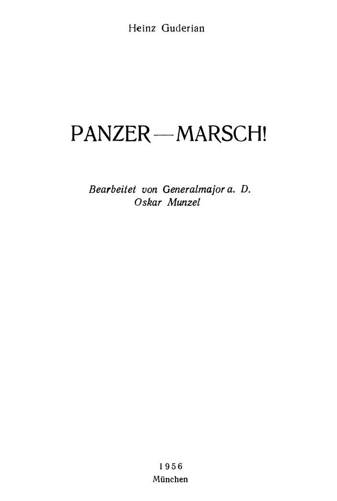
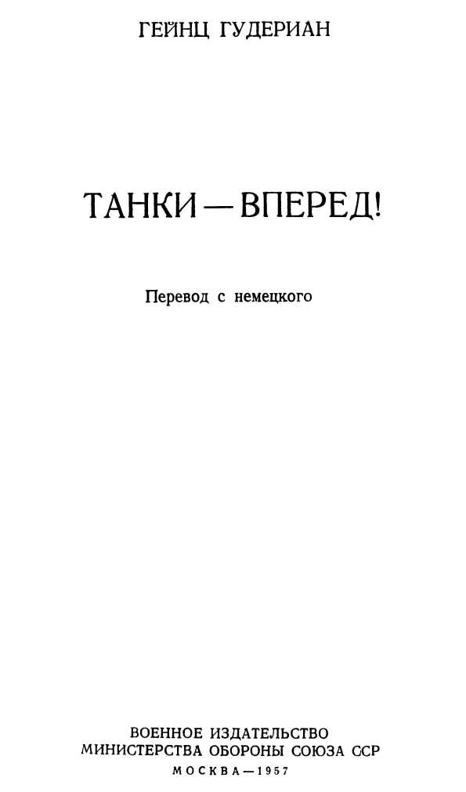

Спасибо, что скачали книгу в бесплатной электронной библиотеке Royallib.com
Все книги автора
Эта же книга в других форматах
Приятного чтения!
Танки — вперед!
Гейнц Вильгельм Гудериан
Гейнц Гудериан
ТАНКИ — ВПЕРЕД!



ПРЕДИСЛОВИЕ К РУССКОМУ ИЗДАНИЮ
В последнее время западные военные теоретики все чаще и чаще обращаются к опыту бывших руководителей фашистского вермахта. Столпы буржуазной военной мысли намеренно закрывают глаза на то, что гитлеровская стратегия привела Германию к крупнейшей в ее истории катастрофе. Особую ценность боевого опыта уцелевших нацистских генералов они видят в том, что он приобретен на полях сражений против Советского Союза, против Советских Вооруженных Сил.
На западногерманском книжном рынке появилось немало всякого рода «воспоминаний» и теоретических откровений генералов и офицеров, мечтающих продолжить начатую при Гитлере военную карьеру в рядах спешно формируемого в Западной Германии бундесвера. Авторы этих книг, становясь в позу наставников, преподносят, как безусловные истины, свои военно-теоретические догмы. Чаще всего они обращаются к личному боевому опыту того периода второй мировой войны, когда еще не был окончательно развеян миф о непобедимости немецко-фашистской армии. И нужно сказать, что на Западе внимательно прислушиваются к голосам этих новых военных пророков.
Все эти авторы стараются обелить запятнавший себя бесчеловечными зверствами гитлеровский вермахт, разжечь у западногерманской молодежи страсть к военной карьере, разбудить реваншистские тенденции у населения Западной Германии.
Было бы ошибочным, конечно, на этом фоне не замечать отдельных заслуживающих внимания военно-теоретических работ. Правда, их авторы обычно не отличаются объективностью — они не прочь передернуть исторические факты, выдать черное за белое, объяснить случайностью закономерный и логический ход событий. Они настойчиво проводят мысль, что германская военная машина застопорилась и развалилась не по вине кадрового генералитета, а по вине невежественного в военном отношении «фюрера» и его ближайших сподвижников. Германская военная доктрина, утверждают они, оказалась несостоятельной не потому, что она основывалась на ложных концепциях, а. потому, что ею не руководствовались на практике. Но несмотря на тенденциозную оценку исторических фактов, в ряде книг все же содержатся обобщения и выводы, которые могут представить известный интерес и для советского военного читателя.
Одной из таких книг и является предлагаемая нашему читателю книга Гейнца Гудериана «Танки — вперед!», выпущенная в 1956 году западногерманским издательством «Шильд-Ферлаг». Эта книга является обработкой черновых набросков Гудериана, осуществленной бывшим генерал-майором гитлеровской армии Оскаром Мунцелем.
Генерал-полковник гитлеровского вермахта Гудериан — один из наиболее видных военных теоретиков. В Западной Германии его считают основоположником теории развития и боевого применения бронетанковых войск. У Гудериана был немалый опыт и практического претворения в жизнь своих теоретических взглядов.
Поэтому издание в Западной Германии книги Гудериана нельзя считать случайным. Оно непосредственно связано с тем, что 1 апреля 1957 года на службу в западногерманских вооруженных силах были призваны первые десять тысяч молодых граждан ФРГ на основе закона о всеобщей воинской повинности. По замыслам создателей бундесвера, в сухопутных силах большой удельный вес должны иметь бронетанковые войска. Пятьдесят процентов формируемых дивизий предполагается сделать танковыми и механизированными. Кроме того, пехотные дивизии будут полностью моторизованы и иметь в своем составе большое количество танков.
Издательство «Шильд-Ферлаг» недвусмысленно указывает, что книга предназначена для молодых танкистов и ее цель — «способствовать быстрейшему возрождению бронетанковых сил» Западной Германии. Прочитав эту книгу, наш читатель сможет получить некоторое представление об основных принципах боевой подготовки танкистов Западной Германии.
Книга «Танки — вперед!» не представляет собой целостного военно-теоретического трактата о бронетанковых войсках. В ней рассматриваются лишь общие принципы боевого использования танков, их действия в различных видах боя, взаимодействие танков с другими родами войск и послевоенное развитие бронетанковых войск армий некоторых государств.
Первая глава книги, написанная, по-видимому, О. Мунцелем, посвящена жизни и деятельности Гудериана. Превознося заслуги своего учителя, Мунцель отмечает, что Гудериан, последовательно проводивший и в теории и на практике идею ведущей роли танков в наступательных боевых действиях, в значительной степени способствовал развитию теории маневренных боевых действий, в которых наиболее полно проявляются преимущества бронетанковых войск. Наряду с субъективными суждениями в этой главе можно найти немало трезвых и объективных высказываний. Так, автор в основном правильно отмечает, что с появлением на поле боя пулемета пехота утратила свою ударную силу, которая в 1914 году перешла к артиллерии, а в конце войны — к танку. Нельзя не отметить и того, что оценивая боевые действия советских и немецко-фашистских войск в минувшей войне, он неоднократно отмечает настойчивость советских войск в наступлении и их упорство в обороне, а также убедительно показывает превосходство советских танков над немецкими в качественном, а затем в ходе войны, и в количественном отношении.
Однако в большинстве случаев боевые действия танковых частей и подразделений немецко-фашистской армии рассматриваются в книге лишь в период успешного их наступления в 1941-42 годах, и нет ни одного примера боевых действий бронетанковых войск гитлеровской армии в другие периоды войны, в частности, во время наступления Советской Армии.
Обращает на себя внимание и тот факт, что при анализе боевых действий бронетанковых войск на советско-германском фронте автор уделяет слишком много места описанию трудностей, связанных с климатическими условиями нашей страны, которые, по его мнению, и явились основной причиной неудач гитлеровской армии.
Такие утверждения свидетельствуют не только об отсутствии у автора объективности в оценке событий того времени, но и о сознательном искажении исторических фактов. Сложность климатических условий нашей страны ни для кого, в том числе и для гитлеровских военных руководителей, не была секретом, и при подготовке к войне с Советским Союзом этого нельзя было не учитывать. К тому же осенняя распутица и наступившая за ней суровая зима влияли на боевые действия обеих сторон, а не только армии Гудериана. Кто серьезно изучал историю второй мировой войны и, в частности, ход боевых действий на советско-германском фронте, тот хорошо знает, что немецко-фашистские войска гнал от Москвы не «генерал Мороз», а советский солдат, и Гудериану и Мунцелю это известно лучше, чем кому-либо другому.
В главе «История немецких бронетанковых войск» автор показывает зарождение и развитие немецких бронетанковых войск, а также их участие в боевых действиях во второй мировой войне. Отметив успехи немецких бронетанковых войск на первом этапе войны, автор сетует на то, что с потерей в конце 1942 года превосходства в танках и особенно в связи с окружением и разгромом 6-й немецкой армии под Сталинградом немецко-фашистские войска начали терять свободу оперативного маневра. В этом автор видит и причины провала наступления, но ведь ни для кого не секрет, что причина этого провала не только в превосходстве советских танков, а главным образом в умении советского командования вести как оборонительные, так и наступательные боевые действия.
Характеризуя ход боевых действий в 1944 году, автор пишет: «Если на Западе противник наступал сначала медленно, то события на Востоке развивались с катастрофической быстротой». В этот период немецко-фашистское командование отказалось от применения гудериановских принципов боевого использования танков, а действия танковых дивизий ограничивались «выполнением только так называемых „пожарных“ задач». Под мощным и стремительным натиском советских войск гитлеровское командование было поставлено перед необходимостью перебрасывать свои танковые соединения для прикрытия брешей в потерявшем свою прочность фронте.
В главе «Общие принципы боевого использования танков» Гудериан высказывает ряд, на наш взгляд, ценных и не вызывающих серьезных возражений мыслей.
Так, в разделе этой главы «Разведка и охранение» автор умело показывает значение разведки и охранения для успеха боя, а также принципиальную разницу в организации разведки и охранения в танковых и пехотных частях. Но имеются и явно неверные положения. Например, совершенно бездоказательно утверждение автора о невозможности вести разведку на танках. Трудно согласиться и с тем, что зенитный пулемет, установленный на танке, не оправдал себя. Не станем спорить по этим вопросам, будучи уверенными, что наш военный читатель самостоятельно разберется в таких несложных проблемах.
Вопросам организации наступления и преследования посвящен специальный раздел. Рассматривая танк как наступательное оружие, автор делает вывод, что «наступление — стихия танка». По его мнению, из двух видов наступления — наступления с ходу и наступления с занятием исходного положения — первое лучше всего отвечает сущности бронетанковых войск. Нельзя не согласиться с этим утверждением Гудериана. Однако и в этом разделе имеются не совсем точные, а иногда и прямо неверные положения. Например, автор утверждает, что «наступление должно проводиться на широком фронте и на большую глубину» и что «только в этом случае можно достигнуть решающих успехов». Такая общая постановка вопроса без учета конкретных условий неправильна. Проводить такое наступление, конечно, можно, но не всегда, а только в определенной обстановке.
В 1943 году немецкие бронетанковые войска, по признанию автора, утратили свое превосходство над советскими и использовались почти исключительно для решения оборонительных задач. Несомненно, за это время немецкие войска приобрели значительный опыт ведения оборонительных действий. Поэтому было бы естественно ожидать, что автор, если он действительно стремился «передать солдатам новых немецких бронетанковых войск военный опыт, доставшийся Германии такой дорогой ценой», даст глубокий и всесторонний анализ боевого опыта по вопросам обороны. Однако этот вид боя освещен очень слабо.
В разделе «Противотанковые средства» рассматривается проблема противотанковой обороны и излагаются основные положения по боевому использованию противотанкового оружия. Гудериан правильно отмечает, что против мощных танковых соединений, наступавших внезапно и в быстром темпе, во время минувшей войны все противотанковые средства оказывались недостаточными, особенно если танки наступали при эффективной поддержке авиации. Нельзя не согласиться и с тем, что «с появлением на поле боя танков противника все средства должны быть обращены на их уничтожение, чтобы снова получить свободу маневра и возможность дальнейшего продвижения вперед».
В разделе «Действия зимой и в условиях распутицы» (глава «Действия танков в особых условиях») Гудериан высказывает ряд совершенно неверных положений. Так, по его мнению, «передвижения и боевые операции крупных масштабов прекращались… в периоды весенней и осенней распутицы». Если это и верно, то только для немецко-фашистской армии. Советская же Армия имеет богатый опыт ведения крупных операций и в этих сложных условиях. Достаточно назвать такие блестящие наступательные операции советских войск, как Корсунь-Шевченковская, Умань-Батошанская, Проскурово-Черновицкая, проведенные ранней весной 1944 года, а также Висло-Одерская наступательная операция 1945 года, проходившая в условиях сильнейшей весенней распутицы.
Нельзя согласиться с выводами автора по вопросам технической эксплуатации танков в зимних условиях, а также с его рекомендациями о порядке переправы танков по льду.
Что касается положений Гудериана о ведении боя в зимних условиях, то бросается в глаза его стремление скорее оправдать свои неудачи, чем дать научно обоснованные выводы и рекомендации на будущее. Как утверждается в разделе «Бой за населенный пункт и в лесу», «танки мало пригодны к ведению боя в населенных пунктах и совершенно непригодны к уличным боям в больших городах». Оставив это утверждение на совести автора, напомним, что советские танки по пути на Берлин обеспечили быстрый захват многих немецких городов и особенно большую роль сыграли при штурме столицы фашистской Германии.
В разделе «Бой в окружении» справедливо отмечается, что для танковых частей временное окружение или потеря связи со своими войсками не представляет серьезной опасности, пока танки сохраняют свою маневренность. Однако немецкие танкисты, попадавшие во время минувшей войны в окружение советских войск, вряд ли разделяют эту точку зрения. Да и сам автор с горечью восклицает: «У кого из участников боев на Востоке до сих пор не вызывает мрачных воспоминаний слово „котел“!» Видимо, эти мрачные воспоминания вызваны тем, что, говоря словами автора, «русские особенно хорошо умели организовывать противотанковый огонь по всей линии кольца окружения». Для прорыва такого противотанкового заслона окруженным войскам часто требовалась помощь извне, которая, впрочем, далеко не всегда выручала немецко-фашистские войска. Достаточно напомнить о безуспешной попытке танковой группы Манштейна выручить окруженную под Сталинградом армию Паулюса.
В разделе «Хитрость, обман и коварство» автор книги сетует на использование в последней войне коварных приемов, которые привели к «окончательному уничтожению прежних рыцарских правил ведения войны». При этом он уверяет, что немецкому солдату коварные уловки были чужды. Однако много ли найдется наивных людей, которые поверят в так называемое «благородство» немецко-фашистской армии после всех тех бесчеловечных приемов, которые они без всякого стеснения применяли и на Западе, и в особенности — на Востоке. Такие варварские методы, как отравление воды и продовольствия при отходе, проведение атак под прикрытием женщин и детей, применяла только немецко-фашистская армия.
Значительное место отводится в книге вопросам взаимодействия. Освещаются они, по нашему мнению, в общем правильно и серьезных возражений не вызывают. Мы хотели бы обратить внимание читателя лишь на высказывание автора о том, что в саперах часто «ощущалась большая необходимость, чем в пехоте». Мы не отрицаем большого значения взаимодействия танков с саперами, но стремление показать, что танки часто нуждались больше в саперах, чем в пехоте, звучит неубедительно. Утверждая это, автор противоречит неоднократно высказываемым им положениям, в которых подчеркивалась важность взаимодействия танков с пехотой.
Несмотря на тенденциозность в изображении событий второй мировой войны и стремление автора оправдать поражение немецко-фашистской армии на Восточном фронте, ряд положений книги, при критическом отношении к ним, может представить для советского читателя известный интерес с точки зрения изучения опыта боевого применения танков. Вместе с тем книга показывает, как в Западной Германии имя и теоретические выводы Гудериана используются для подготовки бронетанковых войск к участию в новой войне, замышляемой агрессивными кругами империалистических государств против Советского Союза и других стран социалистического лагеря.
Маршал бронетанковых войск П. РОТМИСТРОВ

ОТ ИЗДАТЕЛЬСТВА «ШИЛЬД-ФЕРЛАГ»
Создатель немецких бронетанковых войск генерал-полковник Гудериан мечтал написать книгу, в которой были бы обобщены как его собственные мысли о принципах боевого использования танков, так и опыт второй мировой войны. В этой книге Гудериан хотел отметить заслуги немецких танкистов, передать солдатам новых немецких бронетанковых войск военный опыт, доставшийся Германии такой дорогой ценой. К сожалению, он не успел закончить этот труд — ранняя смерть вырвала перо из его рук.
Чтобы завершить эту работу и тем самым осуществить замысел покойного, издательство «Шильд-Ферлаг» обратилось к генерал-майору в отставке Оскару Мунцелю с просьбой взять на себя обработку материалов генерал-полковника и подготовить их к изданию. Как и большинство генералов-танкистов, Мунцель пришел в бронетанковые войска из кавалерии. Он прошел долгий путь от командира взвода до командира дивизии. Как в мирное время, так и в годы войны он имел возможность часто и подолгу беседовать с Гудерианом. Во время войны он был начальником танковой школы в Вюнсдорф-Бергене и долгое время руководил подготовкой офицеров бронетанковых войск. После войны он стал советником египетского правительства по вопросам бронетанковых войск. Учитывая многосторонний опыт генерал-майора Мунцеля и его тесную личную связь с генерал-полковником Гудерианом, издательство решило, что он может наиболее успешно справиться с задачей по обработке и подготовке к изданию данной книги.
В качестве заглавия к книге выбрана старая команда «Танки — вперед!», лучше всего характеризующая наступательную функцию танка. Ведь и в обороне танки могут выполнить свою задачу только путем наступательных действий.
Мы надеемся, что в книге «Танки — вперед!» молодые танкисты найдут полезные для них сведения и тем самым книга будет способствовать быстрейшему возрождению немецких бронетанковых сил.

ОТ СОСТАВИТЕЛЯ
В век техники опыт и теория очень быстро стареют. Однако при правильном их использовании они могут послужить ценной основой для дальнейшего развития. Об этом говорят слова Фридриха Великого:
«Опыт почти ничего не значит, если его не обобщают, не перерабатывают и не пытаются применить».
В книге «Танки — вперед!» показаны развитие и тактика немецких танковых частей и подразделений в период с 1935 по 1945 год. Однако исчерпывающе осветить такой широкий вопрос в одной книге невозможно. Слишком разнообразен и обширен был опыт, накопленный бронетанковыми войсками в процессе быстрого создания вооруженных сил и в период войны. К тому же этот опыт был приобретен на разных театрах военных действий, в боях против армий многих стран, обладавших различным оружием и применявших разнообразную тактику. Книга «Танки — вперед!» основана на материалах прошлого, но целый ряд ее положений не утратил своего значения и в наши дни.
Приложенные к тексту схемы помогают читателю лучше понять содержание отдельных глав.
Использование других родов войск освещено в книге лишь постольку, поскольку они непосредственно влияли на боевые действия танков. Сопровождая и поддерживая танки и действуя при этом не менее самоотверженно, другие рода войск снискали себе такую же славу, как и бронетанковые войска.
Я особенно благодарен господину Штреккеру из издательства «Шильд-Ферлаг» за просмотр рукописи и сделанные им замечания, а также за техническое оформление книги. Пользуясь случаем, я хотел бы поблагодарить также офицеров-танкистов, которые поделились со мной своим большим фронтовым опытом и дали мне ряд ценных советов.
Хочется, чтобы содержание этой книги было пронизано тем боевым духом танкистов, который завещал нам генерал-полковник Гудериан!
Пусть каждая глава покажет, каких успехов добивались в свое время молодые офицеры, унтер-офицеры и рядовые танковых войск. Страницы книги, относящиеся непосредственно к событиям войны, напомнят о суровых испытаниях, которые им пришлось перенести. Это будет лучшим памятником нашим павшим товарищам.
Оскар МУНЦЕЛЬ

ГЕНЕРАЛ-ПОЛКОВНИК ГУДЕРИАН
В любом деле все зависит от человека.
Фон Сект
В книге «Танки — вперед!» наряду с обобщением опыта боевого использования немецких бронетанковых войск во второй мировой войне излагаются некоторые теоретические взгляды создателя этих войск — генерал-полковника Гудериана. Поэтому мы сочли необходимым поместить в начале книги краткий очерк жизни и деятельности Гудериана.
Гейнц Гудериан родился 17 июня 1888 года в семье офицера в г. Кульме (Хелмно) на Висле. В 1907 году после окончания кадетского корпуса и присвоения ему звания фенриха
[1] он был направлен в 10-й Ганноверский егерский батальон. Гудериан женился на дочери врача из Гослара и имел двух сыновей, ставших, как и он, кадровыми офицерами.
На формирование характера и мировоззрения этого человека большое влияние оказали фамильные и прусские военные традиции, которые для него означали долг, повиновение, чувство ответственности и любовь к своей профессии. Гудериан твердо стоял на той точке зрения, что солдат должен выполнять все, что от него требует начальник, а начальник в свою очередь должен смело выступать в защиту интересов подчиненных, когда вопрос касается их жизни, здоровья и благополучия. И он сам всегда действовал, руководствуясь этим правилом. Всем известно, что в конце декабря 1941 года он был отстранен от командования за резкое выступление в защиту своей танковой армии, от которой в условиях суровой русской зимы требовали невозможного. В марте 1943 года Гудериан был назначен генерал-инспектором бронетанковых войск. В тяжелые для отечества дни он не мог отказаться от этого назначения, но еще до окончания войны снова был отстранен от должности за свои откровенные высказывания. Обладая сильной волей, Гудериан всегда твердо отстаивал свою точку зрения, но не упорствовал, если ему доказывали ее ошибочность.
Личные черты характера и воспитание в Госларском егерском батальоне, где он начинал службу, позволили Гудериану выработать в себе качества, необходимые для командира-танкиста, — непоколебимую волю, решимость внезапно атаковать и стремительно громить противника, а также способность хладнокровно разбираться в самой сложной обстановке. Его темперамент, всесторонняя и основательная подготовка как офицера генерального штаба позволяли ему быстро проводить в жизнь свои тщательно продуманные решения. Лучшие качества кавалериста помогли Гудериану стать видным танковым командиром. Еще во время первой мировой войны Гудериан, тогда офицер одной из кавалерийских дивизий, пришел к убеждению, что для возрождения основных принципов боевой фридриховской кавалерии нужно научиться по-иному оценивать и использовать боевые условия, время и пространство. Гудериан воспринимал все новое и полезное, даже если оно шло из-за границы, но всегда многое вносил от себя.
Колоссальную работу проделал этот солдат: от первых опытов с моделями до создания нового рода войск; от конструирования первых танков до массового выпуска новой боевой техники; от обучения мелких подразделений до вождения танковых соединений. Над всем этим ему приходилось работать, не имея никакой базы в прошлом, порой преодолевая сопротивление консерваторов. Гудериан затратил колоссальные усилия на изыскание средств для формирования бронетанковых войск и на доказательства правильности предлагаемого им пути их развития. Он глубоко верил в правильность своих идей — иначе у него не хватило бы сил и борьба закончилась бы безуспешно. Конечно, Гудериана поддерживали многие офицеры всех рангов из числа его верных и восторженных помощников. Однако основные идеи исходили от него, и только он, занимая влиятельные посты, мог их осуществлять. Поэтому как в самой Германии, так и за ее пределами Гудериан с полным правом считается отцом немецких бронетанковых войск.
Командуя танковым корпусом в Польше и во Франции, а также танковой группой и танковой армией в России, Гудериан мог лично проверить на практике правильность своих теорий. Нет нужды перечислять многочисленные победы, одержанные его бронетанковыми войсками. Неразрывно связанным с его именем останется в истории «блицкриг», явившийся в применении к боевым действиям танков гениальным решением проблемы, которая встала еще в период первой мировой войны. Тем самым была похоронена идея позиционной войны с ее изнуряющей бесперспективностью. Укрытый броней двигатель вернул войскам Маневренность, утраченную с появлением на поле боя мощного оборонительного оружия. Большой заслугой Гудериана было то, что он сделал из этого необходимые выводы для усовершенствования организации, боевой подготовки и вождения бронетанковых войск. Двигатель обязывает командира, учил Гудериан, быстро принимать решения и самостоятельно их осуществлять, ибо танк, вынужденный передвигаться на поле боя в темпе наступления пехоты, обречен на гибель. Танкист должен в первую очередь следовать завету Фридриха Великого: «Чем стремительнее наступление, тем меньше жертв».
Для правильной оценки всего сделанного Гудерианом нужно учесть, что с момента создания бронетанковых войск и до первого их массового использования прошло всего 6 лет мирного времени. Все, что не удалось создать за эти годы, пришлось доделывать в значительно более трудных условиях войны. Когда в марте 1943 года Гудериан был назначен на ответственный пост генерал-инспектора, он, глубоко озабоченный будущим Германии и твердо веривший в возможности танков, немедленно приступил к реорганизации бронетанковых войск. Однако в условиях, когда военный потенциал Германии непрерывно падал, а слабеющая с каждым днем авиация не могла оказывать достаточно эффективной поддержки наземным войскам, ни один даже самый лучший организатор не мог бы обеспечить на длительное время равновесие сил на всех театрах военных действий. В начале марта 1945 года Гудериан был снова отстранен от должности, так как прямолинейность делала его «неудобным» для верховного командования человеком. С этого времени он уже не оказывал влияния на развитие событий последних месяцев войны.
После капитуляции немецкой армии Гудериан попал в плен к американцам. Но даже в тяжелые годы заточения, за колючей проволокой он не утратил верности своим идеям. Освобожденный в 1948 году, Гудериан отдыхал недолго, хотя тяжелая болезнь уже подтачивала его силы. С большим интересом следил он за политическими событиями послевоенных лет, развитием бронетанковых войск- в странах своих бывших противников и обменивался мнениями с известными западными специалистами в области танков. Гудериан мог с удовлетворением отметить, что его идеи находят все большее распространение за границей.
Он был активным участником слетов и собраний бывших военнослужащих и поддерживал тесный контакт со своими многочисленными товарищами по оружию. В книге «Воспоминания солдата» Гудериан изложил для будущего поколения историю развития немецких бронетанковых войск, отметив их выдающуюся роль в ходе войны. Чтобы передать молодым танкистам будущих немецких вооруженных сил накопленный во второй мировой войне боевой опыт, Гудериан начал писать новую книгу, закончить которую ему помешала смерть.
Генерал-полковник Гудериан умер 14 мая 1954 года. Многочисленные старые друзья проводили его в последний путь. Он похоронен в Госларе, где начинал свою военную службу. После войны плоды его труда были уничтожены. Немецкие танки, некогда заставившие содрогнуться весь мир, были сданы на слом. Но уничтожить идеи Гудериана и их значение для современной стратегии оказалось невозможным.
Мы, бывшие военнослужащие немецких бронетанковых войск, помним, что служили под командованием генерала-танкиста, с которым мы связаны всем сердцем. Он был и остается нашим Гудерианом.

ИСТОРИЯ НЕМЕЦКИХ БРОНЕТАНКОВЫХ ВОЙСК
Сомнения возникают постоянно. Наперекор всем сомнениям успеха добьется лишь тот, кто способен действовать в любых условиях. Потомки скорее простят ошибочные действия, чем полное бездействие.
Гудериан
История немецких бронетанковых войск коротка, но содержательна. Она неразрывно связана с деятельностью бывшего генерал-инспектора этого рода войск генерал-полковника Гудериана. Успехи и неудачи его жизни совпадали с периодами подъема и застоя в развитии бронетанковых войск.
В старую кайзеровскую армию, состоявшую из пехоты и кавалерии, новинки военной техники внедрялись медленно, с большим трудом. Первая мировая война положила начало использованию в военных целях двигателя внутреннего сгорания, однако в тот период немцы совершенно не применяли автомобилей для крупных перебросок войск — они впервые были использованы противником. В дальнейшем, когда были исчерпаны все средства борьбы против господствовавшего на поле боя пулемета, у противника появились первые танки. Первоначально они были задуманы как вспомогательное оружие пехоты, при поддержке которого предполагалось преодолевать глубокую систему траншей.
Первый значительный успех принесло массированное использование танков в боях у Камбре (1917 г.). Но эта удача оказалась единичной — в последующих боях танки, еще далекие от совершенства, опять применялись небольшими группами. Поэтому немецкое верховное командование вначале недооценило новый вид оружия, полагая, что сможет легко справиться с танками при помощи старых средств обороны. Лишь на горьком опыте сражений под Суассоном и Амьеном, где противник, использовав танки внезапно и массированно, глубоко вклинился в оборону немецких войск, немецкое верховное командование убедилось в ценности танков и признало их строительство первоочередной задачей. Но тогда Германия испытывала резкий недостаток в сырье и потому ликвидировать двухгодичное отставание в танкостроении оказалось невозможным. На следующий (1919) год было запланировано построить всего 800 танков, в то время как три страны Антанты легко могли выпустить в тридцать раз больше машин.
Немецкий танк типа A7V периода первой мировой войны, как и все другие танки того времени, представлял собой стальную громадину высотой 3,35
м и длиной 7,3
м. Вес танка достигал 30
т. Он был вооружен 57-
мм пушкой и шестью пулеметами. Экипаж состоял из одного офицера и 15 рядовых.
Маневренность танков была крайне низкой. Легкая броня обеспечивала защиту только от ружейного и пулеметного огня, а техническое несовершенство танков являлось причиной частого выхода их из строя. Вскоре опасными врагами танков стали артиллерийские орудия, которые, выдвигаясь вперед, вели огонь прямой наводкой. И все-таки даже такие танки оказались в состоянии поднять пехотинцев из окопов и увлечь их за собой в наступление.
После первой мировой войны временно наступил почти полный застой в тактическом и техническом развитии танков. В странах Антанты осталось неиспользованным большое количество техники последних лет войны, а Германия была вынуждена сдать свои немногочисленные танки победителям и оказалась полностью разоруженной. В последующие годы двигатель все больше внедрялся в иностранные армии, хотя только в Англии он дал новые импульсы развитию тактики бронетанковых войск, да и то больше в теории, чем на практике.
По Версальскому договору Германии была оставлена лишь небольшая армия (100 000 человек) и было запрещено иметь танки. Но нельзя было прекратить работу творческой мысли, и в Германии продолжались поиски новых средств для преодоления застывших форм ведения войны. Продол жалась, в частности, разработка тактико-технических требований к танкам. При этом сначала считалось, что из двух тактических свойств танка — огня и подвижности — можно использовать только его огонь. Но здесь судьба дала зарождавшимся немецким бронетанковым силам новатора в лице Гудериана.
В 1922 году Гудериан был переведен в инспекцию автомобильных войск министерства рейхсвера. Здесь он со всей тщательностью, свойственной офицеру генерального штаба, изучил вопросы технического и тактического использования моторизованных войск. К этому времени стало совершенно очевидным, что с повышением мощности двигателя и увеличением скорости танка его боевые возможности значительно расширились. Используя опыт иностранных специалистов, особенно взгляды близких ему по духу английских военных писателей Фуллера и Лиддел Гарта, Гудериан постоянно заявлял о том, что началась новая эра — эра господства двигателя на земле, воде и в воздухе и что его возможности непрерывно растут. Полководцы всех времен, как доказывал Гудериан на примерах из военной истории, непрерывно изыскивали новые средства для повышения маневренности войск и более стремительного развития боевых действий. С этой целью они увеличивали численность подвижных войск. Основываясь на опыте первой мировой войны, Гудериан показал, что с появлением на поле боя пулемета пехота утратила свою ударную силу, которая в 1914 году перешла к артиллерии, а в конце войны — к танку.
Малочисленные немецкие автомобильные войска, насчитывавшие в то время всего 7 батальонов, с восторгом восприняли идеи Гудериана о моторизации армии. В автомобильных войсках началась теоретическая подготовка офицеров. Для обучения использовались модели танков на автомобильных шасси и английский устав бронетанковых войск. По-настоящему новый род войск начал создаваться только после 1931 года, когда начальником штаба инспекции автомобильных войск стал Гудериан. Автомобильные войска были реорганизованы и оснащены новыми машинами.
В 1933 году, в связи с изменениями в политической обстановке, моторизация войск получила особенно широкий размах. Началась реорганизация кавалерийских полков в моторизованные пехотные части. Наряду с инспекцией автомобильных войск было создано управление бронетанковых войск. Начальником управления был назначен генерал-лейтенант Лутц, а начальником штаба — полковник генерального штаба Гудериан. В автомобильной школе в Цоссене, в которой обучались также 3 танковые роты, на первых тактических учениях в качестве гусеничных машин применялись сельскохозяйственные тракторы. Спустя год уже две автомобильные школы — в Цоссене и Ордруфе, каждая численностью до полка, готовили инструкторов для реорганизуемых автомобильных батальонов и кавалерийских полков. Летом 1935 года на полигоне в Мунстере проводились учения первой танковой дивизии. Маневры прошли успешно, и тогда был отдан приказ о формировании по ее образцу трех дивизий в районе Берлина, Веймара и Вюрцбурга с подчинением их управлению бронетанковых войск. Полковник Гудериан принял командование 2-й танковой дивизией, чтобы подготовить ее в соответствии со своими идеями. Подразделения, прибывшие из разных частей, с большим рвением приступили к изучению нового для них вида оружия. Вновь сформированные полки и отдельные батальоны занимались боевой подготовкой по единому учебному плану. Кроме трех танковых, были сформированы еще 3 легкие и 4 моторизованные дивизии. Все эти 10 дивизий были сведены в 3 армейских корпуса, образовавших одну группу с общим командованием. Так было создано ядро германских бронетанковых войск.
Специальные курсы непрерывно готовили офицеров, унтер-офицеров и технический персонал для новых танковых соединений. К этому времени на основе старой прусской военной школы в Вюнсдорфе под Берлином была создана первая танковая школа со своей постоянной учебной базой и небольшим учебным полем в Цоссене. Позднее она получила наименование «1-я бронетанковая школа». Там изучались новые теоретические положения, а на специальных курсах в Дёбериц-Эльсгрунде проводились практические занятия по вождению танков, что в то время считалось очень сложным делом. Но одного учебного заведения стало недостаточно, и поэтому кавалерийская школа в Крампнице была наполовину переключена на подготовку стрелков-мотоциклистов и экипажей бронеавтомобилей. Позднее она перешла на обучение подразделений мотопехоты и бронеавтомобилей и стала называться «2-я бронетанковая школа». На базе экспериментального отдела моторизации войск и технических курсов 1-й бронетанковой школы была создана еще одна самостоятельная школа. Наконец, в 1944 году в Штутгарт-Вайхингене была создана авторемонтная школа.
Таким образом, с большой энергией делалось все, чтобы обеспечить современный уровень подготовки молодых бронетанковых войск. Но далеко не все в эти немногие годы удалось полностью осуществить. Так, значительную трудность представляло оснащение войск машинами повышенной проходимости, а также организация службы ремонта и технического снабжения.
Танковые дивизии находились в привилегированном положении в отношении оснащения, так как они в большей степени отвечали оперативной цели — «путем сосредоточенного и быстрого ввода в бой целого танкового соединения обеспечить решительное наступление на большую глубину» (Гудериан). Каждая из них состояла из двух бригад (одной танковой и одной пехотной) двухполкового состава, одного артиллерийского полка и других подразделений. Так называемые легкие дивизии, состоявшие из двух моторизованных пехотных, одного разведывательного, одного артиллерийского полков и танкового батальона, имели переходную организацию и вскоре были реорганизованы в танковые дивизии, частично вооруженные чехословацкими танками. Мотопехотные дивизии были полностью моторизованы и имели организацию обычной пехотной дивизии. Включение в состав этих дивизий немногочисленных танков противоречило бы принципу сосредоточения сил на решающем направлении. Поэтому было сформировано только несколько отдельных танковых бригад в качестве резерва главного командования.
Создав бронетанковые войска и признав их основным родом войск, командование немецкой армии отошло от существовавшей в то время в иностранных армиях точки зрения на танки лишь как на средство сопровождения пехоты. По новой концепции танковые соединения должны были полностью использовать скорость и радиус действия танков. Однако еще в 1936 году Гудериан пришел к выводу, что одни только танки не смогут решить все задачи и поэтому должны постоянно взаимодействовать с другими родами войск. Исходя из этого, танковым дивизиям придавали соответствующие их задачам средства сопровождения. Война целиком подтвердила правильность этой концепции, и организация дивизии оставалась в основном неизменной.
Первые научные исследования в области танкостроения относятся еще к 1926 году. Однако практическая работа в войсках началась только в 1933 году с использования сельскохозяйственных тракторов, о которых уже упоминалось. Конструкторам танков и танкового вооружения приходилось учитывать, что приступить к перестройке промышленности и серийному производству танков можно будет не сразу. К тому времени техника в области танкового вооружения шагнет вперед. Легкий танк предполагалось вооружить 50-
мм, а средний — 75-
мм пушкой. Но чтобы ускорить вооружение танков, на легкий танк первоначально поставили только пулемет и 37-
мм пушку, которая к тому времени уже была на вооружении немецкой противотанковой артиллерии. В период, предшествовавший выпуску новых образцов боевых машин, войска для учебных целей использовали специальные тренировочные танки, вооруженные только одной 20-
мм автоматической пушкой или двумя пулеметами. Впрочем, эти небольшие танки вплоть до начала войны с Россией поступали в войска в качестве пополнения недостающей штатной численности и даже использовались в боях.
Маневренность и мощь огня — важнейшие требования, предъявляемые к танкам. Обеспечение этих свойств обычно шло за счет брони. Только по мере повышения мощности двигателя и увеличения габаритов танка удавалось постепенно улучшать и его бронезащиту. Последнее было особенно необходимо для танков непосредственной поддержки пехоты. Поэтому танк «Тигр», предназначавшийся в последние годы второй мировой войны для выполнения этой задачи, имел мощную броню, но зато малую скорость. У самоходных орудий была слабая броневая защита, так как для них особенно важное значение имела высокая маневренность и бронебойность. Запросы войск были хорошо известны управлению вооружения, и оно стремилось их удовлетворять, однако не успело всего сделать за короткий период создания бронетанковых войск.
Первое боевое крещение немецкие бронетанковые войска получили в Испании в 1938 году. Четыре танковые роты, вооруженные легкими танками Круппа, приобрели там некоторый опыт, оказавшийся весьма полезным для дальнейшего развития бронетанковых войск. Массированно танки впервые были использованы в войне с Польшей в 1939 году. Тогда потребовалось всего 18 дней, чтобы разгромить вооруженные силы этой страны. При этом численность немецких войск оставалась на уровне мирного времени. Впервые в военной истории был применен и показал свое превосходство принцип маневренного ведения боевых действий с массированным использованием танковых соединений на решающих направлениях.
Когда 10 мая 1940 года начались боевые действия во Франции, то на бывших полях сражений первой мировой войны действовало уже 10 танковых и 4 мотопехотные дивизии. Даже труднопроходимая местность пограничного района Арденн и многочисленные реки и каналы не смогли задержать их стремительного продвижения. Оправдывалось предсказание создателя немецких бронетанковых войск Гудериана: «Ничто не сможет остановить эту мощную ударную силу». Массированное применение танковых соединений оказало революционизирующее влияние на управление и организацию армий других стран. Это влияние сказывается и в настоящее время.
Сразу же после окончания кампании во Франции бронетанковые войска вновь начали готовиться к военным действиям. Планировалось нападение на территорию Англии (операция «Морской Лее»), Для этого потребовалось бы высадить морской десант на Британские острова. Последний участок пути от транспортного судна до берега танкам пришлось бы преодолеть своим ходом, частично под водой. Тщательно проведенные опыты показали, что герметизированный танк может при помощи специального устройства для работы двигателя под водой передвигаться на глубине до 10
м. Но все ограничилось лишь приготовлением — нападение на Англию не состоялось.
В 1941 году перед бронетанковыми войсками встал ряд новых, особенно трудных задач, само многообразие которых уже таило в себе зародыш будущих поражений. В середине февраля немецкие танки были направлены в Северную Африку, чтобы оказать поддержку итальянским войскам. Быстрое продвижение Роммеля, имевшего в своем распоряжении весьма ограниченные бронетанковые силы, сделало широко известным его имя. Почти одновременно с этим немецкие танковые дивизии участвовали в боях на Балканском полуострове, где они встретились с целым рядом трудностей, связанных с действиями в горах.
Однако наиболее серьезной и особенно тяжелой оказалась война против Советской России, начавшаяся из-за действий на Балканах с некоторым опозданием — только 22 июня 1941 года. По плану предполагалось в том же году стремительным ударом отбросить противника к Волге. Предстояло вести боевые действия в стране с выносливым и любящим свою родину населением, на территории, где слабо развита сеть пригодных для передвижения дорог и к тому же множество болот, огромных лесов и мощных рек. Суровые климатические условия также осложняли действия войск. В какой же степени оправдала себя моторизация в этой обстановке?
Перед началом кампании в России количество танковых дивизий было удвоено. Ввиду того что танковая промышленность не могла обеспечить выпуск достаточного количества машин, увеличение числа дивизий пришлось осуществить за счет уменьшения их ударной силы. Вместо танковой бригады двухполкового состава каждая танковая дивизия получала полк двух- или трехбатальонного состава. В пехотных полках только одна рота имела легкобронированные транспортеры для личного состава. Артиллерия располагала лишь небольшим количеством самоходных орудий. Была предпринята попытка повысить боевые качества дивизий путем проведения некоторых специальных мероприятий. Так, чтобы увеличить запас хода танков, использовались прицепы с горючим (которые, впрочем, не оправдали себя), а для преодоления трудных участков пути танки снабжались фашинами. Все это, однако, дало весьма незначительный эффект.
Военная кампания в России началась успешно. Немецкие войска быстро форсировали реки Буг, Березину (на которой в свое время решилась судьба Наполеона), Днепр и Западную Двину и преодолели так называемую «линию Сталина». Была выиграна грандиозная битва за Киев. Казалось, молниеносная война оправдала свое название, но затем наступил первый кризис. Из-за позднего начала операций и потери времени в борьбе за Киев период, благоприятный для ведения боевых действий, резко сократился. Наступила ранняя осень с ее дождями и слякотью. В песках, болотах и грязи выходили из строя двигатели, летели изношенные гусеницы и передаточные механизмы. Войска безуспешно требовали дополнительных танков или хотя бы новых запасных частей. Все их усилия и жертвы не смогли предотвратить неизбежного: бескрайние просторы страны, как и во времена Наполеона, спасли русских.
В начале зимы 1941 года Гудериан, командовавший 2-й танковой армией, которая обходила Москву с юга, со всей свойственной ему прямотой и энергией выступил против дальнейшего продвижения вперед. Попав за это в немилость, он был переведен в резерв главного командования сухопутных войск и вынужден был безучастно наблюдать, как из-за непонимания возможностей бронетанковых войск преждевременно выходил из строя созданный им механизм. Уход Гудериана означал проигрыш сражения и для его армии и для всех бронетанковых войск, где его знали и уважали все, даже самые молодые солдаты.
Конечно, и в дальнейшем предпринимались усилия для того, чтобы увеличить количество танков и повысить их боевую мощь. Ежемесячный выпуск танков достиг 600 машин по сравнению со 125 в 1940 году. Началось запланированное еще в 1940 году производство тяжелых танков «Тигр», а также обладавших хорошей маневренностью средних танков «Пантера», но фронт требовал бронированных машин всех типов. Истекавшая кровью пехота нуждалась в более мощных и подвижных противотанковых средствах. Артиллерия остро нуждалась в самоходных орудиях. Мотопехотные полки танковых дивизий настоятельно требовали бронетранспортеров. Удовлетворить все эти требования было очень трудно, так как возможностей военной экономики явно не хватало. В это время особенно остро ощущалось отсутствие испытанного боевого генерала Гудериана.
В 1942 году удалось добиться новых успехов на фронте. После жестоких зимних боев частично доукомплектованные танковые и моторизованные дивизии снова начали наступление и вместе с 6-й армией вышли к Волге в районе Сталинграда. На Северном Кавказе 1-я танковая армия была уже в 150
км от Каспийского моря. В Африке после неудачно закончившегося первого наступления Роммель молниеносным броском снова достиг границ Египта, на этот раз захватив Тобрук. Но силы немецких войск были уже перенапряжены. В конце года начались крупные неудачи. Одновременно с началом русского наступления под Сталинградом американские войска высадились во Французской Северной Африке. Проиграв сражение под Эль-Аламейном, Роммель был вынужден снова отступить на запад. Немецкая армия теряла свободу оперативного маневра. Звезда бронетанковых войск близилась к закату.
В это исключительно тяжелое время снова вернулся в строй генерал-полковник Гудериан. Назначенный на пост генерал-инспектора, он получил широкие полномочия, используя которые, будь они даны ему раньше, он мог бы избавить армию от больших потерь. Как высший начальник Гудериан отвечал за всю организацию, боевую подготовку и техническое совершенствование бронетанковых войск, включая танковые соединения войск СС. Ему было предоставлено право распределять в войсках все гусеничные и колесные машины. Гудериан добился увеличения производства оправдавших себя в боях танков T-IV (с длинноствольной пушкой), «Тигр» и «Пантера». Началась научно-исследовательская работа по созданию зенитных, разведывательных и мостовых танков, а также танков, управляемых по радио. Гудериан приказал разработать новую организацию танковой дивизии, что позволило бы сократить численность ее личного состава и материальной части с сохранением боевой мощи. Снабжение было организовано на более совершенной основе. Боевая подготовка резервных частей проводилась в условиях, приближенных к боевой обстановке. Были созданы новые, упрощенные уставы, из которых было выброшено все несущественное и которые лучше усваивались благодаря наглядности и простоте изложения. Многочисленные курсы и школы бронетанковых войск теперь подчинялись общему «начальнику учебных заведений», что обеспечивало единство в их работе.
Наступил 1943 год. Он начался потрясающей драмой под Сталинградом. Боевые действия в Африке тоже пришлось прекратить. В июле англо-американские войска высадились на о. Сицилия, а осенью — в Италии. Таким образом, в Европе началась война на два фронта. Высокоиндустриальная Америка уже давно оказывала помощь России путем поставок танков и другой боевой техники. Провал под Курском — Белгородом нашей операции, известной под условным наименованием «Цитадель», явился особенно тяжелым ударом для немецких бронетанковых войск, потерявших там много техники. Наконец, ряд других обстоятельств в самой Германии сильно затруднял действия командования. Пехотные дивизии не удавалось обеспечивать необходимым количеством противотанковых средств, и недостаток в них приходилось возмещать танками. В результате, несмотря на ежемесячное производство в среднем 2000 бронемашин всех типов, они не использовались для выполнения основной их задачи — ведения решительного наступления. К тому же производство танков, хотя и медленно, начало сокращаться из-за налетов американской и английской авиации, выводившей из строя многие предприятия военной промышленности и в особенности те, которые производили запасные части. В то же время у противника производство боевой техники быстро росло. В конце концов, чаша весов военного счастья окончательно склонилась на сторону противников Германии.
С 1944 года кольцо вокруг Германии стало сжиматься. Одновременно с высадкой американских и английских войск в Нормандии началось наступление крупных танковых соединений русских на фронте группы армий «Центр». Если на Западе противник наступал сначала медленно, то события на Востоке развивались с катастрофической быстротой. После ожесточенных боев была потеряна Восточная Пруссия и отрезана вся группа армий «Курляндия». Силы немцев были напряжены до предела. Потребности войск в технике удовлетворялись лишь частично. Боеспособный резерв личного состава был почти полностью исчерпан. Чтобы закрыть бреши на фронте, приходилось посылать учебные части. Тем не менее немецкие дивизии, хотя и несколько утратившие стойкость, продолжали на всех фронтах вести борьбу с превосходящими силами противника. Использование танковых дивизий ограничивалось теперь выполнением почти только так называемых «пожарных» задач: их все время перебрасывали на те участки фронта, где создавалась угроза прорыва противника. Во Франции и в Италии передвижение войск могло осуществляться лишь ночью из-за подавляющего превосходства противника в воздухе. В это время начала намечаться новая фаза в развитии танков. Путем оснащения танков специальными приборами ночного видения, обеспечивавшими наблюдение на поле боя на расстояние до 400
м, предполагалось повысить боевые возможности танков в наступлении ночью. Но эти приборы были еще недостаточно совершенны. Лишь в Венгрии удалось провести несколько успешных опытов. Последнее массовое использование танков в наступательной операции, рассчитанной на достижение решающих успехов, потерпело неудачу в декабре 1944 года в Арденнах из-за неблагоприятных условий погоды и прежде всего из-за нехватки горючего.
Зимой 1944/45 года немецкая армия отступала на всех фронтах. Лишь на отдельных участках удавалось добиваться некоторых успехов. Моторизованные части особенно остро ощущали недостаточность поддержки с воздуха.
Война была проиграна по многим причинам, которые здесь невозможно привести. 8 мая немецкие вооруженные силы капитулировали. Вместе с ними были вынуждены сложить оружие и бронетанковые войска, которые до последних дней на ряде участков фронта действовали успешно.
За годы войны этот молодой род войск увеличился почти в 10 раз и, кроме резерва главного командования, к концу войны насчитывал 31 танковую и 20 мотопехотных дивизий, включая бронетанковые части войск СС. Победы бронетанковых войск вошли в военную историю и навсегда останутся в памяти каждого старого танкиста.
Как призыв звучат заключительные слова последней сводки верховного командования:
«В этот тяжелый час вооруженные силы чтят память своих погибших товарищей. Мертвые обязывают нас к дисциплине, повиновению и безусловной верности нашему истекающему кровью отечеству».

ОБЩИЕ ПРИНЦИПЫ БОЕВОГО ИСПОЛЬЗОВАНИЯ ТАНКОВ
Использование танковых соединений соответствует использованию прежних рыцарских армий и фридриховской кавалерии, однако танковые соединения превосходят их в подвижности, радиусе действия и ударной силе.
Фон Кнобельсдорф
Танк и его задачи
Исторический обзор развития танка уже показал, какими трудными путями приходилось идти к цели и как много нужно было накопить опыта, прежде чем современный танк стал отвечать всем предъявляемым к нему требованиям. При оценке этого нового оружия немецкое командование исходило из следующих соображений.
Танк представляет собой комплекс боевых качеств, которых не было у старых видов оружия, и поэтому во многом превосходит их. К активным свойствам танка относятся огонь и движение, к пассивным — броневая защита.
Преимущества танка
1. Благодаря гусеницам обеспечивается высокая проходимость и быстрое передвижение на поле боя. С увеличением ширины гусениц проходимость танка повышается.
2. Двигатель внутреннего сгорания до тех пор, пока он получает горючее, работает беспрерывно и не испытывает преждевременного истощения, как человек или животное. Для обеспечения непрерывности боевых действий необходимо полностью использовать эту особенность двигателя.
3. Танк может быть вооружен несколькими видами оружия, которое быстро приводится в готовность к открытию огня. Благодаря этому повышается возможность эффективного поражения танком целей как защищенных, так и незащищенных броней, даже если они находятся на значительном расстоянии от него.
4. Башня танка может поворачиваться на 360°, что позволяет ему без смены позиций быстро открывать огонь по внезапно появляющимся целям.
5. Танк возит с собой горючее и боеприпасы, чем обеспечивается его длительное участие в бою.
6. Каждый танк имеет собственные средства связи, благодаря чему экипаж слышит команды командира роты и может говорить с командиром своего танка. Это в значительной степени повышает гибкость управления танком и надежность передачи команд.
7. Танк, как средневековый рыцарь, всегда имеет при себе укрытие. Его стальная броня надежно предохраняет экипаж и все наиболее важные узлы танка (двигатель, баки с горючим, радиоаппаратуру и боеприпасы) от воздействия различных противотанковых средств.
8. Танк оказывает сильное моральное воздействие на противника своими размерами, шумом, движением, а в первую очередь — высокой скорострельностью и настильностью огня.
Недостатки танка
1. Танк представляет собой сравнительно крупную цель, а поэтому его легко поразить во время остановок и на малых расстояниях.
2. Сильный шум, производимый танком, затрудняет экипажу ориентировку в боевой обстановке и демаскирует машину.
3. Ограниченный обзор местности и сильная тряска во время движения затрудняют наблюдение за полем боя, особенно за окопавшимся и хорошо замаскированным противником. Поэтому весь экипаж танка вынужден принимать участие в наблюдении за полем боя, а командиру приходится часто высовываться из башни, что угрожает его жизни.
4. Для быстрого и точного попадания в цель танк должен иметь оружие с большой настильностью траектории, поэтому ему трудно поражать цели, расположенные в окопах или на обратных скатах.
5. Танк очень чувствителен и, как всякая другая машина, требует технического обслуживания специалистами и постоянного ухода.
6. Стоимость производства танка очень высока — во время войны для постройки одного танка затрачивался труд 1000 человек в течение 10 дней. Нехватка сырья и недостаток квалифицированных кадров могут значительно снизить выпуск танков.
Основы боевого применения танков
1. Высокая проходимость танка обеспечивает его большую маневренность. Чем быстрее передвигается танк, тем меньше он подвергается опасности поражения со стороны противника. Обладая способностью вести огонь с ходу, танк является наступательным оружием.
2. Все боевые свойства танка полностью используются лишь в том случае, если наступление ведется на большую глубину и войска, прорвав оборону противника, переходят к преследованию.
3. Для прорыва сильно укрепленной обороны противника необходимо массированное применение танков. От этого зависит быстрота достижения успеха и уменьшение потерь своих войск.
4. Танк должен выбирать такую местность, по которой он может быстро передвигаться. Только на благоприятной для танка местности полностью используются мощь его дальнобойного оружия и возможности взаимной огневой поддержки.
5. Танк должен атаковывать внезапно и по возможности там, где предполагается слабое место в обороне противника.
6. Танк нуждается в средствах сопровождения, которые, постоянно следуя за ним, могли бы дополнять его. Лишь в этом случае он может достаточно быстро преодолевать трудные участки местности и поражать противника.
7. Даже в обороне применение танков должно носить наступательный характер. В этом случае массирование приобретает особенно большое значение, так как дает возможность хотя бы на одном участке ликвидировать превосходство наступающего.
8. Только на труднопроходимой местности и в том случае, если свои войска очень слабы, допустимо временное дробление танков на мелкие группы, каждая из которых должна быть не меньше роты. В любом случае обязательны сосредоточенное в одном центре управление и хорошо организованное материально-техническое обеспечение.
9. Маневренность необходима танкам и тогда, когда они непосредственно поддерживают пехоту. Однако в этом случае возможности двигателя используются не до конца.
Общий вывод из опыта Второй мировой войны
Война подтвердила мысль Гудериана о большом значении танков, а также правильность немецких принципов их применения. Эти принципы — быстрота действий и маневра, массированное использование всех сил и средств.
В тех случаях, когда на решающем направлении сосредоточивались все силы и средства, неизменно достигались крупные успехи. В этом случае танки почти всегда прорывали оборону противника и наносили ему сокрушительный удар.
Если танк используется не как оружие специального назначения, а как вспомогательное средство, его эффективность значительно снижается. Одна из причин поражения Германии в минувшей войне состояла именно в том, что возможности танка часто не учитывались.

ОРГАНИЗАЦИЯ И БОЕВОЕ ИСПОЛЬЗОВАНИЕ ТАНКОВЫХ ЧАСТЕЙ И ПОДРАЗДЕЛЕНИЙ
Для достижения решающего успеха необходима превосходная организация.
Фон Шелль
До начала войны с Россией самой крупной чисто танковой боевой единицей была бригада. Она состояла из двух полков двухбатальонного состава. Такие бригады, имевшие в своем составе около 300 танков, в наступлении использовались на направлениях главных ударов. Перед началом военных действий в России эти бригады были расформированы, а вместо них были созданы танковые полки из двух или трех батальонов, входившие в танковые дивизии. Отдельные танковые батальоны были в составе мотопехотных дивизий или находились в резерве главного командования. Сформированные в 1944 году отдельные танковые бригады имели только по одному батальону танков «Пантера» и состояли из 30 машин. Поэтому для проведения крупных наступательных операций приходилось сосредоточивать на одном направлении несколько танковых полков или батальонов.
Командиры танковых бригад и полков действовали в соответствии с приказами командира дивизии. На основе данных о противнике и результатов собственной рекогносцировки они высказывали свои соображения об использовании танков. Командир бригады являлся только тактическим руководителем, в то время как командир полка отвечал за все стороны деятельности своей части. В его распоряжении имелись штабная и ремонтная роты. При вводе в бой всей бригады (полка) командир управлял подразделениями из командирского танка. В зависимости от условий местности, обстановки и боевой задачи полки (батальоны) строили свои боевые порядки в один или несколько эшелонов.
Как организационную единицу танковый батальон можно приравнять к артиллерийскому дивизиону. Организация батальона позволяла ему в течение некоторого времени вести самостоятельные действия. В случаях, когда батальону долго приходилось действовать в отрыве от полка, ему придавались подразделения ремонтной роты. Только отдельные батальоны имели в своем составе ремонтный взвод. Первоначально танковый батальон состоял из штаба, взвода связи, трех рот легких и одной роты средних танков. В каждой роте было 4 взвода по 5 танков и 2 танка во взводе управления роты. Рота средних танков, вооруженных 75-
мм короткоствольной пушкой, имела только 3 взвода. Организация военного времени первоначально предусматривала наличие в батальоне только двух рот легких танков и одной роты средних. После поступления на вооружение более мощных машин количество танков в ротах было сокращено, но зато в батальоне была создана еще одна, четвертая, танковая рота. Таким образом, с 1943 года танковые батальоны имели в своем составе 4 роты трехвзводного состава по 5 танков в каждом и по 2 танка во взводах управления рот. Исключение составляли батальоны танков «Тигр», состоявшие из трех рот. В каждом взводе насчитывалось 4 танка, а всего рота имела 14 танков.
Если полк понес большие потери и получить пополнение в ближайшее время не представлялось возможным, то чтобы облегчить управление подразделениями в бою и лучше организовать их материально-техническое обеспечение, подразделения полка сводились в один батальон, а подразделения батальонов — в роты. Кроме того, эти мероприятия позволяли использовать освободившийся личный состав для выполнения других задач (регулирование движения, использование в качестве пехоты и т. п.).
Органами управления у командира батальона были штаб и штабная рота.
Штаб батальона располагал во время войны двумя легковыми автомобилями повышенной проходимости и несколькими мотоциклами. В его распоряжении находился также один грузовой автомобиль, оборудованный под канцелярию, или небольшой автобус, где работали 2–3 писаря. Во главе этой группы стоял помощник начальника штаба.
Штабная рота состояла из подразделений, необходимых для управления батальоном в бою.
Группа управления входила в штаб батальона и имела 2 танка (для командира, начальника штаба и начальника связи батальона). Снабженные специальным радиооборудованием, эти танки во время боя поддерживали связь с подразделениями батальона, с полком и ротой снабжения. В распоряжении батальонного врача (в зависимости от возможностей) имелся один танк Т-II, Т-III или даже T-IV, благодаря чему врач мог следовать в бою за танковыми подразделениями.
Разведывательный взвод (первоначально он назывался легким взводом), состоявший из 5 танков, выполнял задачи разведки и непосредственного охранения.
Саперно-рекогносцировочный взвод использовался для ремонта дорог, оказания помощи танкам в бою, регулирования движения, рекогносцировки местности, а в случае необходимости и для разведки противника. Машины, предназначенные для рекогносцировки, не имели броневой защиты — это были мотоциклы и легковые автомобили повышенной проходимости. Саперные отделения по возможности получали легкий танк Т-II, а позднее и бронетранспортер, что давало им возможность следовать непосредственно за боевыми порядками подразделений.
Зенитный взвод обеспечивал противовоздушную оборону в первую очередь тыловых подразделений, но в особых случаях, например в теснинах, на привале, в районе сосредоточения и в исходном положении, он привлекался для обеспечения противовоздушной обороны и боевых подразделений.
В боях оправдал себя следующий способ взаимодействия отдельных органов управления танкового батальона.
Командир батальона, находясь в командирском танке, управляет батальоном по радио и путем отдачи устных приказов. Для успешного выполнения поставленной перед батальоном задачи командир обязан хорошо знать боевую обстановку, свои задачи, а также задачи и планы вышестоящих начальников. Управлять батальоном в бою командиру помогают начальник штаба, помощник начальника штаба, начальник связи, а также специалисты по вопросам обеспечения (командир роты снабжения, батальонный врач и начальник инженерно-технической службы). Если вне боя деятельность всех этих помощников сильно разграничена, то во время боевых действий и в особо сложной обстановке их обязанности тесно переплетаются. В случае необходимости все они должны быть в состоянии заменить друг друга.
Как показала война, наименьшие потери командный состав нес в тех случаях, когда он был распределен следующим образом. Начальник связи находится в танке командира батальона, так как обеспечение бесперебойной работы радиосвязи является особенно важной задачей. Начальник штаба, а иногда и его помощник остаются с тыловыми подразделениями, где помимо решения других вопросов организуют материально-техническое обеспечение. Они передвигаются за боевыми подразделениями от рубежа к рубежу, а после боя вновь находятся вместе с командиром.
Командир роты управляет своим подразделением в бою по радиотелефону. Часто бывают случаи, когда он отдает приказания непосредственно какому-либо танку. До развертывания роты в боевой порядок командир роты двигается впереди подразделения. Его личный пример и постоянная забота о своих подчиненных имеют решающее значение для поддержания их морального духа.
Командир взвода отвечает в первую очередь за постоянную боевую готовность танков своего подразделения. В бою его функции как командира несколько ограничены, особенно в тех случаях, когда остается мало боеспособных танков. Поэтому во время боя он лишь докладывает об обнаруженных целях, естественных препятствиях и т. д. Несколько большую самостоятельность командир взвода получает при выполнении задач по разведке, охранению, во время боя в населенном пункте, ночью, а также на закрытой местности, где особенно важно тесное взаимодействие взвода с мотопехотой. Во всех других случаях он управляет взводом путем личного примера, при помощи выстрелов для указания направления, а вне боя подает команды сигнальными флагами или руками.
Командир танка является командиром экипажа. Его основная задача — управление танком в бою. Он обязан выбирать позицию там, где удобнее всего поразить цель, и следить за тем, чтобы его танк занимал свое место в боевом порядке взвода, не мешая движению других танков и ведению ими огня. Для танка, имеющего большие габариты, не всегда можно найти удобную позицию, но иногда и небольшие складки местности оказываются очень ценными. Каждая смена позиции предварительно должна быть тщательно продумана, так как временно приходится прекращать огонь, а это ослабляет танк. Смена позиции производится под прикрытием огня других танков и лишь при условии, что она обеспечит большую эффективность огня танка и более надежное его укрытие. Чем выше темп наступления, тем меньшая опасность грозит отдельным танкам.
То обстоятельство, что командир немецкого танка не был непосредственно занят ведением огня и радиосвязью, а имел возможность все свое внимание уделять наблюдению за противником и управлению действиями экипажа, делало немецкие танки более боеспособными по сравнению с танками армий других стран.
Наводчик помогает командиру танка вести наблюдение за местностью. По внезапно появляющимся целям он открывает огонь без команды. Наводчик орудия в танке командира роты действует более самостоятельно, так как командир должен управлять боем всего подразделения, а не только огнем своего танка. Наводчик помогает командиру танка также и при определении расстояний, а при ведении огня быстро и тщательно вносит необходимые поправки. Величину упреждения хороший наводчик определяет на глаз.
Заряжающий должен быстро доставать необходимые боеприпасы и без задержек заряжать орудие. Он непрерывно докладывает командиру о количестве боеприпасов. Во время боя можно брать боеприпасы вышедших из строя танков.
Радист постоянно поддерживает связь с командиром взвода или роты и следит за бесперебойной работой танкового переговорного устройства. Он обязан соблюдать правила ведения радиопереговоров, а перед боем — проверять исправность радиостанции и настраивать ее на заданную волну. В случае появления помех радист должен уметь быстро перейти на другую волну. Он же ведет огонь из пулемета — главным образом по истребителям танков. Покидая танк, особенно в случае его полного выхода из строя, радист обязан взять с собой таблицу радиосигналов.
Водитель должен в совершенстве знать свое дело. От его мастерства в значительной степени зависит судьба экипажа и успешное выполнение танком поставленных перед ним задач. По указанию командира водитель должен так управлять танком, чтобы не мешать другим машинам наблюдать за полем боя и вести огонь. При занятии позиции очень важно, чтобы он вовремя выключил передачу и плавно затормозил, так как отсутствие толчков дает наводчику возможность быстро и точно наводить орудие. Водитель должен умело выводить танк на позицию за гребнем высоты. Ведя машину, он следит за местностью главным образом непосредственно перед танком, чтобы своевременно обнаруживать неровности и опасные места (мины). При ведении же огня с места водитель наблюдает за всем полем боя. Каждый перерыв в бою он использует для ухода за танком и пополнения запаса горючего.
Все члены каждого экипажа должны действовать с автоматической точностью — это решающее условие для успеха роты. В бою весь экипаж ведет наблюдение за полем боя и отыскивает цели при помощи оптических приборов или через смотровые щели. Все члены экипажа участвуют в уходе за танком и его вооружением, в заправке машины горючим, в замене траков гусениц и катков. В период крупных боев от этой работы не освобождаются даже офицеры. Только водитель получает после боя отдых, чтобы как можно скорее восстановить свою боеспособность. Танковый экипаж образует единый спаянный коллектив, в котором каждый чувствует себя как дома. Изъятие людей из такого коллектива ведет к снижению боеспособности танка и ослаблению всей роты.

ПОХОДНЫЕ СТРОИ, ПРЕДБОЕВЫЕ И БОЕВЫЕ ПОРЯДКИ
Рабская приверженность к определенным формам и правилам противоречит духу подвижных войск.
Из инструкции 1809 года
Маневренное ведение танками боевых действий требует гибкого и четкого управления. Чтобы быстро продвигаться вперед, умело используя местность, и в нужный момент со всей силой обрушиваться на противника, необходимо применять соответствующие походные строи, предбоевые и боевые порядки. Они должны быть просты — это обеспечит возможность быстрого их изменения в зависимости от условий местности и боевой обстановки. Шаблонное применение их противоречит современным принципам боевого использования танков.
Эти основные положения еще до войны были усвоены немецкими бронетанковыми войсками. Военные действия выявили возможность нового упрощения походных строев, предбоевых и боевых порядков. Но в связи с затянувшейся войной и непрерывным падением уровня боевой подготовки иногда пренебрегали даже уже оправдавшими себя строями и порядками. Это вызывало дополнительные трудности и приводило к ненужным потерям.
Отправными пунктами при определении того или иного походного строя, предбоевого и боевого порядка могут служить следующие положения, основанные на боевом опыте.
1. Для управления подразделениями и их огнем необходимо, чтобы каждое подразделение действовало как единое целое, а это может быть достигнуто лишь в том случае, если командиру подразделения предоставлена самостоятельность в определении форм походных строев, предбоевых и боевых порядков. Однако подразделение обязано занимать то место в походном строю или боевом порядке части и выдерживать то направление движения, которое указано ее командиром. Если по условиям местности или боевой обстановки подразделение вынуждено изменить направление своего движения, командир обязан немедленно доложить об этом своему начальнику, так как в противном случае последний потеряет управление подчиненными ему подразделениями.
2. Взвод совершает марш одной колонной, а рота и батальон, особенно на открытой местности, — также и двумя колоннами.
3. Перед боем рота и батальон развертываются в предбоевой порядок в соответствии с условиями местности и боевой обстановки. В наступлении при неясной обстановке рота и батальон принимают предбоевой порядок «клин», а при уже определившемся направлении наступления — «широкий клин». При движении роты «клином» один взвод располагается впереди, два остальных в зависимости от обстановки и условий местности следуют за первым в колоннах или «клином». Необходимо постоянно стремиться, чтобы в бою принимало участие максимально возможное количество огневых средств. Интервалы и дистанции определяются в зависимости от характера местности и пространства, необходимого для взаимодействующих с танками других родов войск. Если не поступило иных указаний, то для того, чтобы не терять соприкосновения с противником и не снижать темпа наступления, направление и темп движения выдерживает головное подразделение. В ходе боя направление наступления может быстро меняться.
4. Для боя рота строится в линию, и при этом все взводы развертываются в цепь.
В мирное время дистанции между танками были установлены в 25
м, а интервалы — в 50
м. Война показала, что эти расстояния слишком малы. Увеличение эффективности огня противника вынудило танки прибегать к большему рассредоточению. Дистанции на марше пришлось увеличить до 50
м, а в условиях превосходства противника в воздухе — до 100
м. При совершении марша ночью, по пыльным дорогам и на закрытой, плохо просматриваемой местности величина дистанции определялась условиями видимости.
5. Взводы, наступающие на одной линии по отношению друг к другу, образуют эшелон. Количество эшелонов зависит от боевого порядка, указанного в приказе вышестоящего начальника, количества танков и характера местности.
Рис. 1.
Походные строи, предбоевые и боевые порядки танкового взвода и роты.
На открытой местности фронт наступления и глубина боевых порядков увеличиваются, чтобы можно было быстро принимать необходимые меры во внезапно меняющихся условиях. В неясной обстановке всегда необходимо эшелонирование, чтобы иметь возможность отразить удары противника по открытому флангу. Это нужно даже в том случае, если уже была выслана разведка.
Во время последней войны огневые средства, сопровождавшие танки, обычно имели слабую броневую защиту или были совсем лишены ее. Они располагались, как правило, в центре боевых порядков танков (так называемый «броневой колокол»), которые обеспечивали им защиту с фронта и с флангов, а при необходимости также и с тыла.
6. В зависимости от задачи, боевой обстановки и условий местности применяются различные формы сосредоточения танков, обеспечивающие их безопасность. Например, на открытой местности танки располагаются на широком фронте и с глубоким эшелонированием. Такое расположение, получившее во время войны название «ежа», давало возможность быстро выступить или создать фронт огня в любом направлении. Обычно порядок сосредоточения определяется специальным приказом в зависимости от цели сосредоточения (марш, занятие исходного положения и т. д.).
7. Если наступление проводится полком или бригадой, то боевой порядок может строиться в один или несколько эшелонов (танковые батальоны располагаются рядом или друг за другом).
Преимущество боевого порядка в несколько эшелонов состоит в том, что такое построение имеет большую глубину, чем обеспечивается возможность оказания быстрой поддержки первому эшелону. Кроме того, это облегчает проведение необходимых перегруппировок и сосредоточения сил на направлении главного удара, которое часто определяется лишь в ходе боя. Но при таком построении боевого порядка затрудняется централизованное управление первым эшелоном, который при движении на широком фронте и встречаясь с различными препятствиями легко может быть разделен на отдельные группы. Боевой порядок в несколько эшелонов оправдал себя в условиях маневренных боевых действий, при наличии сильного противника, а также в том случае, если при преодолении глубокоэшелонированной обороны противника приходилось продвигаться перекатами (например, из-за недостатка боеприпасов и горючего).
Рис. 2.
Предбоевые и боевые порядки танкового батальона и полка.
Преимущество построения боевого порядка части в один эшелон заключается в том, что подразделения, имея большую глубину своих боевых порядков, могут лучше использовать закрытую местность. В случае временного, вызванного условиями местности расчленения боевого порядка части подразделения остаются со своими органами материально-технического обеспечения. Кроме того, построение боевого порядка в один эшелон облегчает организацию атаки одного объекта с двух направлений. Отрицательной стороной такого построения является то, что в бою почти всегда участвуют все подразделения и вследствие этого взаимная поддержка или проведение охватывающего маневра возможны лишь в редких случаях. Да и часть в целом не имеет достаточной глубины. Сосредоточение приданных средств на направлении главного удара также затруднено. Поэтому построение боевого порядка в один эшелон целесообразно главным образом в наступлении с ограниченной целью, при преследовании или когда условия местности вынуждают к дроблению сил.
8. Командиры танковых частей (подразделений) в зависимости от обстановки находятся там, откуда им удобнее всего наблюдать за своей частью (подразделением) и. руководить ею. На марше и во время развертывания командиру удобнее всего находиться в голове колонны, а в бою — примерно в центре боевого порядка. Во время преследования противника командиры частей (подразделений) находятся впереди и поддерживают темп преследования. При отходе они находятся с подразделениями, ближайшими к противнику.
Командиры подразделений вторых эшелонов, как правило, находятся вместе со старшим начальником. Это упрощает и сокращает путь прохождения приказов и команд. Кроме того, находясь впереди, командиры подразделений второго эшелона имеют возможность лично или через органы управления (взвод разведки) заблаговременно ознакомиться с условиями местности и ускорить ввод в бой своих подразделений, которые часто продвигаются скачками.
Рис. 3.
Методы передвижения танкового взвода на поле боя.
Скачками. Преимущества: облегчается управление, обеспечивается возможность одновременного преодоления гребней высот. Недостаток: замедляется продвижение вперед. Применение: при взаимодействии с пехотой и на непросматриваемой местности. Перекатами. Преимущества: ускоряется продвижение вперед, предоставляется возможность обхода и охвата. Недостаток: затрудняется управление. Применение: при выполнении задач по разведке и охранению на открытой местности. Оба метода нередко сочетались друг с другом. В зависимости от условий местности, количества танков и сопротивления противника взводы или отдельные танки по приказанию командира роты часто выдвигались вперед.

ПРИКАЗЫ И ДОНЕСЕНИЯ
Неуверенность в приказе порождает неуверенность в исполнении.
Граф Мольтке
Моторизация армии оказала решающее влияние на способы отдачи приказов. Современная техника с ее высокой скоростью передвижения заставляет командира быстро принимать решение, коротко отдавать приказ и требовать немедленного его исполнения — иначе все преимущества техники пойдут насмарку.
Наиболее крупный переворот в технике отдачи приказов вызвало появление радио. Теперь танковые экипажи всей роты получили возможность слышать голос своего начальника, как это было раньше в кавалерийском эскадроне. Таким образом, было снова восстановлено непосредственное общение командира с подчиненными, утраченное в результате развития рассредоточенных боевых порядков. Приказы, изложенные на бумаге или переданные через третье лицо, всегда казались слишком сухими. Благодаря прямому общению командира с подчиненными приказы снова обрели свою действенность. Кроме того, командир, находясь со своим танком непосредственно среди подчиненных, имеет возможность чаще их видеть. Быстро меняющаяся обстановка боя требует не формально составленных, а кратких, как телеграммы, быстро выполнимых приказов. Контроль за выполнением приказов теперь также облегчен благодаря возможности параллельного слушания переговоров и личного наблюдения за полем боя. Непонятые или неправильно понятые приказы могут быть разъяснены и уточнены гораздо быстрее, чем раньше.
Эта возможность личного контакта с войсками использовалась и высшими начальниками. Кто из солдат 2-й танковой армии не видел постоянно в 1941 году генерал-полковника Гудериана на передовой линии в войсках! Находясь здесь, он одновременно из своей бронированной машины по радио поддерживал связь со штабом армии. Маневренность войск обеих воюющих сторон требует предоставления большей инициативы командирам, а поэтому бессмысленно давать подробные указания и навязывать схемы. В приказе следует в конкретной и четкой форме указать только то, что необходимо сделать. Как сделать — должен решать командир-исполнитель. Чем серьезнее задачи и чем крупнее подразделение, часть или соединение, тем большую свободу действий и инициативу нужно предоставлять их командирам. Как выполнять приказ, вышестоящий начальник может указать лишь в том случае, если он лучше знаком с местностью и обстановкой.
Виды приказов
Предварительные распоряжения имеют целью дать подчиненным больше времени для подготовки к выполнению задачи, чтобы затем ускорить ее дальнейшее осуществление. Даже танк не всегда можно немедленно бросить в бой. Конечно, он постоянно должен находиться в состоянии боевой готовности (заправка горючим, полная обеспеченность боеприпасами и т. д.), однако всегда, особенно зимой, требуется некоторое время на прогрев и запуск двигателя, на отдачу приказа и т. д. Именно поэтому необходимо отдавать предварительные распоряжения, в первую очередь на разведку, рекогносцировку и на марш.
Частные приказы лучше всего соответствуют быстрому ходу танкового боя, особенно в обстановке, не терпящей промедления. Они отдаются в виде коротких приказов по радиотелефону, радиограмм или личных устных распоряжений и содержат лишь то, что подчиненному необходимо знать в данный момент для выполнения своей задачи (приказы, отдаваемые на ходу).
Общие приказы являются классической формой приказов. Однако для танковых рот и батальонов они необходимы лишь в том случае, если отдающий приказ и получающий его располагают достаточным временем и если этот подробный приказ может принести практическую пользу.
Отдача общего приказа необходима при наступлении, которое требует тщательной подготовки, например ночью и при форсировании рек, а также при организации планомерного отхода. Каждое подразделение, включая и экипаж отдельного танка, в той или иной степени принимает участие в предварительной оценке обстановки и в подготовке к бою. Для оценки же обстановки в целом необходимо сделать некоторое обобщение в виде общего приказа.
Специальные распоряжения по материально-техническому обеспечению отдавались подразделениям и частям до полка включительно либо в боевом приказе, либо в виде отдельных распоряжений устно или по радио. Материально-техническое обеспечение в бронетанковых войсках в значительно большей степени, чем в любом другом роде войск, является предпосылкой успешных боевых действий.
Вторая мировая война еще раз доказала правильность старого положения, что ничего не говорящие выражения типа «по возможности», «при наличии условий», а также ненужные усиления, например «энергично», «настойчиво», «обязательно», «окончательно», не имеют никакой ценности в условиях суровой действительности и только наносят вред авторитету командования. Но иногда бывало полезно обосновать кажущийся непонятным приказ, например: «С целью обеспечения эвакуации трех танков удерживать занимаемый рубеж до такого-то времени». Это повышало боевой дух немецкого солдата, который хотел знать, почему и в чьих интересах происходит то или иное действие.
Донесения
Техника значительно расширила объем и увеличила количество донесений, так как наряду с ранее существовавшими донесениями тактического характера или по вопросам снабжения появились донесения чисто технического содержания. Однако между обширной системой донесений, необходимой в мирное время, и. практическими возможностями на фронте существует разница. Прежде всего может оказаться бессмысленным упрямое требование соблюдать установленные сроки представления донесений, особенно в том случае, если связному приказано доставить донесение ночью, в туман, при плохой погоде и по плохим дорогам, а возможно, даже по территории, занятой партизанами. В этом случае решающим является вопрос, насколько донесение необходимо в данный момент. Основные требования к каждому донесению — достоверность и объективность. Донесения обязательно должны соответствовать действительности, иначе они приведут к неправильной оценке обстановки и повлекут за собой принятие неправильных решений, а следовательно, и отдачу неправильных приказов. Составляющий донесение должен ясно отдавать себе отчет в последствиях представления ложных сведений. Но во время войны это правило нередко нарушалось, особенно если от войск требовали выполнения непосильных задач, а взаимного доверия не было.
Требования, предъявляемые к донесениям
1. Всегда четко сообщать, видел ли сам то, о чем доносишь, или только слышал об этом. Видеть горящий вдали танк — еще недостаточное основание для того, чтобы донести о его уничтожении.
2. Приводить полные данные: когда, кто, как, где. Иначе может возникнуть неясность, так как кто-нибудь другой, возможно, сообщит о тех же событиях. Нередко из-за нечеткого донесения два подбитых танка превращались в четыре.
3. Не забывать указывать данные о местности. При этом для использования танков особо важное значение имеют следующие данные:
а) состояние дорог, проходов и грузоподъемность мостов;
б) проходимость заболоченных участков, лесов и бродов (местность, где пройдет один человек, неся на плечах другого, уже пригодна для использования танков);
в) возможности для сосредоточения, развертывания, занятия исходного положения и скрытого подхода к противнику;
г) наличие подручных средств для ремонта дорог, мостов, наведения переправ, а также для маскировки.
4. Схема в состоянии заменить многословные объяснения. При составлении схемы необходимо иметь в виду следующее:
а) выделять только то, что важно для начальника;
б) точно наносить расположение своих войск и войск противника;
в) специально обозначать (горизонталями или штрихами) высоты с хорошими условиями наблюдения;
г) все необходимые пояснения давать на одном листе со схемой;
д) обязательно указывать масштаб и ориентировать схему.
5. Определить вид донесения, а также способ и время его доставки с учетом сохранения тайны.
6. На всех донесениях должны стоять подпись пославшего, дата и время (ставится в момент отправления).
7. Необходимо контролировать правильность доставки донесения (получение расписки).
Боевые донесения
Во время войны после каждого боя обязательно составлялось боевое донесение. Оно содержало лишь самые существенные факты, расположенные в хронологическом порядке. Все приказы старших начальников и донесения подчиненных приводились либо в самом донесении, либо в приложении. Особенно важное значение приобретало обобщение технического и тактического опыта с тем, чтобы его можно было быстро использовать в соответствующей обстановке. Потери в людях и технике указывались в конце донесения вместе со сведениями о захваченных трофеях и пленных. В специальном приложении перечислялись особо отличившиеся офицеры, унтер-офицеры или целые экипажи.
Танковая карта, условная линия и кодирование местности
Танковая карта была особенно необходима для бронетанковых войск, так как карты генерального штаба не учитывали специфики боевого применения танков и только частично были пригодны для работы с ними. Чтобы хоть как-нибудь устранить этот недостаток, данные, имевшие важное значение для танков, наносились на карту дополнительно при помощи штриховки или подкраски.
Условная линия на карте служила для маскировки действительного направления наступления, для облегчения отдачи приказов и составления донесений. Она представляла собой линию между двумя точками на карте на направлении наступления. На эту линию наносились деления в сантиметрах, причем первая точка обозначалась любым двузначным числом. Для указания ориентира на местности от него опускался на условную линию перпендикуляр, на который также наносились деления в сантиметрах. Когда направление наступления изменялось, наносилась новая условная линия, которая обозначалась другой буквой, чтобы отличить ее от прежней. Одновременно с указанием условной линии давался масштаб карты, по которой следовало составлять донесение.
Рис. 4.
Способ целеуказания от условной линии: Первая исходная точка — отметка 81 южнее населенного пункта С. — обозначается 35,0; вторая исходная точка — высота 92 западнее населенного пункта М. — обозначается 41,8; третья исходная точка — церковь в населенном пункте X. севернее высоты М. — обозначается 54,0. Пример целеуказания: (восточная окраина населенного пункта Р.): Д. — 49,8 — влево 3,0.
Кодирование местности применялось при наличии времени. Оно заключалось в том, что местные предметы получали условные наименования и в виде четырехзначных чисел наносились на карту. Эти числа были одинаковыми для всех взаимодействующих родов войск. Они упрощали и облегчали отдачу приказов и составление донесений.
Например, вместо «Из леса, 1
км севернее высоты 67, противотанковая артиллерия ведет огонь по высоте» можно было сообщать «5535 огонь противотанковой артиллерии».
Сигналы
В мирное время использовалось слишком много различных сигналов. В ходе войны их количество значительно сократилось, так как в бою они себя не оправдали. Все внимание, хотя бы из одного только чувства самосохранения, было направлено на противника, а не на сигналы. Как правило, флагом подавался сигнал о выходе танка из строя и просьбе оказать ему помощь. Во время радиомолчания или при выходе радио из строя на марше и после боя было достаточно следующих сигналов: флаг, поднятый командиром вверх, — «собраться»; несколько раз поднятый и опущенный флаг — «следуй за мной»; взмахи аварийным флагом — «внимание, мины». Перевернутый сигнальный флаг означал изменение радиоволны.

РАДИО
Гудериан говорил: «Мотор — такое же оружие танка, как и пушка». Мне хотелось бы к этому добавить: «и радио!»
Кемпф
Управление танковыми подразделениями невозможно без радио. Основным средством связи является радиотелефон. Только с его помощью можно обеспечить своевременную постановку огневых задач и гибкое управление подразделениями. Своими крупными успехами немецкие бронетанковые войска в значительной степени обязаны превосходному оснащению их радиосредствами и хорошей организации связи. И то и другое было лучше, чем у противника. Проводная связь играла меньшую роль. Она использовалась лишь в периоды отдыха, длительных привалов или при занятии исходного положения.
Еще перед войной каждый танк имел собственный радиоприемник; у командиров отделений, взводов и рот, кроме того, были радиопередатчики, а командиры рот дополнительно получали еще второй приемник. Машины командиров батальонов и полков оснащались средневолновыми радиостанциями, обеспечивавшими связь также и на дальние расстояния с вышестоящим командованием, соседями или со своими тыловыми подразделениями (ремонтной ротой и т. д.). Наличие в частях танковой дивизии большого количества радиостанций требовало строгого соблюдения радиодисциплины и тщательного распределения радиоволн, которое вносило определенные ограничения в использование радиосвязи.
Во время войны оправдали себя следующие принципы работы радиосвязи.
1. Радиопереговоры открытым текстом применялись в бою лишь тогда, когда на выполнение приказа требовалось незначительное время, например для открытия огня или проведения маневра. Однако, как правило, кодировались:
а) наименования частей, штабов и должностные лица — путем применения кодовых обозначений, например «командир Стрекозы»;
б) указания о времени — путем прибавления дополнительных чисел.
Боевые донесения, которые не использовались немедленно, в интересах сохранения тайны при передаче по радио кодировались.
2. Все радиостанции танков одной роты работали на выделенной им волне, лишь второй приемник командира роты — на волне батальона. Команды командира батальона радист принимал, как правило, самостоятельно, а затем передавал их письменно командиру роты. В случае если последовал вызов из батальона и от командира роты ожидался ответ в момент, когда тот вел передачу, радист мог прервать своего командира; однако в бою, особенно при целеуказании, радист не должен был ему мешать. Внутри танка экипаж, кроме заряжающего, мог вести переговоры между собой с помощью танкового переговорного устройства. Радист при этом должен был обращать особое внимание на прекращение этих переговоров перед переключением на внешнюю передачу. Командирам взводов и отделений разрешалось работать передатчиком лишь для передачи сведений о противнике или по вызову.
3. Дублирование связи было всегда целесообразно и в большинстве случаев возможно при использовании артиллерийской и пехотной сетей связи.
4. Срок готовности радиосвязи указывался в приказе. В периоды между боями для экономии аккумуляторов часто устанавливалось особое время работы радиостанций на прием (например, первые 10 минут каждого часа) или назначались перерывы в работе.
5. Если с танками взаимодействовали другие рода войск, имевшие радиостанции иных типов (пехота, артиллерия или авиация), то для связи с ними выделялись танк или легковой автомобиль повышенной проходимости с радиостанцией. Для этой же цели практиковалось выделение от поддерживающих родов войск офицеров связи с радиостанцией.
6. Для связи на больших расстояниях, например в период преследования, необходимо было устанавливать радиостанции на возвышенных местах или переходить на работу ключом. В исключительных случаях допускалось также включение промежуточных станций. При работе на месте радиостанции имели больший радиус действия, чем на ходу.
Рис. 5.
Схема радиосвязи усиленного танкового батальона: 1 — командир батальона; 2 — начальник штаба; 3 — помощник начальника штаба; 4, 5, 6, 7 — танковые роты; 8 — мотопехотная рота; 9 — батарея самоходных орудий; 10 — рота снабжения; 11 — взвод легких танков; 12, 13 — мотопехотные взводы; 14 — саперно-рекогносцировочный взвод; 15 — авиация; 16 — штаб танкового полка.
7. При помехах, вызванных характером местности (горы) и метеорологическими условиями, использовались другие средства связи — автомобиль, флаги или сигналы. При радиопомехах со стороны противника быстро меняли волну.
Язык команды и приказа
При управлении по радио также различались команды и приказы. Последовательность при подаче команды была, например, следующей: «Стрекоза — клин — вперед!»
Последовательность при передаче приказа была такой: подразделение — направление или походный строй — задача.
При постановке огневой задачи указывалось еще удаление и цель.
Пример. «Стрекоза — 11.00 — противотанковое орудие — 1300 — уничтожить!»
Тактико-технические характеристики радиостанций
Ультракоротковолновая радиостанция имела радиус действия 3–4
км. Средневолновая радиостанция мощностью в 30
вт при работе ключом на ходу имела радиус действия около 30–40
км, а при работе на месте и с поднятой антенной — до 120
км.
От полков к батальонам и от батальонов к ротам устанавливалась «звездная» связь (нескольких радиостанций с одной), т. е. все абоненты могли слушать одновременно. Прямая связь устанавливалась со старшим начальником, а также с приданными средствами поддержки.

СТРЕЛЬБА ИЗ ТАНКА
Танкист должен применять свое оружие с такой же быстротой и ловкостью, как пехотинец времен Фридриха Великого.
Барон фон Швеппенбург
Главное на войне — стрельба. Суровый закон войны требует быстрейшего уничтожения противника. Все остальное служит для того, чтобы обеспечить применение оружия в наиболее благоприятных условиях и полностью использовать его боевые возможности. Эффективная стрельба из хорошего оружия придает танкисту чувство уверенности, которое еще более усиливается благодаря броневой защите.
Результаты стрельбы наших танков, как правило, были выше, чем у противника. Причины этого — правильное обучение стрельбе, исключительно высокие баллистические характеристики вооружения и отличное качество оптических приборов. Мощь артиллерийского вооружения танка во время войны сильно возросла вследствие увеличения калибра и заряда, удлинения ствола и применения новых видов снарядов. Танки последних типов, ведя бой на открытой местности, как правило, начинали вести огонь с дальности 1500–2000
м и более. Танковая пушка непрерывно совершенствовалась, приобретая большую точность стрельбы.
Пулемет, являвшийся до начала войны основным оружием легкого танка, теперь превратился во вспомогательное. Хорошие результаты он показывал при подавлении и уничтожении истребителей танков и неукрытых огневых средств противника. На средних дальностях он мог вести эффективный огонь по открытым широким целям. Благодаря высокой скорострельности и большому моральному воздействию пулемет сохранил свое прежнее значение в ночном бою. Автоматы, ручные гранаты и подрывные средства дополняли вооружение танка. Они служили для самообороны на малых дальностях, особенно в мертвом пространстве вокруг танка, а также для ведения боя вне танка.
С увеличением настильности траектории и бронепробиваемости снарядов упростились способы стрельбы, что повысило скорострельность, а следовательно, и огневую мощь танка.
Стрельба на дальности, превышавшие нарезку дистанционной шкалы прицела, противоречила немецким (в противоположность иностранным) взглядам на боевое использование танка. Непрямая наводка применялась лишь как исключение и только в тех случаях, когда из-за естественных препятствий (река, болото, песчаные дюны) невозможно было приблизиться к цели и не было другого тяжелого оружия. Стрельба с ходу, которую очень часто практиковали в мирное время, во время войны применялась лишь в особых случаях, например при неожиданном столкновении с противником и в ночном бою. Так как стабилизирующего устройства еще не было, точность стрельбы с ходу была невысокой, а расход боеприпасов — очень большим.
Очень редко использовались и дымовые снаряды, потому что танк мог взять их с собой лишь за счет других боеприпасов, а способность задымления у снарядов малых калибров весьма незначительна. Кроме того, предприятия военной промышленности выпускали мало дымовых снарядов для танков. Все эти причины заставляли возлагать задачи по постановке дымовой завесы на поддерживающую танки артиллерию.
Танковые роты, имевшие большой боевой опыт, применяли особые методы стрельбы, выработанные ими на практике. В некоторых ротах на башнях танков приделывали упрощенное прицельное приспособление (прорезь и мушку), и с его помощью командир быстро указывал наводчику обнаруженную цель. Чтобы выявить огневые позиции противотанковых средств противника, вызвав их огонь на себя, иногда было целесообразно неожиданно остановить танк и даже несколько отойти назад. Часто недоставало пехоты сопровождения. В этих случаях танки сами себе помогали, оказывая взаимную огневую поддержку и извещая друг друга об угрозе со стороны противника. Особенно трудной для экипажей танков была борьба со стрелками, находящимися в щелях. Если танк оказывался непосредственно над целью, то по сигналу, переданному по радио с другого танка, один из членов экипажа открывал огонь из автомата через люки в днище и таким образом уничтожал находившегося под танком противника.
Перед выходом танка из-за гребня высоты, из леса или населенного пункта командиру было полезно покинуть танк, находившийся еще в укрытии, чтобы осмотреть местность в бинокль. С помощью прекрасного немецкого бинокля можно было своевременно обнаружить некоторые передвижения противника или неумело замаскированные огневые средства и принять против них надлежащие меры. Иногда одиночный выстрел по месту, где подозревался противник, позволял выявить его огневую точку.
Большое значение имеют стрельба и тактика как отдельных танков, так и танковых подразделений в целом. Каждая боевая машина представляет собой отдельную огневую точку. Успех боя определяется степенью боевой выучки экипажей. Результаты стрельбы, темп огня и маневр зависят от боевой обстановки и условий местности. Этим определяются и методы стрельбы. Быстрого успеха можно добиться лишь при использовании огня возможно большего числа орудий. Особенно важно прицельным огнем отдельных танков поражать противотанковые средства и танки противника. В ряде случаев, например при очистке местности от противника, танки, взаимодействуя с пехотой, должны отыскивать и уничтожать очаги сопротивления противника.
Во время войны оправдали себя следующие правила стрельбы из танка.
1. Огневые позиции танка
Огневые позиции необходимо выбирать так, чтобы обеспечить по возможности лучшую маскировку и надежное укрытие танка; однако орудие всегда должно иметь свободное поле обстрела. В зависимости от характера местности различают позиции непосредственно за гребнем высоты и за естественной маской. Занимать позиции для наблюдения целесообразно лишь в тех случаях, когда необходимо быстро вступить в огневой бой. Все подготовительные мероприятия должны быть проведены еще в укрытии, чтобы затем можно было немедленно открыть огонь.
2. Разведка целей и определение дальности
Командир танка, наводчик и водитель при наблюдении за полем боя должны постоянно оказывать друг другу помощь, сообщая о результатах своих наблюдений.
Рис. 6.
Огневые позиции танка.
Очень важно разведать цели до начала боя. На основании результатов наблюдения, сведений, полученных от находящихся на передовых позициях войск, изучения аэрофотоснимков и показаний военнопленных составляются первые ценные данные о расположении огневых средств противника. Правильно определить расстояние до цели — значит повысить точность огня (что особенно важно для стрельбы осколочно-фугасными гранатами на большие дальности) и уменьшить расход боеприпасов. Если есть время, например при подготовке к наступлению или в охранении, расстояния до местных предметов, в непосредственной близости от которых вероятно появление противника, заблаговременно определяются и наносятся на схему ориентиров. Для измерения дальностей необходимо использовать все средства, в том числе карты, дальномеры других родов войск (танковые подразделения дальномеров не имели), оптические приборы и т. п. На правильное определение дистанции большое влияние оказывают характер местности, степень освещенности, метеорологические условия, размеры и видимость цели. При помощи сетки бинокля можно приблизительно определить дальность до танка, если известна его ширина.
Пример. Танк имеет ширину 3
м. Угол, под которым он виден, равен двум делениям угломера (0-02)
[2]. Следовательно, расстояние равно (3
м Х 1000)/=1500
м.
Но когда цели появляются внезапно, времени для расчета дальности, как правило, не бывает. В этих случаях особое значение приобретают быстрая реакция и слаженные действия всего экипажа танка.
3. Целеуказание
Точное и четкое целеуказание особенно важно при обнаружении противотанковых средств, в большинстве случаев хорошо замаскированных и трудно распознаваемых.
Для грубого целеуказания обычно используется система часового циферблата. Для этого угол горизонтального обстрела башенного орудия танка, равный 360°, подобно циферблату часов делится на двенадцать делений, причем деление, соответствующее цифре 12 на часовом циферблате, обозначает направление движения танка. На рисунке ствол пушки указывает на 4 часа.
Рис. 7.
Целеуказание по часовому циферблату.
Более точное целеуказание осуществляется с помощью делений на сетке оптических приборов. Чтобы сосредоточить огонь, командирский танк или танк, обнаруживший цель, дает выстрел в направлении цели. Это наиболее быстрый способ установления взаимопонимания.
4. Выбор оружия и боеприпасов
Бронебойный снаряд служит для поражения бронированных машин и огневых средств с бронещитами, в первую очередь противотанковых орудий, бронепоездов, легких дотов (стрельба по амбразурам) и т. д.
Осколочно-фугасная граната с взрывателем мгновенного действия применяется для поражения неукрытых целей, находящихся в движении, или частично укрытых целей, находящихся в окопах. Граната с установкой взрывателя на замедленное действие используется для стрельбы по укрытиям полевого типа, постройкам, а при благоприятном грунте также и для стрельбы на рикошетах.
Дымовой снаряд служит в первую очередь для ослепления узких целей, противотанковых средств и наблюдательных пунктов, а также для целеуказаний. При самозадымлении устройство для сбрасывания дымовых шашек себя не оправдало, так как быстро выходило из строя. Наоборот, выбрасывание дымовых шашек через башню осуществлялось успешно.
5. Наводка
При прямой наводке направление и угол возвышения придаются орудию с помощью оптического прицела. Кроме случаев стрельбы по крупным целям, находящимся на небольшом удалении, точку прицеливания всегда выбирают в низу цели. При стрельбе по небольшим целям необходимо учитывать величину расстояния между осью канала ствола орудия и линией прицеливания.
При наличии специальных прицельных приспособлений танки могут вести стрельбу и раздельной наводкой. В этом случае горизонтальная наводка производится как прямая, а вертикальная — как непрямая. Однако во время войны такой способ наводки не применялся из-за недостатка боеприпасов.
6. Способы стрельбы
Способы стрельбы должны быть простыми, чтобы обеспечивать быстрое открытие огня. Конкретный выбор способа стрельбы зависит от вида оружия и боеприпасов, а также от характера цели. В большинстве случаев поддерживается высокий темп огня. Важные цели, расположенные на значительных расстояниях, необходимо уничтожать с минимальной затратой времени, для чего по ним сосредоточивается огонь нескольких танков. Это относится как к мелким, так и к крупным целям (бронепоезда и колонны). В последнем случае следует прежде всего приостановить дальнейшее продвижение противника. Для этого нужно быстро вывести из строя паровоз бронепоезда или головные машины колонны, чтобы затем, использовав замешательство во время остановки или разворота, завершить уничтожение. Там, где позволяет обстановка, например с огневых позиций за укрытием или маской в сумерках или темноте, огонь надо открывать внезапно, по команде, переданной по радио, или по сигналу, что дает особенно большой эффект.
7. Пристрелка и стрельба на поражение
Ввиду настильности траектории танковых пушек пристрелка ведется лишь на дальностях, превышающих 1200
м (при стрельбе кумулятивными снарядами — 600
м). Способ пристрелки зависит главным образом от размеров цели и условий наблюдения. Первоначально производится пристрелка направления, а затем пристрелка дальности. Пристрелка методом захвата цели в вилку применяется в случае, когда местность впереди и за целью просматривается. Согласно уставу при стрельбе на дальностях до 2 000
м ширина первой вилки определялась в 200
м, а на дальностях, превышающих 2000
м, — 400
м. Путем последовательного половинения вилка соответственно сужалась до 50
м или 100
м, после чего переходили к стрельбе на поражение. Если при захвате цели в вилку характер местности затруднял наблюдение за результатами стрельбы, пристрелка производилась методом последовательного приближения разрывов к цели. При стрельбе бронебойными снарядами (с введением на вооружение новых типов танков) пристрелка не производилась.
Стрельба на поражение обычно ведется при максимальном темпе огня. Без пристрелки стрельба на поражение начинается на прицеле, соответствующем измеренной дальности, увеличенной на 100
м. При стрельбе по подвижным целям при косом или фронтальном их движении необходимо брать упреждение. Величина упреждения зависит от вида боеприпасов, а также от скорости движения цели и дальности до нее.
8. Наблюдение разрывов
От правильной оценки разрывов зависят результаты стрельбы. Добиться этого иногда бывает очень трудно, так как дым, образующийся при выстреле, и особенно пыль, поднимающаяся на песчаном и сухом грунте, в значительной степени затрудняют наблюдение. Снижается и скорострельность, так как последующая наводка возможна лишь после того, как рассеется дым. В этих случаях целесообразно, чтобы соседние танки оказывали помощь ведущему огонь танку в наблюдении и корректировании огня. Кроме того, на стрельбу влияет и ветер, особенно при стрельбе дымовыми снарядами, поэтому отклонения разрывов следует определять по месту вспышки в момент разрыва снаряда. Ветер оказывает влияние и на движение танков в бою. Если, например, ветер дует справа, то стреляющие танки следует обходить по возможности на большем удалении и лучше всего слева, так как в противном случае поднимающаяся при подходе танка пыль будет ослеплять ведущие огонь танки.
Рис. 8.
Стрельба дымовыми снарядами.
9. Управление огнем
Управление огнем включает в себя оценку, выбор и распределение целей, выбор способа стрельбы, целеуказание, определение момента открытия огня, наблюдение разрывов и внесение поправок, наблюдение за результатами стрельбы, а также смену целей или определение момента прекращения огня. Грамотное управление огнем является важнейшей предпосылкой для хорошего управления боевыми действиями танков в целом.
Типы снарядов и характер их действия
Бронебойный снаряд имел толстостенный стальной корпус, внутри которого помещались разрывной заряд, донный взрыватель и трассирующий состав. Он мог пробивать броневые плиты значительной толщины.
Подкалиберный снаряд имел изготовленный из твердых металлов бронебойный сердечник, который закреплялся в корпусе снаряда. Такой снаряд был легче обычного бронебойного снаряда и имел более высокую начальную скорость. Его бронепробивная способность тоже была выше, так как броню пробивал один лишь сердечник.
Кумулятивный снаряд мог прожигать броню благодаря тому, что в точке встречи снаряда с преградой концентрировались волны газов, образующихся при взрыве. Его бронепробивная способность не зависела от дальности стрельбы, однако его поражающее действие внутри танка было меньшим, чем у других противотанковых снарядов. Для предохранения корпуса снаряда от разрушения до того, как сработает разрывной заряд, необходимо было уменьшить скорость снаряда в момент его встречи с преградой и, следовательно, начальную скорость. Вследствие этого дальность стрельбы снарядами не превышала 1200
м.
Осколочно-фугасная граната, начиная с калибра 75
мм, снаряжалась головным взрывателем мгновенного и инерционного действия с установкой на замедление.
Дымовой снаряд наполнялся дымообразующим веществом и снабжался ударным взрывателем. Дымовое облако было невелико (около 30
м в диаметре) и держалось 20–25
сек.

ВЛИЯНИЕ ХАРАКТЕРА МЕСТНОСТИ И МЕТЕОРОЛОГИЧЕСКИХ УСЛОВИЙ
Сколько разновидностей местности, столько и различных баталий.
Фридрих Великий
Характер местности и метеорологические условия всегда оказывали решающее влияние на операции сухопутных армий и тактическое использование войск. В прежние времена, как только наступало ненастье или выпадал снег, войска располагались на зимние квартиры. Современные армии в известной степени ведут боевые действия в течение всего года. Последняя война показала, что неожиданное изменение метеорологических условий часто ставило под угрозу срыва проведение крупных военных операций. В ряде случаев успехи достигались ценой огромных потерь в личном составе и сильного износа материальной части. С моторизацией армий влияние местности и метеорологических условий на боевые действия еще более возросло.
Ниже дается некоторое обобщение опыта боевых действий танков во время второй мировой войны.
Влияние характера местности
Несмотря на высокую проходимость гусеничных машин характер местности продолжает оказывать большое влияние на боевые действия войск. На труднопроходимой местности не только замедляется продвижение человека и животных, но и снижается скорость машин. Танк здесь подвергается более длительному воздействию огня противника и расходует больше горючего. Увеличение расхода горючего сокращает радиус действия танка и вызывает значительные трудности в снабжении. Теоретически обычно трудно подсчитать, сколько танку потребуется горючего и времени для выполнения той или иной задачи. Все тактико-технические данные танка (клиренс, способность преодолевать брод, стенку, ров и т. д.) могут служить лишь приблизительной базой для расчетов, так как приходится учитывать еще характер грунта, по которому будет продвигаться танк, и влияние метеорологических условий. Хорошая организация, опыт и умение командира, а также мастерство вождения танка позволяют преодолевать большие трудности, а потому эти предпосылки очень важны для действий танков.
При оценке местности необходимо учитывать следующие обстоятельства.
1. Все шоссейные и грунтовые дороги важны и для танков, ибо они сохраняют двигатель, способствуют быстрому вводу танков в бой и уменьшают расход горючего. Однако при использовании этих дорог следует всегда помнить, что они в первую очередь необходимы для колесных машин. Любое повреждение дорожного покрытия косвенно влияет на боевые действия танковых частей и соединений, так как затрудняет продвижение тыловых подразделений на колесных машинах.
2. При движении по недостаточно разведанной местности необходимо избегать теснин, оврагов и переправ, где танки могут встретить минные заграждения или подвергнуться воздушному нападению.
3. Небольшие рощи или отдельные строения, как правило, пристреляны артиллерией противника, а поэтому их нужно избегать. Наоборот, крупные лесные массивы — хорошее укрытие для танков, особенно при их расположении на привале или в исходном положении. Находясь в лесу, танки должны держаться по возможности дальше от опушек, так как в противном случае их легко могут обнаружить наблюдатели противника. Не следует также без особой надобности прикатывать густой низкий кустарник, так как это демаскирует расположение танков.
4. На всех длительных стоянках танки необходимо располагать в укрытиях и окопах на случай воздушного нападения.
5. Небольшие ложбины, каменные ограды и кустарники могут частично скрывать танки от наблюдения и таким образом снижать эффективность огня противника.
6. Танки не должны без крайней необходимости пользоваться бревенчатыми гатями и мостами, так как повреждение их затруднит движение колесных машин.
7. Столбы пыли, поднятые танками, демаскируют их движение, но в то же время иногда их прикрывают. Наступающим танкам пыль затрудняет наблюдение и мешает находящимся в их тылу огневым средствам оказывать им поддержку.
8. Закрытая местность предоставляет благоприятные условия для сближения танков с противником, но в то же время помогает истребителям танков выполнять свои задачи. Она затрудняет обзор и взаимодействие.
9. Чем крупнее танковая часть, тем большее значение приобретает тактическая оценка района боевых действий. В этой связи при подготовке наступления необходимо учитывать следующее:
а) имеет ли намеченная полоса наступления ширину и глубину, достаточные для действий данной танковой части;
б) какой грунт (песчаный, средний, твердый или тяжелый) и какой растительный покров преобладают в полосе наступления;
в) каков характер местности за пределами полосы наступления; где есть возможности обхода труднопроходимых участков или заграждений;
г) имеются ли крупные препятствия, например населенные пункты, лесные участки и массивы, овраги, русла рек, песчаные дюны, болота и т. д., которые могут заставить часть дробить свои силы.
10. Оценивая местность, очень важно обращать внимание на то, как противник сможет использовать отдельные участки местности для организации противотанковой обороны. Например, теснины легко могут быть перекрыты огнем противотанковых орудий, минными полями и противотанковыми рвами. Благоприятная для действий танков местность на флангах обеспечивает противнику возможность контратак. Населенные пункты, небольшие рощи и перелески противник может превратить в опорные пункты.
Для танкового наступления благоприятны: слегка пересеченная открытая местность с широкими возможностями для сближения и выбора огневых позиций, прочный, легкий до средней трудности грунт, медленно понижающаяся местность, наличие нескольких хорошо видимых ориентиров. Неблагоприятны: густой лес, высокий растительный покров (поля спелой ржи, кукурузы), крутые возвышенности, водные преграды и т. п., так как все это значительно снижает скорость движения танков и вынуждает прибегать к обходам.
Примерно то же самое относится и к обороне, ибо и в этом случае необходимо использовать маневренные свойства танков. При этом следует особенно учитывать, что естественные препятствия на флангах своих войск имеют для обороны особо важное значение. На вероятных направлениях наступления противника необходимо заблаговременно выбрать несколько районов сосредоточения, определить скрытые пути подхода к ним, а также наметить исходные положения для контратак.
Влияние метеорологических условий
Боевые действия в условиях жары и холода, бури и дождя всегда представляли большие трудности для солдата, как бы хорошо он ни был к ним подготовлен. Если климатические условия оцениваются неправильно, а изменения погоды учитываются несвоевременно, то это приводит к перенапряжению личного состава и техники со всеми вытекающими из этого тяжелыми последствиями.
Немецкая армия испытала это в 1941 году в России, когда ее походные колонны застревали сначала в песке, затем в грязи, а потом в снегу и во льдах. В результате блицкриг выдохся раньше времени. С наступлением распутицы немецкий солдат оказался в незнакомой и крайне тяжелой обстановке. Ему пришлось напрячь всю силу воли, чтобы не утонуть в этом море грязи и перенести наступившие затем морозы, особенно в условиях, когда противнику удавалось на отдельных участках фронта создавать превосходство в силах и средствах. Вооружение и техника, в особенности автомобили, выходили из строя. Только предварительная техническая подготовка могла бы помочь, но, как писал генерал-полковник Гудериан в своих «Воспоминаниях солдата», «подготовка к зиме была крайне недостаточной».
Таким образом, «генерал Мороз» и его приспешница «грязь» безраздельно царили в России в первый год кампании. Это были еще более страшные враги, чем русские солдаты, выросшие в этих условиях и хорошо к ним приспособившиеся. Любой немецкий солдат, независимо от рода войск, мог бы рассказать печальную историю бесславной борьбы с грозными силами русской природы. Суровая русская зима выиграла решающую битву.
Осенью и весной дороги представляли собой тысячи заполненных водой ям. Грязь и еще раз грязь облепляла ноги людей и лошадей, засасывала колеса машин, по оси погружавшихся в трясину. Даже двигатели танков часто оказывались бессильными. Начался период героической борьбы немецких солдат со стихией Восточного фронта. Днями и неделями не выходили из кабин водители машин, застрявших на размытых дорогах. Сотни таких машин и их водителей приходилось снабжать по воздуху. Связные на мотоциклах творили буквально чудеса. Это было время самой невероятной изобретательности, время взаимопомощи и героизма немецких солдат, предоставленных самим себе, но обладавших чувством высокой ответственности.
Осенью 1941 года танкистам было вдвойне тяжело: во-первых, потому, что их машины, имевшие слишком узкие гусеницы, едва могли двигаться со скоростью танков 1918 года, а во-вторых, потому, что противник уже располагал новым типом танка Т-34, который намного превосходил немецкие машины своей проходимостью, толщиной брони и бронебойностью пушки.
Многие из трудностей были впоследствии успешно преодолены и многие ошибки исправлены, после того как немецкие солдаты освоились с особенностями России. Если бы закалка и практический опыт были выработаны у немецкого солдата еще в мирное время, то преодоление всех этих трудностей было бы значительно облегчено.
Из полученного немецкой армией горького опыта можно сделать вывод, что крестьяне значительно быстрее горожан приспосабливаются к условиям местности и погоды. В современных условиях, более чем когда-либо, от солдата требуется, чтобы он умел использовать неблагоприятные условия местности и погоды в своих интересах. В условиях превосходства противника в воздухе для развития боевых действий можно использовать любой дождливый, пасмурный день. Причем нужно помнить, что шаблона здесь быть не должно. В каждом конкретном случае нужно самому решать, как лучше использовать местность и метеорологические условия, чтобы при минимальных потерях добиться максимального успеха. Для этого нужно правильно оценивать данные о противнике, собственные возможности, природные и климатические условия.

МАТЕРИАЛЬНО-ТЕХНИЧЕСКОЕ ОБЕСПЕЧЕНИЕ
Своевременное и достаточное снабжение — одна из важнейших предпосылок успеха боевых действий.
Устав «Вождение войск»
Материально-техническое обеспечение войск — основа их успешных боевых действий. В первую очередь это относится к бронетанковым войскам. К сожалению, во время войны материально-техническое обеспечение было у нас не на высоте. Не хватало очень многого из того, что было необходимо для решения крупных задач, стоявших перед немецкими вооруженными силами. Горькое чувство вызывают у каждого немецкого танкиста воспоминания о трудностях материально-технического обеспечения, которые особенно остро испытывали войска во время боев в Северной Африке и в сложнейших условиях распутицы и зимы на Востоке (наступление на Сталинград и на Кавказ). Решение вопросов материально-технического обеспечения часто требовало от командования большего напряжения сил, чем выполнение боевых задач.
В периоды крупных боев, связанных с передвижениями на большие расстояния, те, кто занимался вопросами материально-технического обеспечения, стояли подчас перед почти неразрешимыми задачами. Недостаток в предметах снабжения, а зачастую и в автотранспорте, заставлял изыскивать всякого рода дополнительные средства, что было под силу только службе материально-технического обеспечения, которая имела гибкую организацию, большой опыт и прекрасный личный состав. Кроме постоянной борьбы с силами природы, приходилось вести борьбу с партизанами, с прорвавшимся в тыл противником, а также принимать меры для обеспечения противовоздушной обороны тыловых подразделений, что требовало дополнительных сил и средств.
Подвоз предметов снабжения
Важнейшими предметами снабжения для танка являются горючее, боеприпасы и запасные части.
Во время войны обеспечение горючим было постоянной заботой танкового командира и узким местом всего нашего военного хозяйства. Очень часто оно засылалось в явно недостаточном количестве, и потому состав войск, выделяемых для выполнения той или иной задачи, определялся исходя не из оценки сил противника, а из количества боевых машин, которые можно было обеспечить горючим. Нередко получалось так, что затребованного частью горючего не хватало для выполнения поставленной ей боевой задачи, так как расчет горючего часто зависел от факторов, которые было трудно или вообще невозможно предусмотреть. Обходные маневры в связи с часто меняющейся боевой обстановкой и встречающимися на пути продвижения естественными препятствиями или искусственными заграждениями требовали непредвиденных расходов горючего.
К этому следует добавить, что усиление в ходе войны противотанковой обороны противника и уменьшение в связи с этим количества немецких танков усложняли их действия. В любой момент танк, участвовавший в бою, должен был быть готов сменить позицию, а поэтому двигатель нельзя было останавливать даже во время остановок. Постоянно требовался небольшой резерв горючего для переброски танка в критический момент. Все это вынуждало при расчете предполагаемого расхода горючего брать его в три раза больше нормы.
Держать запасы горючего в непосредственной близости от танков, чтобы использовать все перерывы в бою для пополнения баков, невозможно. При превосходстве противника в воздухе подвозить горючее приходилось только ночью. В этом отношении танки западных держав почти не испытывали трудностей, да и русским танкам было значительно легче, так как на танках в большинстве случаев были установлены дизельные двигатели и запас хода у них был в два — три раза больше. Кроме того, русские в случае необходимости использовали для подвоза горючего транспортные средства местного населения.
Несколько легче обстояло дело со снабжением боеприпасами. Обычно на небольшом расстоянии от линии фронта создавались склады большого количества различных видов боеприпасов. Но иногда случалось так, что как раз тех боеприпасов, которые больше всего были необходимы, не хватало. В таких случаях оправдывал себя метод создания 10-процентного неприкосновенного запаса, который можно было расходовать только по особому приказу или в случаях внезапного нападения. А вообще танковая часть искала выхода из таких положений сама — путем взаимного обмена между подразделениями или использования боеприпасов танков, вышедших из строя.
Наибольшие трудности возникали в снабжении танковых войск запасными частями. Лишь боевые действия на Востоке выявили, какие детали и агрегаты подвергаются особенно сильному износу и какое количество запасных частей необходимо иметь, чтобы поддерживать танки в постоянной боевой готовности. Несмотря на многочисленные испытания материальной части на заводах и полигонах, технические недостатки в большинстве случаев обнаруживались лишь на фронте. Лучшей проверкой была длительная эксплуатация, нерегулярно проводимые технические осмотры, а также изучение влияния на работу машины естественного переутомления и нервного напряжения водителя. Степень прочности броневой защиты часто можно было выяснить лишь на поле боя.
Ниже приводятся некоторые из технических недостатков, которые были выявлены только на фронте.
1. Опасность воспламенения танка возникала не только от прямого попадания снаряда, но и от подтекания бензина или масла из-за повреждения прокладок или износа двигателя. В этом случае горючее попадало на двигатель и могло легко воспламениться.
2. Особенно уязвимым (в частности, от мин) танк был снизу и сзади, где броня имела наименьшую толщину.
3. Ходовая часть в результате прямых попаданий снарядов или вследствие износа на трудном рельефе местности выходила из строя.
4. Башня, пушка, пулеметы и люки танка заклинивались при прямом попадании в них снарядов, а иногда и осколков.
5. Воздушные фильтры первоначально оказались недостаточными для очистки воздуха от пыли в Африке и России (особенно в конце лета). Коренное улучшение было достигнуто лишь после того, как всасывание воздуха стало производиться из внутреннего помещения танка, но зимой это очень вредно сказывалось на здоровье экипажа.
6. В первое время было трудно запускать двигатель в условиях русской зимы. Некоторое облегчение внес подогреватель, который использовался для подогрева воды и двигателя.
7. Гусеницы немецких танков оказались слишком узкими и легко скользили. Шипы можно было применять только на снегу. При сильном морозе часто лопались траки гусениц (изготовлявшиеся из ковкого чугуна).
Организация службы материально-технического обеспечения
Материально-техническое обеспечение, включая ремонт и службу эвакуации, являлось функцией танковых батальонов, даже если последние входили в состав полка. Все вопросы материально-технического обеспечения решались в батальонах при участии специалистов рот.
В начале войны большинство транспортных машин находилось еще в танковых ротах. Транспортные машины сосредоточивались лишь для выполнения определенных задач, например для марша. Это было, однако, очень неудобно, так как состав танковых рот и их потребности в транспортных машинах менялись в зависимости от боевых задач и условий местности. Приходилось часто передавать отдельные предметы снабжения от одной роты к другой. Поэтому в 1943–1944 годах в состав каждого батальона была введена рота снабжения, в которой сосредоточивались специальные и транспортные машины, а также полевые кухни. В состав этой роты входили и ремонтные группы. Если какая-нибудь танковая рота придавалась другой части, то вместе с ней следовали и ее транспортные машины. Для этого не требовалось специального приказа.
Наличие роты снабжения давало командиру батальона возможность регулировать материально-техническое обеспечение своего батальона в соответствии с потребностями, вызываемыми ходом боевых действий. Да и специалистам было легче работать, когда они использовались централизованно.
Командиром роты снабжения назначался, как правило, один из командиров рот, старший по званию и более опытный. Одновременно он являлся заместителем командира батальона. В его деятельности были особенно необходимы дальновидность и предусмотрительность. Он должен был поддерживать непрерывную связь с батальонным командным пунктом. Эта связь осуществлялась обычно по радио, а если представлялась возможность, то и путем личного общения.
Такая организация, превосходно оправдавшая себя и существовавшая вплоть до окончания войны, позволила весь процесс материально-технического обеспечения проводить более четко, гибко и экономно.
Рис. 9.
Схема организации материально-технического обеспечения танкового батальона.
Для бесперебойной работы службы материально-технического обеспечения нужно постоянно осведомлять командира роты снабжения о запросах всех подразделений батальона. Кроме того, командира роты снабжения необходимо своевременно информировать о боевой обстановке и предстоящих боевых действиях, чтобы он мог заблаговременно спланировать свою работу. Но как бы хорошо ни работали органы тыла, если тактический командир их не поддерживает и при принятии решений не учитывает возможностей службы материально-технического обеспечения, то вряд ли можно рассчитывать на успех.
Рота снабжения получала довольствие на тыловых складах на основании распоряжений отдела тыла дивизии. Танковые роты подавали заявку на необходимые предметы материального и технического довольствия по инстанции тыловых органов, а во время боевых действий также и по командной инстанции. В зависимости от обстановки отдел тыла дивизии выделял отдельные машины или целые колонны. При этом считалось целесообразным, чтобы унтер-офицеры административно-хозяйственной службы, отвечающие за снабжение, все время работали с одними и теми же ротами — так обеспечивалась их личная заинтересованность в лучшем снабжении своих подразделений, а это очень важное психологическое условие успеха боевых действий. Если, например, в роте снабжения ответственными за снабжение танковых рот назначались 4 фельдфебеля, они могли успешно выполнять свои задачи.
Служба ремонта и восстановления
Основным подразделением службы ремонта и восстановления являлась ремонтная рота полка, в то время как батальон имел лишь ремонтный полувзвод. Только отдельные батальоны резерва главного командования, например батальон танков «Тигр», имели в своем составе ремонтные взводы. Каждая рота через свою ремонтную группу и своего техника могла поддерживать непосредственную связь с этими подразделениями.
Весь личный состав ремонтной службы батальона подчинялся начальнику инженерно-технической службы батальона, который контролировал работу ремонтных подразделений. Точное разграничение задач ремонтной службы батальона от задач ремонтной роты полка практически сделать невозможно. Эти задачи вытекали из обстановки и возможностей проведения ремонтных работ. В период расположения части на отдых весь личный состав ремонтной службы полка в целях более правильного распределения работ часто сосредоточивался в ремонтной роте. Однако в этом не было шаблона. Все делалось в соответствии с приобретенным в боях опытом. В общих чертах работу ремонтных групп в танковых ротах можно сравнить с работой службы первой медицинской помощи. Постоянное наблюдение за состоянием танка, устранение неисправностей в системе питания или зажигания, установка распределителя — все эти работы в большинстве случаев выполнялись на месте.
Ремонтные группы танковых рот одновременно были обучены санитарной службе и оказывали первую помощь на поле боя раненым членам экипажей. Однотонный тягач оказался для них наиболее удобной машиной. С большим успехом применялись также и шасси трофейных танков, которые часто использовались для усиления взвода эвакуации аварийных танков.
В противоположность авиации, где летный состав после боевого вылета передает машину обслуживающему персоналу, каждый экипаж танка должен в первую очередь сам заботиться о своей машине и отвечать за ее боеготовность. Ремонтные подразделения оказывали лишь техническую помощь. Если машина посылалась в ремонтную мастерскую, экипаж отправлялся вместе с ней, а при полном выходе танка из строя экипаж придавался роте снабжения, где находился до получения нового назначения. Ремонтная рота и рота снабжения привлекали эти экипажи для несения караульной службы или использовали их в качестве дежурных подразделений.
Ремонтная рота получала запасные части (в зависимости от потребностей и наличия) со специальных складов, которые для ускорения ремонта танков часто организовывали свои пункты снабжения вблизи линии фронта. Танки ремонтировались отдельно от колесных машин. Ремонт по возможности проводился в ближайшей части, имевшей танкоремонтную мастерскую. Колесные машины подразделений других родов войск ремонтировались в дивизионных мастерских. Только благодаря сокращению времени доставки танков в мастерские и отпадению промежуточных инстанций обеспечивалась возможность ремонта машин в сжатые сроки. Стремление ремонтников помочь своему начальнику и своим товарищам из боевых подразделений в огромной степени повышало темпы работы. Каких результатов может достигнуть хорошая ремонтная рота, показывают следующие цифры, взятые из журнала боевых действий одного танкового полка.
Организация и задачи ремонтной роты
Ремонтная рота представляла собой подвижную ремонтную мастерскую, которая была в состоянии проводить почти все механические работы вплоть до замены различных узлов и агрегатов танка, даже таких, как двигатель или коробка передач. Поэтому в ее состав входили самые различные специалисты: электрики, сварщики, мастера по подвеске и т. д. Организационная структура роты предусматривала наличие группы управления, двух — трех танкоремонтных взводов, оружейноремонтного взвода, взвода эвакуации аварийных танков, отделения снабжения запасными частями.
Танкоремонтные взводы имели задачу, используя опытных мастеров, в большинстве случаев в самых тяжелых условиях и, как правило, в очень ограниченные сроки проводить все ремонтные работы, которые не могут быть выполнены ремонтными группами рот. Часто они работали беспрерывно круглые сутки, стремясь как можно быстрее отремонтировать неисправные танки и тем самым помочь своим боевым соратникам. Производительность труда этих взводов была значительно выше, чем предполагалось в мирное время.
Оружейноремонтный взвод выполнял работы по ремонту различного вооружения, повреждений которого нельзя было устранить непосредственно в подразделениях. Для ремонта оружия привлекались унтер-офицеры — оружейники танковых рот. Исправность всех видов оружия была одной из важнейших предпосылок для достижения успеха в бою.
Взвод эвакуации аварийных машин доставлял вышедшие из строя машины в ремонтную роту. 18-тонные тягачи буксировали танки непосредственно в ремонтную роту или на пункт сбора, куда затем высылался танкоремонтный взвод или вся рота. Важнейшим принципом было меньше буксировать, а больше ремонтировать танки на месте их выхода из строя. Для этого в конце войны применялся специально устанавливаемый на башне танка кран, при помощи которого можно было непосредственно на месте заменять двигатели и агрегаты силовой передачи. При буксировании танка передним ходом его башня поворачивалась в положение «6 часов», при буксировании задним ходом — «12 часов». Это делалось для того, чтобы не повредить ствол пушки.
Отделение снабжения запасными частями возило с собой все детали, необходимые для ремонта оружия и машин. Отделение получало запасные части с тыловых складов.
Тактическое использование ремонтных подразделений
Эвакуация и ремонт вышедших из строя танков оказывали значительное влияние на их боевые действия, поэтому эвакуация и ремонтные работы должны были производиться в соответствии с тактическими принципами. В этом особенно сильно проявляется тесная взаимосвязь и равное значение тактики и техники. Количественная нехватка танков, трудность эвакуации и стремление к экономии горючего заставляли ремонтировать танки по возможности на месте. Немецкие бронетанковые войска были пионерами в этом деле. Благодаря самоотверженной и неустанной работе ремонтных подразделений наличный состав танков постоянно пополнялся и танковые подразделения оставались боеспособными.
Во время марша ремонтные группы, как правило, следовали за своими ротами. В случае необходимости часть ремонтной группы оставалась при вышедших из строя машинах. Ремонтная рота передвигалась перекатами с таким расчетом, чтобы один взвод всегда занимался работой. Взвод эвакуации аварийных танков также следовал за полком. При особенно неблагоприятном состоянии дорог (грязь, гололедица, снег) он заранее распределялся по колонне полка, чтобы на тяжелых участках дороги, например в оврагах, немедленно оказывать помощь.
На привалах, при занятии исходного положения и на промежуточных рубежах во время боя ремонтные подразделения проверяли состояние машин, вооружения и радиостанций, а также помогали экипажам приводить машины в боевую готовность. В бой должны были идти лишь технически подготовленные танки.
В ходе самого боя ремонтные группы следовали непосредственно за своими ротами, с которыми они поддерживали радиосвязь. В задачи ремонтных групп входило оказание немедленной помощи всем танкам, отставшим вследствие каких-либо повреждений и находящимся в полосе наступления батальона. Об особых случаях они должны были докладывать начальнику инженерно-технической службы батальона, который немедленно принимал соответствующие меры: вызывал тягачи, давал указания о сосредоточении всех поврежденных танков или высылал запасные части для проведения ремонта на месте.
Чтобы легче было обнаруживать отдельные вышедшие из строя танки, их экипажи выбрасывали аварийный флаг, а на непросматриваемой местности выставляли указатели для тягачей. Если танковые роты временно выполняли самостоятельные боевые задачи, действуя в отрыве от своих батальонов, то им по возможности придавался один тягач, чтобы они в крайнем случае сами могли оказать себе помощь. Уже одно это говорит о нецелесообразности дробления танков на мелкие подразделения, однако особые условия второй мировой войны, к сожалению, очень часто вынуждали к этому.
Самые большие трудности испытывали ремонтные подразделения при отходе, когда нельзя было оставлять поврежденные танки, так как противник наступал по пятам. Даже машины с небольшими, легко исправимыми повреждениями могли попасть в руки противника, если у ремонтных подразделений не хватало времени для их ремонта или эвакуации. В подобных случаях для эвакуации использовались боевые танки. Экипаж выбывшего из строя танка должен был сделать все, чтобы обеспечить буксировку машины, например, при повреждении ведущего или направляющего колеса натянуть гусеницы непосредственно на катки. Подрыв такой ценной машины, как танк, мог производиться лишь по особому приказу или тогда, когда его невозможно было спасти. Подрывные средства для этого имелись в каждом танке.
При большом количестве вышедших из строя танков ремонтной роте для их восстановления требовалось значительное время, и она часто отставала от быстро продвигавшегося вперед полка. Поэтому еще в мирное время было предусмотрено оснащение ремонтных рот средневолновыми радиостанциями. В ходе боевых действий это приобрело особо важное значение — ведь так часто подразделения полка оказывались на больших расстояниях друг от друга! И все же они не теряли связи даже на значительных расстояниях и в самых необычных обстоятельствах. В условиях маневренных боевых действий обстановка изменялась очень быстро, и танки, остававшиеся на ремонте в тылу, подвергались опасности нападения прорвавшихся в тыл танков противника. Иногда такие группы своими собственными силами выходили из критической обстановки.
Вещевое снабжение
Обмундирование танкистов боевых подразделений имело черный цвет. Во всех других боевых и тыловых подразделениях было принято обмундирование серого защитного цвета. Суженная в талии короткая танковая куртка, а также длинные брюки с манжетами внизу полностью оправдали себя. Танкист мог беспрепятственно двигаться в танке и нигде не зацеплялся при быстрой посадке в танк или высадке из него. Черный цвет обмундирования оказался мало пригодным для военного времени, так как, резко выделяясь, он выдавал присутствие танков.
Ботинки были без шипов на подошве и без железных набоек на каблуках, так как это мешало бы танкисту ходить по гладкой броне. Некоторые танкисты предпочитали носить сапоги, что зимой и в большую грязь имело свои преимущества, зато летом в сапогах было очень жарко, а при ранениях ног их приходилось разрезать. К снаряжению относились еще короткие краги, но их носили очень редко.
Головной убор танкистов — черная пилотка или черная лыжная фуражка, которыми была заменена круглая фуражка мирного времени. Лыжная фуражка с козырьком имела, особенно для танковых командиров, то преимущество, что дождь не попадал прямо в лицо, а солнце не так сильно ослепляло. Ее недостатком было то, что козырек часто задевал о броневой корпус.
Шинель или теплый плащ танкисты почти никогда не надевали во время боя, чтобы не стеснять движений. Однако короткие тужурки недостаточно защищали танкиста от холода, так как они не полностью прикрывали даже спину сидящего танкиста. Меховые жилеты, которые отдельным танкистам удавалось захватить у противника, были особенно хороши для суровой русской зимы. От холода отлично защищали также широкие шерстяные телогрейки.
Белье было удовлетворительным для нормальных условий погоды и климата. Однако для русской зимы оно оказалось слишком легким, и поэтому танкистам приходилось пользоваться захваченными у русских ватными костюмами или теплым бельем, присланным из дома.
Летом в тужурках было очень жарко, особенно на южных участках фронта (Кавказ и т. д.), поэтому командование разрешило носить черную полотняную рубашку с короткими рукавами. Знаки различия в этом случае находились на рубашке. Танковые экипажи в Африке имели особое, практичное обмундирование цвета хаки.
У каждого танкиста было два полотняных вещевых мешка. Один находился в тыловых подразделениях, а другой, с самым необходимым бельем и другими предметами первой необходимости, — внутри танка. Трудно было решить вопрос с запасным обмундированием и вторыми ботинками. Во внутреннем помещении танка для них места не было. Чтобы выйти из положения, на корме танка приделывался деревянный ящик или на задней части башни — железный. Но содержимое ящиков часто повреждалось пулями или осколками снарядов, а иногда и сами ящики отрывались и терялись.
Танкисты обеспечивались также плащ-палатками, которые использовались в качестве накидки во время дождя и для маскировки.
Портупея и холодное оружие в танке не надевались. Они находились вместе с пистолетной кобурой где-нибудь под рукой. Пистолет танкист носил всегда с собой, чтобы его в любую минуту можно было использовать для самообороны. К сожалению, пистолет «Парабеллум» был слишком велик для того, чтобы его носить в карманах брюк.
Для стального шлема внутри танка места не было. Его прикрепляли обычно на башне танка, но здесь его легко было потерять. Отказаться от него было все же нецелесообразно, потому что вне танка, особенно при ведении боя в пешем строю, он хорошо защищал голову от легких осколков. В качестве головного убора для командира, ведущего наблюдение из башни танка, такой шлем, к сожалению, не подходил, хотя и была необходимость в подобном средстве защиты.
Продовольственное снабжение
Продовольственное снабжение в целом удовлетворяло танкистов. Неприкосновенный запас и продовольствие на 2–3 дня находились внутри танка в ящике из-под боеприпасов рядом с радистом. В дни крупных боев выдавался еще особый танковый паек. Он состоял из богатых витаминами конфет, шоколада «Кола», глюкозы и кекса. Вместо сигарет большинство танкистов предпочитало получать сигары. Время от времени привозились также и товары для продажи за наличный расчет.
За продовольственное снабжение и организацию продажи товаров за наличный расчет, а также за обеспечение обмундированием и денежным довольствием и за работу полевой почты отвечали начальники административно-хозяйственной и финансовой служб. Они, как правило, бывалые солдаты, стремились облегчить фронтовую жизнь своих товарищей путем своевременной доставки им продовольствия.
Если в условиях быстро меняющейся обстановки иногда и пропадали ценные товары, то это происходило не по их вине. Приходится удивляться, что, несмотря на исключительно тяжелые условия второй мировой войны, задачи, столь важные для здоровья и хорошего самочувствия солдат, все же выполнялись. Как и в других войсках, в танковых частях каждое подразделение имело свою собственную полевую кухню. Кухня монтировалась по возможности на грузовом автомобиле повышенной проходимости. Неустанно работали повара и шоферы. Расторопные фельдфебели рот заботились о том, чтобы кухни находились как можно ближе к боевым подразделениям. Часто танковые экипажи в перерывах между боями получали горячую пищу, которая иногда состояла даже из нескольких блюд. Если полевые кухни не могли следовать за боевыми подразделениями, то горячая пища или горячий кофе доставлялись на передний край в термосах.
Медико-санитарное обслуживание
Медико-санитарное обслуживание должно было также соответствовать маневренному характеру боевых действий. Кто помогает быстро, тот помогает вдвойне! Соблюдение этого принципа спасло жизнь многим танкистам. Поэтому санитары действовали примерно так же, как и ремонтники, т. е., следуя за наступающими частями в снабженных радиостанциями бронированных машинах, они еще в ходе боя оказывали первую помощь и эвакуировали раненых. К сожалению, часто не хватало санитарных машин, чтобы успевать повсюду. Тогда приходилось использовать обычные автомобили и другие транспортные средства. Офицеры и унтер-офицеры санитарной службы шли под огонь противника, не щадя своей жизни, поэтому их погибало особенно много. Эвакуация с поля боя раненых часто была связана с большими трудностями, особенно когда танк, лишенный способности самостоятельно двигаться, неподвижно стоял под огнем противника. Если наступающие войска быстро продвигались вперед, то все эти трудности преодолевались значительно легче. Тогда санитарные машины продвигались за наступающими частями и быстро эвакуировали тяжелораненых на дивизионный медицинский пункт или в полевой госпиталь, где и производились необходимые операции.
В подразделениях делалось все для того, чтобы помочь раненым, поэтому они всегда стремились после выздоровления вернуться в свою роту. Чтобы не терять связи со своей ротой, многие танкисты оставались на амбулаторном лечении в полку.
Заключение
В этом разделе обобщен опыт лишь в области важнейших сторон материально-технического обеспечения, оказывавших определенное влияние на тактику танковых частей и подразделений. При этом ставилась задача показать важнейшее значение техники и материально-технического обеспечения для боевого использования танковых подразделений и управления ими. Из всего вышеизложенного можно сделать следующие выводы.
Каждый танковый экипаж, желая сохранить значение своей машины как подвижного боевого средства, — должен сам стремиться к тому, чтобы его машина была исправна и обеспечена всем необходимым. Только таким образом можно преодолеть многочисленные трудности. Бронетанковые войска оснащаются исключительно дорогостоящей техникой, и восполнение потерь связано с очень большими трудностями. Хорошо сработавшийся состав специалистов незаменим. Чтобы избежать излишних потерь, необходимо следующее: правильно использовать тыловые подразделения в техническом и тактическом отношениях, рационально распределять предметы снабжения, постоянно охранять тыловые подразделения от нападения воздушного и наземного противника. Боевые подразделения и подразделения материально-технического обеспечения представляют собой неделимое целое. Их правильное взаимодействие зависит от опыта и стремления оказывать друг другу помощь. Боевой опыт и товарищеская поддержка обеспечивают боеспособность танка и содействуют достижению победы.
Специальные выражения, использованные в тексте, и цифровые данные
1. Горючее
Запас хода (радиус действия) — расстояние, которое танк может пройти по шоссе без дополнительной заправки.
Норма расхода горючего — количество литров горючего, которое танк теоретически расходует на 100
км пути. В полку предусматривался запас горючего из расчета по 2,5 нормы для танков и по 5 норм для колесных машин.
Расчет горючего
Указанные нормы расхода горючего в зависимости от характера местности могут повышаться вдвое. При длительных боях расход горючего возрастает еще больше. Установка на танках дополнительных канистр (по 20 или 200-литровых бочек значительно увеличивает запас хода танков.
Возможности транспортировки
3-
т автомобиль мог брать 2200
л горючего в 110 канистрах или 11 бочках. На 4,5-
т автомобилях можно было перевозить 3600
л горючего в 180 канистрах или 18 бочках.
2. Боеприпасы
Танк мог возить с собой следующее количество снарядов: танк T-IV — 87, «Пантера» — 79, «Тигр» — 92 шт.
Соотношение бронебойных и осколочно-фугасных снарядов в зависимости от обстановки и наличия боеприпасов было различным. Дымовых снарядов предусматривалось иметь 8 %. Часто экипажи танков брали с собой снаряды сверх боекомплекта. Для подвоза одного боекомплекта танковому батальону в составе 40 танков необходимо было иметь 31 автомобиль грузоподъемностью по 4,5
т каждый.
3. Продовольствие
Каждый солдат получал сухой паек. Кроме того, в танке находились еще 3 суточные дачи специальных продуктов. На полевой кухне имелся неприкосновенный запас продовольствия на одни сутки (полный паек). Машины продовольственного снабжения должны были возить запас продуктов на 5 суток, однако часто это правило нарушалось.

РАЗВЕДКА И ОХРАНЕНИЕ
Данные разведки являются основой для мероприятий командования.
Охранение войск необходимо на отдыхе, на марше, а в известной степени и в бою.
Устав «Вождение войск»
Разведка одновременно является и лучшим средством охранения. Разведка и охранение отнимают у войск много сил и средств и особенно обременительны после тяжелых боев. Из-за склонности немецкого солдата к беспечности, а также в большинстве случаев из-за малочисленности личного состава подразделений необходимые мероприятия не всегда проводились в жизнь. Отсутствие разведки и неудовлетворительное охранение войск являлись в последней войне причиной многих неудач.
Разведка
По мере возрастания огневой мощи современных противотанковых средств ведение наземной разведки все более затрудняется. С другой стороны, все большее значение приобретает своевременное раскрытие замыслов противника, который, располагая моторизованными частями, может внезапно появляться и быстро перегруппировывать свои силы.
Во время войны, как правило, было невозможно вести разведку без боя. С увеличением количества противотанковых средств действия танковой разведки затруднялись. Только в ходе маневренных боевых действий или при образовании прорыва в обороне противника наземная разведка могла еще получить сведения, выходившие за рамки местного значения. В этих случаях танковым разведывательным дозорам, выделяемым разведывательными батальонами, часто удавалось проникать в расположение противника и в течение нескольких дней наблюдать за ним, сообщая своему командованию данные о его важнейших передвижениях. При сплошном фронте обороны противника разведка ограничивалась почти исключительно действиями пехотных разведывательных дозоров, доставлявших некоторые данные о переднем крае противника. Более подробные сведения удавалось получать разведкой боем, проводившейся группой танков или штурмовыми группами при поддержке танков и артиллерии. Поэтому организация и ведение разведки все более переходили к авиации и специальным органам разведки. Данные разведывательной авиации и специальных органов разведки, а также результаты боевой разведки и рекогносцировки местности служили основой для планирования боевых действий бронетанковых войск.
При отсутствии достаточно сильных органов разведки иногда (особенно в период сближения или при подвижной обороне) для выполнения задач тактической разведки использовались и танки. Однако эта вынужденная мера не оправдала себя. Скорость и запас хода танков были недостаточны для того, чтобы быстро подойти к противнику, обойти его и вести разведку в глубине его обороны. Кроме того, лязг гусениц танков демаскировал их приближение. Радиус действия радиостанций танков оказался недостаточным, и поэтому танковым разведывательным дозорам приходилось брать с собой еще машину со средневолновой радиостанцией. Танки должны были брать дополнительное горючее — или с собой, или на специально выделенных для этого машинах. На непросматриваемой и труднопроходимой местности (например, на Восточном фронте) для поддержки танков часто приходилось выделять подразделения саперов или мотопехоты. Это затрудняло управление и сильно ограничивало маневренность танковых подразделений. Такие разведывательные дозоры не могли сохранять соприкосновение с противником. Для выполнения задач тактической разведки больше подходили колесные бронеавтомобили разведывательных батальонов. Если бронеавтомобилей не было, то для ведения разведки высылались офицерские разведывательные дозоры на легковых машинах повышенной проходимости и отделения саперно-рекогносцировочного взвода танкового батальона. Однако это приводило к большим и часто неоправданным потерям.
Принципы ведения тактической разведки в танковых войсках были те же самые, что и в других родах войск. Задачи по тактической разведке ставил непосредственно командир часта. Движение разведывательных дозоров совершалось скачками от одного рубежа к другому. Взаимно прикрывая друг друга огнем, разведчики приближались к боевым порядкам противника. В установленное время или по достижении определенных рубежей, а в некоторых случаях и немедленно, они докладывали своему командованию по радио о результатах своих наблюдений за противником и местностью.
Основным видом разведки была боевая разведка, проводимая обычно взводом легких танков штабной роты, а в отдельных случаях — линейными взводами танковых рот. Взводы легких танков первоначально располагали лишь танками, вооруженными 20-
мм пушкой. Позднее они получили такие же типы танков, как и роты. Последнее обстоятельство имело, впрочем, свою отрицательную сторону, так как некоторые командиры, стремясь иметь в бою больше орудийных стволов, использовали танки, предназначенные для разведки.
Опыт показал, что если войска не организовывали разведку и охранение, они всегда несли большие потери. Когда разведка не ведется, большое значение приобретает фронтальное и фланговое охранение, для чего выделяется несколько танковых взводов.
Ведение боевой разведки чаще всего было сопряжено с большими трудностями, и только опытные и находчивые командиры взводов могли успешно решать ее задачи. При этом оказалось необходимым, чтобы выделенные для ведения боевой разведки танки в зависимости от характера местности действовали лишь на таком расстоянии, на каком их могли бы поддерживать танки первого эшелона и сопровождающая артиллерия. Для разведки минных полей использовались танкетки, управляемые по радио. Они предназначались в первую очередь для того, чтобы облегчить батальонам танков «Тигр» преодоление оборонительных позиций противника. Ограниченное производство управляемых танков и большие потери в них не позволяли постоянно придавать их всем танковым батальонам.
При выполнении задач боевой разведки без каких-либо дополнительных приказов осуществлялась и разведка местности. Перед наступлением разведка местности в целях маскировки проводилась только на колесных машинах или пешком.
Проблема наземной разведки во время войны полностью решена не была. Полные данные о противнике могли быть получены лишь в ходе наступления.
Охранение
Во время второй мировой войны охранение войск с целью предотвращения внезапного нападения воздушного и наземного противника было необходимо и на фронте и в глубоком тылу. На фронте при отсутствии сплошных оборонительных позиций, что встречалось очень часто, приходилось принимать усиленные меры охранения, так как танки противника, прорвавшиеся через передний край, его парашютисты и партизаны могли появиться в любой момент вдали от переднего края.
Противовоздушная оборона, танковых частей в ходе войны приобретала все большее значение. При налете авиации находящиеся в движении танковые подразделения принимали расчлененный порядок, а при расположении на месте применяли меры рассредоточения, окапывания и маскировки. Все зенитные средства вели огонь. Установка зенитного пулемета на башне танка себя не оправдала. Разработка специальных зенитных танков слишком затянулась, и к концу войны было выпущено всего несколько опытных образцов.
Походное охранение
Организация охранения танковых частей на марше значительно проще организации охранения пехоты. Так как танки легче привести в боевую готовность, то не было необходимости делить танковую колонну на головной отряд (авангард) и главные силы. Но чтобы обеспечить беспрепятственное движение танковой колонны, необходимо было высылать вперед головную походную заставу (усиленный взвод или усиленную роту).
Действия головной походной заставы обычно заключались в следующем.
1. Взвод, назначенный в головную походную заставу, продвигается рассредоточено, сохраняя необходимую дистанцию между танками. Дистанция зависит от условий наблюдения и должна обеспечивать возможность немедленной взаимной поддержки.
2. Передний танк, подвергающийся наибольшей опасности, должен быть всегда прикрыт огнем следующего за ним танка. Поэтому второй танк должен следовать за первым с некоторым уступом в сторону — тогда он в случае необходимости может немедленно открыть огонь. Орудия двух первых танков должны быть заряжены бронебойными снарядами на случай внезапного появления танков противника.
Рис. 10.
Действия танкового взвода, назначенного в головную походную заставу.
3. На поворотах, перед гребнями высот, перед выходом из леса или населенных пунктов необходимо делать короткие остановки для наблюдения. Потраченное на это время компенсируется более быстрым движением на других участках.
4. Во время движения первые два танка ведут наблюдение вперед, последующие — вправо и влево, а при необходимости также и назад.
5. Командир взвода находится между полувзводами и определяет порядок их движения. В зависимости от обстановки взвод продвигается перекатами или скачками. Во всех критических случаях командир взвода выдвигается вперед. Командир роты, назначенной в головную походную заставу, двигается за головным взводом. При нем находятся офицер связи от авиации, командиры взводов усиления и командир батареи. При осложнении обстановки командир роты выдвигается к головному взводу.
6. При подходе к населенным пунктам, высотам, переправам или лесным участкам, где возможна встреча с противником, передовой полувзвод занимает позицию для наблюдения, в то время как второй полувзвод проходит мимо и осторожно приближается к месту вероятной встречи с противником.
7. Если головная походная застава встретила противника и завязала с ним огневой бой, то следующие за ней подразделения должны быстро оказать ей поддержку. Когда при встрече с превосходящими силами противника возможен или целесообразен обход его, высылается новая головная походная застава, а прежняя обеспечивает этот маневр.
8. Очень важно информировать начальника головной походной заставы относительно боевой обстановки, сообщая ему сведения, полученные от разведывательных дозоров, а также данные воздушной разведки.
9. Головную походную заставу всегда усиливают саперами для оказания ей помощи как в пути, так и в бою.
10. Головная походная застава поддерживает непрерывную радиосвязь с колонной главных сил, немедленно сообщая следующим за ней подразделениям сведения о противнике, характере местности, о состоянии дорог и мостов, а также показания первых пленных.
11. Во время привала головная походная застава продолжает нести службу охранения. Перед возобновлением движения головная походная застава должна быть сменена для дозаправки горючим и пополнения запасов продовольствия.
Во время войны танковые соединения, кроме головной походной заставы, часто высылали передовой отряд. Задача передового отряда — активными действиями обеспечить беспрепятственное движение главных сил и захватить тактически выгодные рубежи. Передовой отряд должен двигаться с упреждением во времени не менее чем в один — два часа. Его состав зависел от боевой обстановки и поставленных перед ним задач. Во Франции при наличии хороших дорог и возможностей обхода противника быстрый захват местности осуществляли мотоциклетные или стрелковые батальоны, в то время как на Востоке для этой цели использовались преимущественно танки.
Сторожевое охранение
Охранение танковых частей при их расположении на отдых, на привалах и исходных позициях организовывалось на основе следующих положений.
1. Удаление охранения от охраняемых войск должно обеспечивать возможность оказания немедленной поддержки охраняющим подразделениям при нападении на них превосходящих сил противника. Как правило, удаление охранения зависит от его состава, степени боеготовности охраняемых войск, а также от боевой обстановки и характера местности.
2. Подразделения, выделенные в охранение, действуют на участках, ширина которых зависит от местности и вероятности нападения противника. На открытой местности, где нет густой сети дорог, эти участки могут быть шире, а позиции охранения располагаются на большем удалении, особенно если местность хорошо просматривается с одного пункта (степь или пустыня). На закрытой местности состав органов охранения должен быть более сильным и удаление их от охраняемых войск сокращается.
3. Связь между охранением и охраняемыми войсками должна быть быстрой и надежной. В целях маскировки радиосвязью можно пользоваться лишь с момента открытия огня, поэтому для связи целесообразно применять специально выделенные автомобили, а при длительном несении службы охранения также и проводную связь.
4. До открытия огня охранение не должно обнаруживать себя, поэтому позиции охранения следует хорошо маскировать, что не представляет большой трудности даже на слабопересеченной местности с невысоким растительным покровом. Силуэты танков ни в коем случае не должны выделяться на фоне неба. На открытой и ровной местности назначенные в охранение танки, находясь в своего рода засаде или в окопах, должны быть готовы по сигналу выдвинутого вперед наблюдателя выйти на огневые позиции.
5. О порядке открытия огня необходимо давать особые указания. На открытой местности при подходе превосходящих сил противника стрельбу нужно начинать с таким расчетом, чтобы своевременно предупредить охраняемые войска об угрозе нападения и дать им время для принятия контрмер. При подходе мелких групп противника огонь следует открывать как можно позже и стремиться полностью их уничтожить или взять в плен. Дальности до резко выделяющихся местных предметов, в районе которых вероятно внезапное появление противника, нужно определять заранее, чтобы не терять времени на их определение при открытии огня.
Рис. 11.
Организация сторожевого охранения танкового батальона ночью и днем.
6. Необходимо всегда заблаговременно подготавливать запасные позиции и занимать их быстро и скрытно. Меняя время от времени запасные позиции, можно ввести противника в заблуждение относительно состава и сил охранения. Одновременно нужно вести разведку тыловых позиций и скрытых путей подхода к ним. Чтобы ввести противника в заблуждение относительно расположения позиций танков, выделенных для несения службы охранения на открытой местности, используются макеты танков или просто земляные насыпи, которые следует располагать на значительном расстоянии друг от друга. На ровной местности всегда можно найти лощинки, частично скрывающие танк, и их нужно обязательно использовать.
7. Все танки, выделенные в охранение, должны быть окопаны по крайней мере настолько, чтобы их гусеницы были защищены от поражения авиационными бомбами и артиллерийскими снарядами. В окопы танки заходят задним ходом при положении башни на «6 часов», чтобы танк мог быстро сменить позицию.
8. Во время несения службы охранения часть каждого экипажа должна постоянно находиться в танках. Большое значение имеет наблюдение с помощью бинокля, которое на открытой местности ведется из танка, а в засаде — с дерева или с возвышенности. При этом следует регулярно и своевременно сменять наблюдателей.
9. Ночью и в туман позиции охранения следует сменить. В этом случае большую роль играют не высоты, как днем, а дороги, овраги и переправы. При плохой видимости охранение следует усиливать и подтягивать ближе к охраняемым войскам. Назначенные в охранение танковые подразделения должны быть усилены подразделениями пехоты или своими подразделениями, действующими в пешем порядке, например саперно-рекогносцировочным взводом. В качестве средств защиты от нападения ночных разведывательных дозоров противника хорошо зарекомендовали себя минированные проволочные сети. Направление и дальность до основных ближайших ориентиров должны быть определены еще в дневное время. Запускать двигатели без особой надобности не следует, так как ночью шум работающего двигателя слышен особенно далеко.
10. Кроме сторожевого охранения, каждое подразделение должно организовать еще и непосредственное охранение, для чего выставляются посты и выделяются отдельные танки. В задачу постов входит своевременное предупреждение о воздушной опасности, ориентирование прибывающих связных о местонахождении командира и т. д. Танки никогда нельзя оставлять без охраны. Так как танковая часть на привале или на отдыхе постоянно занята техническим обслуживанием машин, то необходимо как можно быстрее полностью обслужить одно из подразделений, которое в случае необходимости могло бы немедленно вступить в бой в полном составе.
11. При выходе танковой части из района расположения выделенные в охранение танки занимают место в хвосте походной колонны.
12. Выполнение задач по охранению танковых частей не должно вести к перенапряжению экипажей танков. Для этой цели следует использовать подразделения других родов войск, главным образом пехоту и противотанковые подразделения.
При любом охранении необходимо придерживаться старого правила: охраняй войска, но не слишком, — все силы на выполнение основной задачи!

МАРШ
По маршу моторизованной части, совершаемому колонной, можно судить о дисциплине личного состава и способностях ее командира.
Гот
Вперед, вперед и еще раз вперед! Множество раз танки участвовали в наступательных и оборонительных боях; их срочно перебрасывали с одного участка фронта на другой и вновь возвращали на прежний участок. Танки шли вперед по бездорожью и по дорогам, которые казались морщинами на стареющем лике земли. Временами они двигались настолько стремительно, что некогда было взглянуть на спидометр. Однако были и такие марши, в ходе которых из-за непогоды, искусственных заграждений, поврежденных мостов или естественных препятствий беспрестанно приходилось делать вынужденные остановки, а это действовало на нервы больше, чем сам бой.
Невозможно подсчитать расстояние, которое немецкий танк покрыл на Востоке — до Кавказа и Волги, в Африке — до Эль-Аламейна, на Балканском театре военных действий, в Норвегии, Финляндии, Италии и Франции. Танки шли туда, где обстановка требовала их участия. Водители танков целыми днями, зачастую лишь с непродолжительными перерывами, не выпускали из рук рычаги управления. Они вели свои машины сквозь грязь и снег, через горы и долины, вперед, на противника. Покрытые копотью и потом усталые лица, грязные, изодранные комбинезоны — так выглядели танкисты любого звания, включая самых старших начальников. Все были охвачены единым порывом: вперед — марш!
Стремление вперед, желание не отстать от своей части, которая для немецкого солдата во время войны символизировала родину, было необходимым и правильным. Но подчас это приводило к нарушению дисциплины марша и к образованию на дорогах пробок, иногда с трудом ликвидируемых, чем временно нарушалось управление маршем.
Многие принципы проведения марша, строго соблюдаемые в мирное время, быстро утратили свою силу в суровых условиях войны. Однако некоторые из них продолжали действовать.
При проведении марша необходимо было придерживаться следующих положений.
1. Скорость
Темп марша, устанавливаемый заранее, в годы войны практически почти не соблюдался Он зависел главным образом от состояния дорог и действий противника, но ни то, ни другое нельзя было предвидеть. Единственно оправданным оказалось то, что скорость головной машины должна быть в два раза меньше скорости самой тихоходной машины, идущей в колонне. Начальник походной колонны или его заместитель находились в голове колонны и определяли темп марша.
2. Дистанции
Дистанции между подразделениями и частями, необходимые для проведения равномерного марша, были небольшими и поэтому быстро нарушались. В большинстве случаев приходилось держаться вплотную, так как на плохих дорогах России каждый водитель, не имея достоверных карт, стремился не терять из виду последнюю машину движущегося впереди подразделения. Это помогало также избегать вклинивания в колонну других машин с боковых дорог.
Если какая-нибудь часть должна была двигаться с большей скоростью, то самым лучшим способом решения этого вопроса было предоставление ей возможности начать движение на 30 минут раньше следующей за ней колонны.
3. Остановки и привалы
Необходимые при длительных переходах остановки и привалы в светлое время определялись не графиком движения, как в мирных условиях, а характером местности, обеспечивающей маскировку от воздушного наблюдения и прикрытие флангов и тыла танконедоступными преградами.
В большинстве случаев остановки одиночных машин происходили по техническим причинам. Каждая остановка использовалась для технического осмотра машин и для дозаправки.
Привалы определялись прежде всего необходимостью заправки машин. На заправку танковому батальону требовалось по меньшей мере полчаса — приблизительно столько же времени, сколько требовалось для того, чтобы заправить одну машину, даже если заправка производилась из канистр. К этому прибавлялось также время, требуемое для подхода к месту привала всех машин и подвоза к подразделениям горючего и походных кухонь.
При длительных остановках и привалах очень важно было быстро освобождать проезжую часть дороги, особенно на перекрестках, в узких местах, на переездах, в небольших населенных пунктах и т. д. На дороге оставались только посты или посыльные на мотоциклах для указания отставшим машинам и связным мест их расположения. При расположении части в исходном положении или на отдыхе на видных местах выставлялись дорожные знаки и столбы-указатели с условным обозначением наименования части. При возобновлении движения все эти дорожные знаки снимались.
4. Ночной марш
При движении ночью дистанции между машинами были настолько малыми, что водитель всегда видел свет заднего сигнального фонаря идущей впереди машины. В противном случае непременно нарушался строй колонны. Работа командиров танков при движении ночью была особенно напряженной. Они не только следили за сохранением дистанции между машинами, но и при помощи танкового переговорного устройства (ТПУ) или знаками указывали водителям, как вести машины. В очень темные ночи командир танка находился не внутри танка, а на передней его части, около открытого люка водителя, и указывал водителю направление. Для сигнализации командиры танков пользовались карманными фонарями с маскирующим устройством.
При каждой остановке необходимо было сразу же выяснить ее причину — был ли это приказ командования или авария впереди идущей машины. На месте каждого объезда и на развилках выставлялись указатели. С этой целью успешно применялись небольшие треугольные указатели с прикрепленными на них мигающими фонарями; острие треугольника было направлено в сторону движения колонны.
Особенно трудно выдвигаться в район исходного положения в ночное время. Для этого прежде всего необходима быстро освободить пути подхода. Изменение исходного положения в случае необходимости могло быть произведено позже.
При движении ночью на привал старались на останавливаться, потому что танкисты быстро засыпали и тогда их трудно было поднять для продолжения марша. Оправдали себя лишь заранее установленные короткие остановки продолжительностью до 10 минут.
5. Походные колонны
Во время прошлой войны походные колонны, как правило, состояли из частей и подразделений различных родов войск. С учетом возможных действий партизан или выброски парашютных десантов такой состав походных колонн был наиболее целесообразным даже за стабильным фронтом.
Состав походных колонн определялся соображениями тактического характера, а также рельефом местности и состоянием дорог. Например, плохая проходимость дорог в условиях непогоды вынуждала включать в колонны самые разнообразные типы машин на колесном и гусеничном ходу. Только при этих условиях можно было обеспечить движение машин тыловых подразделений и подразделений поддерживающих родов войск. Колонны танковых частей всегда имели в своем составе машины тыловых подразделений. Поэтому темп марша часто определялся тем, что танк, сам имеющий небольшую скорость, должен был ожидать подхода колесных машин, а во многих случаях и тянуть их на буксире.
6. Дисциплина марша
Строгая дисциплина марша была необходимой предпосылкой для успешного его проведения. Оказание помощи при устранении всех трудностей, возникающих в ходе марша, — долг каждого офицера и рядового танкиста. При аварии каждый танк должен был по возможности освобождать проезжую часть дороги и двигаться только в том случае, если в башне находился кто-либо из членов экипажа, так как при следовании одиночного танка на ремонт или с ремонта нужно было подавать знак водителям других танков на движение в объезд. Обгон походной колонны разрешался только во время плановых остановок. Во всех других случаях правом обгона пользовались только командирские и санитарные машины. Все распоряжения полевой жандармерии выполнялись беспрекословно.
7. Перевозки танков по железный дорогам
На расстояние свыше 150
км в целях экономии горючего и сохранения материальной части танки перевозились по железной дороге. Если на железнодорожных станциях имелись торцовые погрузочно-разгрузочные платформы, то при правильном руководстве погрузка проводилась без всяких затруднений — танки своим ходом передвигались по длине состава. Если же погрузка производилась с боковых платформ, то танки въезжали на железнодорожную платформу под острым углом, причем погрузка происходила сразу по всей длине погрузочно-разгрузочной платформы.
После установки танка на платформе необходимо было поставить танк на тормоз, включить первую передачу, закрыть крышку люка, повернуть башню пушкой вперед и закрепить ее в этом положении. Чтобы предотвратить раскачивание вагона, танк закреплялся деревянными колодками. Для выгрузки надо было иметь подручные средства, так как иногда железнодорожная станция, где намечалась выгрузка, оказывалась разрушенной или занятой противником. В этом случае приходилось выгружать танки с железнодорожной платформы прямо на грунт. Необходимо. было также, чтобы часть танков находилась на платформах в полной боевой готовности. Для отражения нападения низколетящих самолетов каждый эшелон имел несколько малокалиберных зенитных орудий. Размещая подразделения в нескольких эшелонах, необходимо было учитывать, что при угрозе воздушного нападения составы могли быть отправлены в различных направлениях, вследствие чего подразделения одной части могли оказаться в разных местах. Поэтому с каждым танковым подразделением следовали необходимые подразделения материально-технического обеспечения. Тогда подразделения, даже оторвавшись от своей части, могли вести самостоятельные боевые действия. В зимних условиях необходимо было иметь печки-времянки, выводные трубы, топливо, противопожарные средства и т. д.
8. Связь
Только при наличии постоянного контакта между всеми звеньями походной колонны начальник мог правильно организовать марш и гибко управлять им. Бывали случаи, когда с изменением обстановки направление движения менялось, иногда даже на 180°. Поэтому радиостанции всех подразделений всегда были готовы к работе, но до начала боя соблюдали радиомолчание, которое могло быть отменено только по приказу начальника колонны. Для связи внутри колонны использовались связные на мотоциклах, а для регулирования движения — регулировщики.
Только на опыте многих неудач войска научились преодолевать различные трудности марша. Организация марша колонны, состоящей из подразделений различных родов войск, оснащенных разнородными машинами, являлась крайне сложной проблемой, ибо необходимо было учитывать общую боевую обстановку, условия местности, видимость, а главным образом — техническое состояние машин.
Организация и проведение марша в эпоху моторизации — одна из основных проблем управления войсками. От того, как будет организован и проведен марш, в значительной степени зависит исход боя.

НАСТУПЛЕНИЕ И ПРЕСЛЕДОВАНИЕ
Основа стратегии — наступая, уничтожить противника.
Граф Шлиффен
После нанесения удара по противнику важнейшей задачей становится его преследование.
Фон Клаузевиц
Наступление — стихия танка. Только в наступлении танк полностью проявляет свои боевые свойства. Цель наступления — решительными действиями разгромить противника. Поэтому танковым соединениям и частям следует ставить такие задачи наступления, которые срывали бы планы противника и нарушали его коммуникации. Чем глубже наступающие части вклиниваются в расположение противника, тем меньше их потери и больше успехи. Ниже излагаются только основные принципы наступления, так как почти во всех разделах этой книги в той или иной степени говорится о наступлении.
Минувшая война показала, что в связи с повышающейся эффективностью оружия крупных успехов можно достигнуть лишь при внезапном и сосредоточенном использовании сил и средств. Хотя моторизация позволяет обороняющемуся быстро занять оборону, наступающий всегда имеет особое преимущество, ибо навязывает противнику свою волю. Наступающий определяет, когда и где лучше нанести удар. Высшее искусство вождения войск заключается в том, чтобы правильно определить место нанесения удара, ввести в бой максимальное количество сил и средств и как можно дольше сохранять силу удара. Часто бывает нелегко осуществить эти принципы на практике, особенно против превосходящих сил противника.
В бронетанковых войсках также различают два вида наступления: наступление с ходу и наступление с занятием исходного положения. Мольтке впервые высказал мысль о том, что эффективность кавалерии в бою основывается прежде всего на быстроте изучения и оценки обстановки, а затем уж на быстроте принятия и осуществления решения. Из этого принципа должны исходить и бронетанковые войска.
Наступление с ходу лучше всего отвечает сущности бронетанковых войск. Ни один род войск не может так быстро подготовиться к бою, как танки. Наступление с ходу целесообразно проводить тогда, когда противник слабее или обстановка позволяет нанести внезапный удар. Однако определение «слабее» при этом не всегда означает меньшую численность сил и средств. Даже располагающий большими силами и средствами противник может быть еще не подготовлен к обороне или может находиться на такой местности, где превосходство в силах нельзя целиком реализовать. В минувшей войне было много убедительных примеров этого. Подготовленные к быстрым действиям немецкие бронетанковые войска всегда стремились использовать такие обстоятельства, а когда обстановка бывала не ясной, что часто случается на войне, они, действуя смело и решительно, захватывали инициативу.
Занятие исходного положения для наступления необходимо в том случае, если позиции противника сильно укреплены или если немедленно начать наступление невозможно по каким-либо другим причинам. Цель занятия исходного положения заключается в том, чтобы лучше подготовить наступление и прежде всего тщательно разработать план предстоящих боевых действий и принять меры для его выполнения. Поддержка наступления пехоты, наступление ночью и контратака, как правило, проводятся с занятием исходного положение. В исходном положении необходимо провести следующие мероприятия:
а) сообщить командирам всех степеней боевую обстановку, задачи и план предстоящего боя, а также ориентировать их на местности;
б) проверить и подготовить к бою оружие, снаряжение и технику;
в) указать направление наступления и боевой порядок;
г) выдать продовольствие, по крайней мере кофе или дай, а в пустыне также и воду.
Рис. 12. Боевой порядок танковой боевой группы в наступлении.
Удаление исходного положения от противника зависит от возможностей маскировки и воздействия огневых средств противника. Необходимо использовать фактор внезапности, если такая возможность представится. Если же эта возможность исключается, то лучше занять исходное положение на большем удалении от противника и перед началом атаки сделать короткую остановку, чтобы развернуться в боевые порядки.
Во многих районах России местность редко позволяла провести сближение с противником в заранее установленных боевых порядках. Поэтому боевые порядки следует определять позже, в последнем укрытии перед выходом в атаку.
В иностранных армиях часто слишком детально разграничивали различные виды сосредоточений, проводимых перед боем, во время его и после боя. Это приводило к тому, что разграничение применялось даже в тех случаях, когда в этом не было необходимости. Немецкие бронетанковые войска были свободны от этого, так как они знали только одно выражение — «занятие исходного положения». Время пребывания танков в этом положении определялось обстановкой — иногда оно могло быть кратким, а иногда более продолжительным. В остальном же бой после выхода танков с исходного положения отличался от наступления с ходу лишь планомерно подготовленной и поэтому более эффективной поддержкой других родов войск.
При подготовке танков к наступлению обычно отдавался общий приказ, в котором устанавливался порядок занятия исходного положения и порядок наступления. И только непосредственно перед выходом танков с исходного положения отдавался еще один краткий приказ, в котором содержались последние данные о противнике, определялось начало наступления и вносились кое-какие изменения.
Приказ на занятие исходного положения и на наступление обычно содержал следующие пункты.
1. Сведения о противнике. Наряду с данными о силах противника важно дать оценку его возможного замысла и характера местности в районе боевых действий. Особое значение имеют также данные о системе противотанковой обороны противника и движении его танков.
2. Сведения о своих войсках. В этом пункте указываются передний край своих войск, позиции боевого охранения, местонахождение разведывательных подразделений и задачи соседей.
3. Боевая задача пли замысел боя. Здесь в первую очередь указывается цель наступления.
4. Приданные подразделения. В этом пункте следует перечислить все вновь приданные подразделения поддерживающих родов войск и особо указать, когда и куда они прибывают.
5. Занятие исходного положения. Здесь подразделениям точно указывается место исходного положения, время его занятия, последовательность выдвижения подразделений в исходное положение, а также специальные задачи, выполняемые подразделениями после занятия исходного положения (например, разведка).
6. Порядок наступления. Этот важнейший пункт должен определять порядок наступления, а также действия после выполнения задачи. В частности, здесь следует определить:
а) боевой порядок;
б) боевые задачи приданных подразделений других родов войск (мотопехоты, артиллерии, саперов и т. д.);
в) действия участвующей в наступлении (выделенной для взаимодействия) пехоты;
г) направление наступления, по возможности обозначение средней линии;
д) рубежи развертывания (при большом удалении исходного положения от переднего края противника);
е) промежуточные рубежи, которые намечаются прежде всего при организации взаимодействия с пехотой;
ж) время начала наступления, если оно может быть определено перед занятием исходного положения.
7. Поддержка средствами старшего начальника — дивизионной и корпусной артиллерией, реактивными минометами, штурмовой авиацией и т. д.
8. Материально-техническое обеспечение. Здесь должны быть упомянуты все мероприятия по материально-техническому обеспечению, которые необходимы для проведения наступления. Следует указать:
а) какие подразделения материально-технического обеспечения следуют на исходные позиции;
б) когда и где происходит последняя заправка горючим и выдача продовольствия;
в) как используется ремонтная рота и как распределяются тягачи для эвакуации поврежденных машин;
г) какие подразделения материально-технического обеспечения остаются на месте и подтягиваются лишь после наступления;
д) как организуется медико-санитарное обслуживание, где располагается пункт медицинской помощи и как распределяются медикаменты;
е) где находится место сбора пленных.
9. Связь. Кодирование карты и целей, а также время готовности радиосвязи и распределение радиостанций между подразделениями.
10. Место командного пункта в исходном положении и в ходе наступления. Органы управления приданных подразделений, которые должны находиться на командном пункте. Место штаба.
Проведение танкового наступления
Способ и вид танкового наступления зависят в основном от количества и боевых свойств танков, а также от боевых возможностей приданных подразделений других родов войск. Боевая задача и цель наступления согласуются с этими обстоятельствами. Если в распоряжении командования имеется большое количество танков, то наступление может планироваться на большую глубину. Поскольку танковое наступление постепенно теряет свою ударную силу вследствие выхода машин из строя от огня противника и из-за аварий, передовые эшелоны танков должны постоянно пополняться машинами следующих за ними танковых подразделений, чтобы и в глубине обороны противника они были в состоянии преодолевать его сопротивление. В противном случае наступление захлебнется.
Основой успешного наступления танков является подавление системы огня противника. Это должно быть обеспечено путем гибкого управления огнем самих танков и правильного распределения приданных подразделений других родов войск. Танки должны немедленно использовать результаты собственного огня, огня артиллерии и ударов авиации. Наступление нужно проводить на широком фронте и на большую глубину. Только в этом случае можно достигнуть решающих успехов и обезопасить фланги. Если условия местности заставляют танки временно сомкнуться, то они должны стремиться быстрее принять свой прежний боевой порядок.
Боевые свойства танков позволяют перебрасывать их с одного участка фронта на другой, в зависимости от обстановки. Благодаря этому на определенных участках фронта могут создаваться необходимые танковые резервы. Эти резервы используются там, где намечается успех, т. е. где у противника обнаружено слабое место и где, следовательно, легче прорвать его оборону; Другим крупным преимуществом танков является возможность изменять направление наступления в ходе самого боя. Оба эти обстоятельства позволяют гибко проводить наступление.
Как иностранные, так и немецкие бронетанковые войска имели на вооружении во время войны легкие, средние и тяжелые танки. Взгляды на их применение в наступлении были различными. Русские в начале наступления обычно вводили в бой тяжелые танки, чтобы мощным тараном сломить первое сопротивление, а затем, используя более легкие и быстроходные машины, перейти к преследованию. Западные противники немцев использовали сначала легкие танки, которые под прикрытием огня средних танков вскрывали систему огня противника, и уже после этого вводили в бой свои тяжелые танки.
Наши тяжелые танки использовались главным образом для поддержки пехоты или танков в крупных наступательных боях. Для выполнения всех других задач применялись только средние и легкие танки, причем последние привлекались прежде всего для выполнения разведывательных задач и для охранения. При наличии одновременно и тяжелых и средних танков они, как правило, вводились в бой в смешанном составе, так как это лучше обеспечивало взаимную поддержку.
Однако шаблонное использование танков недопустимо. Если, например, противник располагает значительными силами и обороняется на заранее подготовленных позициях, то тяжелые танки лучше всего применять в первом эшелоне для прорыва главной полосы обороны. Другие же танки выполняют при этом вспомогательные задачи, а если в их помощи нет необходимости, то целесообразнее пустить их во втором эшелоне и поставить перед ними такие задачи, выполнение которых требует прежде всего маневренности и большего запаса хода. Однако во встречном бою и при преследовании легкие танки лучше вводить в бой первыми, чтобы иметь возможность быстро продвинуться вперед и вести более маневренный бой. Следующие за ними тяжелые танки используются тогда для создания превосходства в силах на участке, где необходимо сломить сильное сопротивление противника.
Преследование
Наступление танков становится бесцельным, если оно не переходит в преследование. Только преследование может закрепить успехи, достигнутые в предыдущих, часто очень упорных боях. Поэтому каждый танковый командир должен стремиться продолжать наступление всеми боеспособными машинами и вести его до тех пор, пока хватает горючего. А для этого особенно важно заблаговременно согласовать все вопросы снабжения.
Как средство преследования танки незаменимы, поскольку их боевые свойства позволяют быстро подавлять или обходить противника, оказывающего сопротивление в глубине своей обороны. Если успех боя намечается только к вечеру, то необходимо во что бы то ни стало использовать ночь для продолжения атаки. Сила воли человека должна в этом случае не уступать неутомимости танкового двигателя.
Экипажи немецких танков держались порой до предела человеческих возможностей. Они знали, что только таким образом можно облегчить последующие бои или совсем их избежать. Командиры экипажей действовали по принципу: «Оставляй все позади себя!» Однако они должны были быть уверены, что будут своевременно обеспечены подкреплениями и средствами материального снабжения. В трудных условиях России, как правило, было возможно вести лишь фронтальное преследование. Используя образовавшиеся при этом бреши и сосредоточивая силы на решающих участках, немецкие войска обходили противника, чтобы отрезать ему пути отхода. В этих случаях неизбежно создавалась критическая обстановка. Подчас сами группы преследования временно оказывались в окружении или, стремясь захватить важные мосты, теснины и высоты, попадали в очень трудное положение. И тогда снабжение этих групп можно было осуществлять лишь по воздуху.
В состав групп преследования нужно вводить только самые необходимые и боеспособные силы и средства, но всегда надо брать с собой как можно больше горючего. Преследование предполагает движение вперед, постоянную боевую готовность и непрерывную разведку. Каждая выигранная четверть часа ценна и может оказать решающее влияние на боевые действия.
Только преследование приносит полную победу!

ОБОРОНА И ОТХОД
Всегда предоставляй противнику возможность вести неблагоприятное для него наступление и при этом спокойно уступай местность. Своевременная контратака снова вернет все потерянные преимущества.
Граф Йорк фон Вартенбург
Цель обороны — сорвать наступление противника. Она эффективна лишь тогда, когда выигрывается время или создаются условия для накапливания сил, чтобы затем перейти в наступление.
Если для начального периода первой мировой войны характерны маневренные боевые действия, то для ее последней стадии — позиционная оборона, стремление обороняющихся любой ценой удержать свои позиции. Тогда еще отсутствовали силы и средства, способные изменить это положение.
Вторая мировая война также началась активными наступательными действиями. Благодаря моторизации удалось одержать ряд значительных побед, и только в войне на несколько фронтов разбилась мощь немецкой армии, стремившейся к достижению слишком далеких целей. В этой войне к жесткой неподвижной обороне переходили очень редко. Обеим сторонам неоднократно удавалось прорывать оборону, нанося массированные танковые удары, и вновь приводить в движение весь фронт. Театры военных действий стали слишком велики, чтобы можно было создать фронт обороны, который был бы в состоянии длительное время противостоять значительно возросшей наступательной силе. Наши оборонительные полосы обычно состояли из слабых рубежей сопротивления с малым количеством тяжелого оружия, а подчас лишь из опорных пунктов, которые были не в состоянии держать под огнем участки местности, лежащие между ними. Ввиду слабости подвижных резервов для выполнения задач чисто оборонительного характера зачастую приходилось использовать танковые дивизии, созданные для выполнения наступательных задач и мало пригодные для обороны.
Танк стал все чаще и чаще использоваться как средство обороны. Туда, где противнику удавалось прорвать оборону и где создавалась угрожающая обстановка, немедленно направлялись танки. В это время развилась и нашла свое применение так называемая «тактика пожарных команд», согласно которой основным видом боя считалось наступление с ограниченной целью. Снова и снова с помощью танков восстанавливалось положение на фронте — вклинившегося противника отбрасывали или, если он прорывал фронт, блокировали и уничтожали. Молодые танкисты двух последних лет войны, пожалуй, не испытали упоительного чувства превосходства над противником и непрерывного движения вперед. Переживания фронтовиков-танкистов метко выразил один молодой офицер в письме, написанном им в июле 1944 года: «С прошлого года мы на Востоке постоянно находимся под натиском противника. Часто нам кажется, что отступление — извечная форма войны».
Конечно, танки еще могли на отдельных участках восстанавливать положение, но при этом потери в них были так велики, что впоследствии танков стало не хватать для выполнения задач, более соответствовавших их основному назначению. В последние годы войны у немецкой армии недоставало сил для того, чтобы перейти от обороны к наступлению и добиться решающих успехов.
Оборона
Задача обороняющихся войск состоит в том, чтобы удержать главную полосу обороны, а в случае вклинения противника уничтожить его в глубине обороны и восстановить прежнее положение. При проведении боевых действий по ликвидации вклинившихся сил противника различают немедленную контратаку и подготовленную контратаку.
Немедленная контратака проводится тотчас же, как только наступающий достигнет определенного рубежа. Цель такой контратаки — отбросить противника прежде, чем он успеет закрепиться на главной оборонительной полосе. Чем скорее будет проведена контратака, тем большего успеха можно от нее ожидать. Немедленная контратака может быть успешной в том случае, если своевременно определен момент наступления противника или если оно предполагается на определенном участке.
Подготовленная контратака проводится только после тщательной подготовки. Ее цель — отбросить противника. Начало и направление такой контратаки могут быть определены лишь в том случае, когда противник остановлен.
При проведении контратак танки привязаны к участку прорыва противника. Однако возможности использования танков в этом районе часто неблагоприятны. Предупредить болезнь всегда легче, чем лечить ее. Поэтому часто целесообразнее разгромить наступающие силы противника еще при расположении их на исходных позициях. Однако подобный удар связан с особыми трудностями, тем более что захваченное в результате этих действий пространство зачастую вновь отдается. Собственные силы должны быть достаточно многочисленны и обеспечены эффективной артиллерийской поддержкой.
И в наступлении и в обороне командир танковой части, приданной какому-либо пехотному соединению, обязан был постоянно поддерживать контакт с вышестоящим штабом и вносить свои предложения об использовании танков. В критической обстановке танковому командиру очень важно было иметь рядом с собой специальное отделение связи для обеспечения тесного взаимодействия с артиллерией. Чем меньше и слабее танковое соединение или часть, тем больше оно нуждается в поддержке других родов войск. Вступив в должность генерал-инспектора, Гудериан отдал специальный приказ, которым запретил придавать пехотным дивизиям меньше одной танковой роты. Однако обстоятельства часто заставляли пренебрегать этим запретом.
Чем сложнее условия наблюдения и местности, тем ближе должны располагаться подвижные танковые резервы, чтобы быстрой контратакой можно было заблаговременно предотвратить прорыв противника. Закрепившегося в районе прорыва противника, особенно русских, было чрезвычайно трудно отбросить с занятых позиций. Противник быстро и решительно организовывал противотанковую оборону. В этом случае требовалась тщательная, планомерная подготовка, чтобы затем во взаимодействии с другими родами войск вновь вернуть потерянные позиции. В условиях обороны на очень широком фронте и на открытой местности, когда противник мог наступать на нескольких участках, необходимо было располагать танки так, чтобы их можно было вводить в бой на различных направлениях. Равным образом было целесообразно на наиболее опасном направлении выдвигать часть танков вперед — таким образом выигрывалось время для введения в бой основных сил. Это было особенно важно в тех случаях, когда выдвижением танков можно было предотвратить захват противником господствующих высот, возврат которых был бы связан с большими потерями. Поэтому все возможные варианты использования танков должны быть предварительно тщательно изучены и, что также очень важно, всем экипажам должно быть известно расположение своих противотанковых огневых средств и минных заграждений. Далее следует также учесть, что русские, как правило, наступали на стыках полков и дивизий, поскольку именно в этих местах они рассчитывали на более легкое продвижение вперед.

Рис. 13.
Огневая карточка танкового взвода.
Во время наступления противника, проводимого в больших масштабах, немецкие танки зачастую оказывались перед неразрешимыми задачами, так как наступательные действия проводились обычно при значительном превосходстве противника в танках, артиллерии и авиации. Немедленно проведенная контратака отражалась всеми силами наступающего противника. Контратакующая группа тотчас же попадала под сильный огонь, от которого особенно страдала не успевавшая окапываться пехота. Поэтому больший успех достигался лишь в том случае, если сначала предотвращалось расширение прорыва, а затем, после выяснения слабых мест противника, предпринималась хорошо подготовленная контратака.
Маневренная оборона
Для маневренной обороны более благоприятна открытая местность, такая, как, например, в Африке. Там выявилось много возможностей для ведения активных боевых действий путем сосредоточения сил и умелого использования ошибок, допускавшихся противником. Наличие значительного пространства для маневрирования — основное условие ведения сдерживающих боевых действий. Войска должны превосходить наступающего противника по гибкости управления и маневренности. Это как раз и было сильной стороной немецких бронетанковых войск, так как быстрое принятие решения и самостоятельность действий каждого танкового подразделения вплоть до отдельного экипажа лежали в основе боевой подготовки танкистов. Это была перенесенная в бронетанковые войска «тактика внезапного нападения», принятая в кавалерии. Ее цель — лишить противника превосходства, распылить его силы и, наконец, уничтожить.
Отход
Отход представляет собой большую нагрузку для войск, особенно когда он не может быть начат своевременно и происходит под натиском противника. Правда, отход бронетанковых войск отличается от отступления других родов войск тем, что танки могут быстро оторваться от противника. Однако и тут подчас возникают значительные трудности, если своевременно не были проведены соответствующие подготовительные мероприятия. Сложнейшей задачей для бронетанковых войск являлись эвакуация, ремонт и восстановление поврежденных танков. Особенно ценные танки ни в коем случае не должны были попадать в руки противника. Поэтому танковым частям необходимо было первым сообщать о предполагаемом отходе, чтобы они успели вовремя провести все подготовительные мероприятия (рекогносцировку дорог, сбор ремонтных машин и тягачей, завершение ремонтных работ и т. д.). Иначе это приводило к тому, что вследствие отсутствия средств эвакуации или времени для ремонта приходилось оставлять машины, имевшие лишь легкие повреждения.
Оборонительный рубеж необходимо удерживать до тех пор, пока не будут эвакуированы все поврежденные танки. Заранее проведенная рекогносцировка путей отхода, определение новых районов сбора, а также регулирование движения должны обеспечить организованный марш-отход. Днем марш-отход следует совершать перекатами с использованием естественных масок или дымовых завес, под прикрытием арьергарда. Поскольку в последней войне зачастую не хватало противотанковых средств для того, чтобы остановить преследующие танки противника, то для этой цели приходилось использовать танки, выделенные в арьергард. Незаменимыми помощниками при этом были самоходная артиллерия, саперы и пехота на бронетранспортерах. Полностью оправдало себя взаимодействие с истребителями танков, причем было целесообразно, чтобы танки и истребители танков подчинялись единому командованию. Танковые командиры поддерживали связь с командирами частей и подразделений, находящихся в непосредственном соприкосновении с противником.
Привыкший к непрерывному наступлению танкист тяжело переносил оборону и отход. Он вздыхал с облегчением, когда боевая обстановка улучшалась настолько, что можно было снова собрать танковое соединение и перейти в наступление.

ТАНКИ ПРОТИВ ТАНКОВ
После изучения обстановки и местности смелое решение в большинстве случаев является наилучшим.
Рейнгардт
В ходе второй мировой войны танк противника был одним из самых подвижных видов противотанкового оружия и самым опасным наземным врагом нашего танка. Поэтому иногда нужно было временно прекращать выполнение основной задачи и в первую очередь уничтожать появлявшиеся в районе наступления танки противника. Против танков, появлявшихся вне этого района и не препятствовавших продвижению, предпринимались только особые меры по обеспечению безопасности, например организация прикрытия противотанковыми средствами или подготовка артиллерийского огня. Сама танковая часть ни при каких обстоятельствах не должна была отклоняться от выполнения своей задачи.
Борьба танков против танков в различных фазах последней войны была очень разнообразной. В кампании во Франции танки противника были мощнее, но имели меньшую маневренность и худшую управляемость. На Востоке у русских долгое время было мало танков, и их радиооборудование было неудовлетворительным. Однако уже через несколько месяцев после начала войны у русских появился танк Т-34, который своей броневой защитой, вооружением и проходимостью значительно превосходил немецкие танки. Вначале с ним могли вести борьбу только 88-
мм зенитная пушка и 105-
мм полевая пушка. Позднее кумулятивный снаряд дал возможность увеличить дальность действительного огня пушки нашего танка T-IV примерно до 800
м. Созданные в последние годы войны танки типа «Пантера» и «Тигр» благодаря своим мощным пушкам в основном превосходили все типы танков противника, но уступали им в проходимости и толщине брони. Что касается количественного соотношения, то оно коренным образом изменилось в пользу противника и в последний период войны составляло примерно 1:10.
В общем плане борьба танков против танков напоминает морское сражение. Там также бой ведут только самые сильные, а более слабые выполняют задачи по охране или, в лучшем случае, стараются подойти к более сильному противнику на расстояние дальности действительного огня своего оружия. Характер боя танков против танков зависит прежде всего от тактико-технических данных танков противника, их действий и условий местности.
При этом нужно учитывать главным образом следующие боевые свойства танков.
Повышенная скорострельность достигается благодаря более совершенному способу открывания и закрывания затвора (полуавтоматика) или более быстрой наводке (лучшая подготовка наводчика). При наличии этих факторов можно вести бой с превосходящими силами противника.
Повышение боевых свойств орудия и боеприпасов достигается благодаря увеличению дальности стрельбы или повышению бронепробиваемости. Эти свойства дают танку возможность раньше открыть огонь и поразить танк противника.
Большая маневренность достигается благодаря повышению проходимости или увеличению запаса хода. При наличии этого свойства танк может быстрее занять выгодную позицию, а на труднопроходимой местности обойти противника.
Уменьшение габаритов достигается путем создания низкой конструкции танка или танка без башни. Благодаря этому танк представляет собой низкую цель и может лучше использовать укрытия (например, немецкое штурмовое орудие).
Более сильная броневая защита достигается благодаря увеличению толщины и скоса бронированных плит или благодаря улучшению качества стали. Это позволяет танку с меньшим риском приближаться к противнику.
Кроме того, на действия танков против танков оказывают влияние следующие условия:
— наступает ли противник;
— наступают ли свои войска;
— или обе стороны наступают и ведут встречный бой.
Рассмотрим различные варианты.
1. Танки противника обладают большей дальностью стрельбы или имеют более мощную броневую защиту
Наступает противник. В данной обстановке необходимо стремиться встретить противника на такой местности, которая обеспечивает возможность ведения сдерживающего боя и скрытую смену позиций. Контратаковать противника следует только тогда, когда он вынужден действовать в невыгодных для него условиях, например когда характер местности не позволяет противнику в полной мере использовать свое преимущество в силах и средствах.
Наступают свои войска. Используя холмистую и закрытую местность, подойти к противнику на дальность действительного огня. Если приходится преодолевать открытые участки местности, следует применять задымление. Чтобы отрезать противника от тылов и тем самым ослабить его, а затем и уничтожить, используется ночное время и туман.
2. Противник не уступает в качестве и превосходит в количестве танков
Наступает противник. Занять выгодные позиции и ждать подхода наступающего противника. При попытке противника провести обходный маневр необходимо отойти (в зависимости от обстановки) на столько, чтобы обеспечить безопасность флангов. В этот период большое значение имеет разведка. Контратаковать следует только в том случае, когда противник распылен или обнаружил какие-нибудь слабые стороны.
Наступают свои войска. Прежде всего остановиться, а затем выбрать новое направление наступления. Сосредоточив силы, добиваться успеха на новом направлении наступления.
3. Ночной бой танков против танков (без приборов ночного видения)
Наступает противник. Если своевременно получены сведения о направлении движения танков противника, то на их пути свои танки могут образовать своего рода противотанковый рубеж. По команде, переданной по радио, или по условному сигналу противника освещают, и все танки одновременно открывают огонь. В этом случае свои танки должны располагаться в линию и открывать огонь только после выяснения положения противника — иначе они могут поразить свои машины.
Наступают свои войска. Если на направлении наступления своих танков точно установлено наличие танков противника, необходимо атаковать противника на другом участке. При неожиданном столкновении с танками противника на марше в большинстве случаев целесообразно осветить и стремительно атаковать их, ведя интенсивный огонь с ходу. Для сбора танков после атаки необходимо заранее определить особые сигналы.
4. Встречный бой
При неожиданном столкновении с танками противника нужно открывать огонь самостоятельно. Тот, кто первым открывает огонь и атакует, в большинстве случаев выигрывает бой. Не останавливаться! Использовать любое кратковременное замешательство противника. Только после того как противник остановился, можно уйти в ближайшие укрытия, при необходимости используя дымы. Затем сразу же провести разведку, оценить обстановку, наметить план дальнейших действий и решительно атаковать.
Рис. 14.
Действия танков при встрече с танками противника.
Общие выводы
1. Заблаговременно добытые с помощью воздушной и наземной разведки сведения о противнике являются наилучшей гарантией успешного исхода боя.
2. Необходимо всегда стремиться быть обращенным к противнику наиболее мощной лобовой броней. Подвеска запасных траков на передней части танка снижает его уязвимость.
3. Изменение направления танка в бою обусловливается только стремлением повысить эффективность огня своего оружия или выйти из-под обстрела противника. Для этого особенно благоприятна холмистая местность, которая обеспечивает возможность выбора позиций за гребнем высоты и создает благоприятные условия для обхода противника.
4. Тот, кто охватывает, может быть тоже охвачен. Поэтому особенно важно ведение разведки на флангах.
5. Если охват удался и охватывающие подразделения продолжают атаку, то подразделения, атакующие с фронта, в свою очередь должны наступать с целью сковать противника или, по крайней мере, имитировать наступление, чтобы не дать противнику возможности сосредоточить свои усилия на направлении движения охватывающих подразделений.
6. Превосходство противника может быть ликвидировано путем использования других родов войск. Артиллерия ведет огонь главным образом на ослепление танков и уничтожает следующую за танками пехоту. Саперы ставят минные заграждения на открытом фланге. Подразделения мотопехоты противотанковыми средствами уничтожают танки и ведут разведку на флангах.
7. При отрыве танков противника от преследующих войск разведка должна немедленно установить их местонахождение.
8. Необходимо вести борьбу с прорвавшимися танками противника. При наличии превосходящих сил танки противника в зависимости от обстановки необходимо сначала отрезать, а затем уничтожить.
В заключение следует отметить, что боевой дух и опыт экипажей в танковом бою имеют более важное значение, чем в других видах боя.
«Вперед на врага — но с толком!»Примеры к разделу «Танки против танков»
I
Обстановка. Танковая колонна на марше. Противник неожиданно атакует хвост колонны с фланга. Замыкающие танки завязали бой с танками противника.
Действие. Немедленное развертывание головных танков с целью нанесения удара во фланг противнику. В этой обстановке поворот танков с дороги уже означает их развертывание. После того как противник уничтожен или отошел, выслать охранение, вновь принять походный строй и продолжать движение.
II
Обстановка. Усиленный танковый батальон в предбоевых порядках продвигается по открытой местности. Танки противника атакуют головную роту во фланг.
Действие. Атакуемая танковая рота огнем отражает нападение. Сзади идущие танковые роты атакуют противника во фланг или с охватом в тыл. Самоходные орудия ведут огонь на ослепление танков противника. Мотопехота находится на месте.
III
Обстановка. Танковый батальон, продвигающийся в предбоевых порядках, неожиданно попадает под сильный огонь танков противника.
Действие. Если танки противника находятся на господствующих высотах, головным подразделениям необходимо отойти под прикрытием дымовой завесы. Основные силы, используя условия местности, атакуют противника с охватом слева. После того как противник образовал фронт обороны, остальные подразделения продолжают движение в прежнем направлении.

ПРОТИВОТАНКОВЫЕ СРЕДСТВА
Чтобы вести эффективную борьбу с танками, противотанковые подразделения должны действовать быстрее, чем наступающие танки.
Томале
Проблема противотанковой обороны
В настоящем разделе кратко рассматривается вопрос о средствах противотанковой обороны. Для немецкой армии этот вопрос связан с тяжелыми воспоминаниями минувшей войны.
Уже к концу первой мировой войны танки превратились в опасного противника пехоты. Во время второй мировой войны пехота — этот костяк сухопутных войск — была вынуждена прибегать ко все более сложным приемам обороны против грозной силы танка. Правда, в ходе обеих войн удавалось уничтожать медленно продвигавшиеся одиночные танки и мелкие танковые подразделения. Но против мощных танковых соединений, наступавших внезапно и в быстром темпе, даже во время второй мировой войны все противотанковые средства оказывались недостаточными, особенно если наступление танков происходило при поддержке авиации. Наступление крупных танковых сил оканчивалось поражением лишь в том случае, если обороняющийся располагал достаточными боевыми средствами и временем для подготовки обороны, а также точными сведениями относительно замысла противника (как, например, русские во время провалившейся немецкой операции «Цитадель» под Курском) и поэтому имел полную возможность создать мощную и глубоко эшелонированную противотанковую оборону.
Оглядываясь назад, мы должны, пожалуй, признать, что вопросу противотанковой обороны долгое время не уделялось достаточного внимания. В период между двумя войнами мощь оборонительного оружия по сравнению с наступательной мощью танков переоценивалась, и это, безусловно, было большой ошибкой. Опыт последней войны показал, что борьба с танками стала серьезной проблемой. Многое, связанное с этой проблемой, осталось неразрешенным, и прежде всего вопрос о противотанковой обороне пехоты, находящейся на передовых позициях. Если противотанковые средства располагались в глубине обороны, то это мало защищало пехоту от огня танков противника. Такое расположение было невыгодно и артиллеристам, которые, даже задержав наступающую пехоту, внезапно оказывались почти безоружными перед танками противника. Что касается самих танков, то они, преодолев сопротивление пехоты и артиллерии, затем сами попадали под огонь сильных противотанковых средств противника.
Немецкие танковые специалисты своевременно занялись изучением вопроса противотанковой обороны и в результате еще в мирное время пришли к следующему выводу: танки могут обеспечить себе превосходство только благодаря внезапности нападения, сосредоточению своих сил и гибкости управления. Самый опасный враг танков — танки противника. Поэтому с появлением на поле боя танков противника всякий другой бой должен прекратиться и все средства следует обратить на уничтожение танков, чтобы снова получить свободу маневра и возможность дальнейшего продвижения вперед.
Из всех других видов оружия наиболее опасным противником танка наряду с противотанковым орудием считалась мина. Однако действие мин оказалось значительно слабее, чем предполагалось до войны. Правда, минные поля представляли собой серьезное препятствие для танков, которым приходилось либо обходить эти поля, либо обезвреживать их. Однако постановка минных заграждений требовала слишком много времени и необходимых средств. Особенно большим недостатком минных заграждений было то, что они представляли серьезную опасность не только для противника, но и для своих войск.
Крайне недостаточной оказалась эффективность противотанковых рвов и других заграждений, таких, например, как бетонные надолбы, лесные завалы и т. п. Если эти заграждения оборудовались перед фронтом, то в них очень легко можно было проделывать проходы, привлекая для этого артиллерию, тем более что калибр и дальнобойность орудий непрерывно увеличивались. Расположенные же за линией фронта, такие заграждения только замедляли продвижение танков, и то лишь при условии, что прикрывались огнем обороняющегося. Без огневого прикрытия эффективность этих заграждений почти всегда равнялась нулю.
Пришлось разочароваться и в противотанковой пушке, хотя она продолжала оставаться серьезным противником танка. Вначале она была слишком слабой, особенно в немецкой армии, где 37-
мм противотанковую пушку в шутку называли «армейской колотушкой». С увеличением калибра противотанковая пушка стала слишком тяжелой и утратила свою подвижность. В немецкой армии увеличение калибра противотанковой пушки шло от 50-
мм до 75-
мм, а затем до 120-
мм; в русской армии — от 47-
мм до 76-
мм и, наконец, до 122-
мм.
Почти во всех армиях мира еще до войны в состав пехотных полков входили противотанковые батареи. Кроме того, имелись отдельные противотанковые дивизионы, входившие в состав дивизий или в резерв главного командования.
Однако несмотря на повышение подвижности противотанковой артиллерии, достигнутое благодаря переводу ее на механическую тягу, победный марш танка остановить не удалось. Танки — наступательное оружие. Им принадлежит инициатива в бою, ибо они сами выбирают наиболее удобную для их действий местность и наносят противнику внезапный удар. Средства противотанковой обороны вступают в действие лишь тогда, когда наступление танков уже идет полным ходом. Противотанковая оборона эффективна только в тех случаях, когда на направлении наступления танков противника сосредоточено достаточное количество противотанковых средств и танки не могут использовать обходный маневр, или в том случае, если танковое наступление ведется в медленном темпе и обороняющийся в состоянии подтянуть дополнительное количество противотанковых средств. Но поскольку противотанковые орудия вначале передвигались главным образом при помощи колесных тягачей и потому не обладали достаточной проходимостью, они не могли оказывать танкам своевременное сопротивление.
Все эти обстоятельства крайне затрудняли боевое использование средств противотанковой обороны и управление ими в бою. Как охотник в засаде, расчет противотанковой пушки должен был в течение многих часов и даже дней ждать, пока перед ним не появятся танки, а они появлялись обычно внезапно и в большом количестве. Однако в условиях значительной протяженности фронта противник, имевший противотанковые средства в гораздо большем количестве, чем немецкие войска, не мог в достаточной мере обеспечить противотанковыми средствами все участки фронта, где можно было ожидать наступления танков. Конечно, командиры противотанковых частей и подразделений пытались обмануть и уничтожить противника, прибегая ко всяким тактическим уловкам, таким, как расположение противотанковых орудий в засаде или устройство «огневых мешков», где танки противника подвергались обстрелу со всех сторон. Большого мастерства в этом достигли русские. Однако с помощью этих тактических приемов удавалось достигать лишь успехов местного значения, которые, правда, часто вели к крупным потерям в танках.
Поэтому в ходе войны, обе стороны искали новых путей для обеспечения прочности обороны и новых, более эффективных противотанковых средств. Самой насущной проблемой являлась проблема противотанковой обороны пехоты. Такие вспомогательные средства, как магнитные мины кумулятивного действия, дисковые противотанковые мины и канистры с бензином, были малоэффективны, ибо это — пассивные средства противотанковой обороны. Преодолевать противотанковые заграждения и подавлять противотанковые средства ближнего боя, например противотанковые ружья различных видов, в том числе «панцерфауст» и «панцершрек» (в иностранных армиях — «базука»), танкам помогала сопровождающая их пехота. Чтобы противостоять танку, пехоте требовалось много мужества. Пехотинцы могли вести успешную борьбу либо с одиночными танками, либо с танками, попавшими на закрытую местность и изолированными от сопровождающей их пехоты.
Еще до войны артиллерия располагала таким эффективным противотанковым средством, как бронебойный снаряд. Позднее артиллерия получила еще и кумулятивный снаряд, который пробивал броню любого танка с расстояния 800
м. Артиллеристы пытались противостоять атакам танков, выдвигая из состава каждой батареи по одному орудию на открытую огневую позицию на направлениях вероятного появления танков. Однако на открытой местности танки по сравнению с артиллерией обладали большей точностью стрельбы, особенно при ведении огня на большие дальности. На закрытой же местности преимуществом танков была их подвижность.
Серьезную роль в борьбе с танками сыграла зенитная артиллерия. Немецкое 88-
мм зенитное орудие, а также зенитные орудия противника благодаря точности их огня и высокой пробивной способности снарядов являлись наиболее опасными врагами танков. Но эти орудия были слишком неподвижны, очень плохо защищены и чаще всего привязаны к своим позициям. Из-за больших габаритов их нетрудно было обнаруживать и потому они, несли тяжелые потери.
За исключением противотанковой пушки все вышеприведенные противотанковые средства в конце концов играли только вспомогательную роль, так как все они имели серьезные недостатки. Противостоять танку может только противотанковое орудие, обладающее броневой защитой и высокой проходимостью, и в Германии усиленно разрабатывались проекты такого орудия. Так как его конструирование требовало длительного срока, сначала были приняты компромиссные решения. Первоначально орудия монтировались на шасси танков и снабжались легкой броней, расположенной главным образом спереди. Так родилось самоходное противотанковое орудие, по праву получившее название «танк-истребитель». Этот новый тип артиллерийского оружия развивался и совершенствовался быстрыми темпами. Развитие шло от чехословацкой 37-
мм противотанковой пушки, устанавливаемой на шасси танков Т-I и Т-II, к 75-
мм пушке, монтировавшейся на шасси самых различных танков (наиболее эффективной оказалась пушка на шасси чехословацкого танка Т-38), а затем к 88-
мм пушке. В конце войны была закончена разработка отличного 128-
мм самоходного противотанкового орудия «Элефант». Все эти типы противотанкового оружия должны были в максимально короткий срок удовлетворить потребности фронта и заменить прежнее вооружение противотанковых дивизионов. Несмотря на многочисленные недостатки, последние образцы противотанкового оружия дали блестящие результаты. Однако производственная мощность немецкой промышленности была недостаточной. Особенно трудной, иногда совсем неразрешимой задачей было техническое обеспечение войсковых частей, имевших на вооружении различные типы нового противотанкового оружия. Однако ни один из новых типов противотанкового оружия не отвечал самому существенному требованию, предъявлявшемуся к истребителю танков, а именно — не обладал скоростью, которая должна была превышать скорость танка, так как только это могло обеспечить орудию успешную борьбу с танками.
В сухопутных армиях западных держав самоходных противотанковых орудий не было. Они могли позволить себе увеличение производства танков и поэтому уделяли внимание только усовершенствованию всех прочих средств противотанковой обороны.
Наряду с самоходными противотанковыми орудиями возникло еще одно оружие противотанковой обороны — штурмовое орудие. При его разработке был учтен опыт поддержки пехоты артиллерией, оправдавший себя во время первой мировой войны. Это орудие, представлявшее собой закрытую броней гаубицу, первоначально предназначалось для непосредственного взаимодействия с наступающей пехотой и преодоления любого значительного сопротивления. Если в боях во Франции принимали участие только три батареи штурмовых орудий, то к концу войны в немецких сухопутных войсках насчитывалось 54 бригады и большое количество отдельных дивизионов штурмовых орудий. Было создано специальное училище самоходной артиллерии.
Штурмовое орудие представляло собой танк без башни. Вся конструкция стала значительно легче и потому можно было усилить лобовую броню. Недостаток штурмового орудия — его сравнительно небольшой горизонтальный угол обстрела. Но так как орудия этого типа были невысокими, они несли значительно меньшие потери, чем танки. Вначале их вооружение ограничивалось короткоствольным 75-
мм орудием, прозванным «штуммель» (обрубок). Впоследствии же, когда из-за недостатка в противотанковых огневых средствах главной задачей штурмовых орудий стала борьба с танками противника, на них была установлена 75-
мм пушка с длинным стволом. Каждая бригада штурмовых орудий состояла из трех батарей по 11 орудий, из которых три орудия имели калибр 105 или 150
мм. Благодаря гаубицам батареи имели возможность вести огонь и по закрытым целям. Кроме того, каждая бригада имела в своем составе для непосредственной поддержки мотопехотную роту сопровождения. Подразделения штурмовых орудий, личный состав которых комплектовался добровольцами из артиллерии, достигли исключительных боевых успехов. Во время танковых атак противника они представляли собой опору пехотных дивизий и так же, как и самоходные противотанковые орудия, вели борьбу с танками.
Россия также имела штурмовые орудия, калибр которых достигал 122
мм. Для немецких танков это было особенно опасное оружие.
И, наконец, все более серьезным противником танков становился самолет. Из всех противотанковых средств только самолет имел достаточную скорость. Вначале авиация вела борьбу с танками только путем разведки, сообщая сведения о продвижении танков, что до некоторой степени исключало момент внезапности, имевший такое большое значение для успеха атаки. Затем самолеты перешли к активным действиям, используя против танкистов бомбы небольших калибров и обстреливая их из пулеметов, особенно когда экипажи находились вне машин. Но после того как самолеты были вооружены 20-
мм и 37-
мм пушками и реактивными снарядами, они начали вести борьбу непосредственно против танков. На Западном фронте самолет-штурмовик очень быстро превратился в опаснейшего врага немецких танков. Наступление танков в дневное время стало невозможным, поскольку массированное использование противником зенитной артиллерии лишало наши танки авиационного обеспечения. На Востоке же, наоборот, опасным противником русских танков стал немецкий самолет-истребитель. Серьезные успехи, достигнутые немецкой истребительной авиацией, общеизвестны.
В ходе войны борьба с танками принимала все более решительные формы. Очень важное значение стало иметь использование естественных препятствий. При организации обороны необходимо было оценивать местность с точки зрения ее доступности для танков. Только при этом условии участки обороны на танкоопасных направлениях можно было обеспечить достаточным количеством противотанковых средств всех видов. Однако опыт показал, что абсолютно недоступной для танков местности почти не существует. В первую очередь это относится к русским танкам, обладавшим исключительно высокой проходимостью. При соответствующей подготовке всегда можно найти или искусственно создать проходы для танков. Все мероприятия по обеспечению противотанковой обороны должны проводиться по единому плану, предусматривающему тесное взаимодействие всех противотанковых средств. Так возник план противотанковой обороны, в котором предусматривалось взаимодействие всех пассивных и активных средств борьбы с танками.
В каждой дивизии за организацию противотанковой обороны отвечал специально выделенный офицер, который, как правило, одновременно являлся командиром противотанкового дивизиона. Иногда эти функции выполняли командиры танковых частей. При штабах корпусов и армий также имелись специальные офицеры, которые отвечали за организацию противотанковой обороны всего соединения.
План противотанковой обороны предусматривал проведение следующих мероприятий.
1. Учет всего оружия и всех средств, которые могли быть использованы для борьбы с танками и состояли на вооружении всех частей и подразделений данного участка обороны, включая тыловые подразделения.
2. Рекогносцировка всего участка в целях выяснения его пригодности для использования противотанкового оружия и других противотанковых средств. При этом прежде всего надлежало выяснить, какая местность является для танков непроходимой, труднопроходимой и проходимой.
3. Предложения по организации противотанковой обороны с учетом тесного взаимодействия с командирами танковых, саперных, артиллерийских и зенитных частей и подразделений.
4. Обеспечение флангов и стыков с соседями.
5. Определение очередности проведения работ по оборудованию противотанковых позиций и рубежей в зависимости от степени их важности.
6. Организация службы наблюдения и оповещения с использованием всех средств связи и наблюдения (наблюдение за расположением противника с земли и с воздуха, аэрофотосъемка).
7. Рекогносцировка сети дорог, мостов и скрытых путей подхода для организации подвижной противотанковой обороны.
8. Рекогносцировка тылового района в целях определения рубежей развертывания противотанковой артиллерии, а также оборудование опорных пунктов на случай прорыва танков противника.
9. Составление специальной схемы противотанковой обороны с указанием районов огневых позиций и секторов обстрела всех противотанковых огневых средств, а также расположения других средств противотанковой обороны. На схеме отражалось и состояние работ по оборудованию местности в противотанковом отношении. Эта схема должна была непрерывно дополняться. Кроме того, часто становилась необходимой карта, где специально отмечалось состояние дорог и степень проходимости местности. Такая карта облегчала вновь прибывавшим частям проведение рекогносцировки и служила основой при организации взаимодействия противотанковых средств с другими видами оружия.
Основные положения по боевому использованию противотанкового оружия
1. Противотанковая артиллерия
Противотанковая артиллерия располагалась в несколько эшелонов, особенно на танкоопасных направлениях. Орудия размещались на позициях не по одному, а повзводно с таким расчетом, чтобы они могли оказывать взаимную огневую поддержку. Эти противотанковые гнезда являлись одновременно опорными пунктами пехоты. Пехота в свою очередь применяла как активные средства противотанковой защиты (специальные группы истребителей танков), так и пассивные (минные заграждения, щели).
Огневые позиции выбирались так, чтобы местность обеспечивала хорошую видимость на дальности действительного огня по танкам и надежную маскировку. Кроме того, чтобы не демаскировать себя после первого же выстрела, расчеты противотанковых орудий использовали естественные и искусственные укрытия (кустарник, дома, сараи, обратные скаты, доты и т. п.) и выбирали огневые позиции, обеспечивающие. возможность ведения фланкирующего огня.
Противотанковые орудия действовали наиболее эффективно, если они открывали огонь одновременно, что при наличии орудий разных калибров предполагало их эшелонированное расположение.
2. Полевая и зенитная артиллерия
Полевые и зенитные орудия включались в общий план противотанковой обороны. В большинстве случаев их позиции являлись последним рубежом, на котором могли быть задержаны прорвавшие оборону танки противника. Поэтому хотя бы часть орудий должна была иметь возможность вести огонь прямой наводкой. При благоприятных обстоятельствах этот рубеж усиливался и противотанковыми орудиями.
3. Самоходная артиллерия и танки
Самоходные противотанковые орудия, штурмовые орудия и выделенные для противотанковой обороны танки составляли подвижный резерв, который, располагаясь на вероятном направлении главного удара противника, мог быть немедленно введен в бой. Это требование предполагало наличие хорошо организованной службы наблюдения и оповещения. В условиях превосходства противника в воздухе резерв вводился в бой только под прикрытием огня зенитных средств. Такой подвижный резерв находился в непосредственном распоряжении командира дивизии или корпуса, так как только в этом случае можно было обеспечить его эффективное использование на участках, где создавалась наиболее сложная обстановка.
Выводы
В минувшей войне не было создано действительно эффективного средства, способного противостоять хорошо организованному танковому наступлению. Обе стороны прибегали к самым различным методам и вспомогательным средствам. Например, к концу войны в немецкой армии были сформированы специальные бригады истребителей танков, вооруженные только средствами ближнего боя. Однако ни одно из многочисленных средств не принесло решающего успеха. Танки продолжали господствовать на поле боя, но к концу войны это были уже танки наших противников.
В ходе войны немецкое противотанковое оружие приобретало все большее сходство с танком, хотя перед ним и стояли противоположные задачи. Наши самоходные орудия действовали на основе тех же принципов, что и танки. Эти два вида оружия взаимно дополняли друг друга в бою, но их совместных усилий оказалось уже недостаточно, чтобы закрыть все бреши, образовавшиеся в обороне немецкой армии.

ДЕЙСТВИЯ ТАНКОВ В ОСОБЫХ УСЛОВИЯХ
Только закаленный и привыкший к лишениям солдат может вести бой в условиях почти полного бездорожья, распутицы и суровой зимы. Крайне ограниченные возможности применения танков в таких условиях предъявляют высокие требования к командирам, солдатам и технике.
Гарпе
Действия зимой и в условиях распутицы
Передвижения и боевые операции крупных масштабов прекращались на Восточном фронте в периоды весенней и осенней распутицы. Жидкая грязь, затопляя расположенные в низинах окопы, делает их использование невозможным. Она уменьшает осколочное действие снарядов, поглощая большую часть осколков. Распутица вынуждает противников переходить к фронтальным боям вдоль крупных магистралей и переносить свои оборонительные позиции на новые рубежи.
Во время прошедшей войны даже незначительные боевые действия вне крупных дорог были связаны с большими трудностями. Чтобы обеспечивать бесперебойное движение по дорогам, их нужно было постоянно ремонтировать. Движение колесных машин вне мощеных дорог (мощеные дороги на Востоке — большая редкость) почти полностью исключалось. Важнейшие дороги могли быть приведены в полупригодное для движения состояние только после укрепления их бревенчатыми гатями.
В результате этого наиболее сложной проблемой становилась проблема снабжения. Она превратилась в решающий фактор при ведении любых боевых действий. Состав боевых групп, их численность, направление наступления, постановка задач, определение времени и т. д. — все зависело от того, какие предметы снабжения могли быть подвезены на данный участок. Медленное движение сильно увеличивало расход горючего. Часто танки вынуждены были сами обеспечивать себя горючим. Для этого к танку прикреплялись 200-литровые бочки, а для подвоза предметов снабжения использовались тягачи. При благоприятных метеорологических условиях значительную помощь в снабжении оказывала авиация.
В период распутицы наступление могли вести только небольшие подвижные группы, размещенные по возможности на гусеничных машинах, без какого бы то ни было лишнего груза. Все другие войска обычно подтягивались только с улучшением погоды или по мере восстановления дорог. Серьезной задачей этого периода было содержание в порядке путей подвоза и их охранение.
Такая суровая зима, как в России, не могла не повлиять на тактику танковых войск. Глубокий снег вынуждал танки использовать для своего движения гребни высот, так как при толщине снежного покрова более 50
см танки останавливались. Их использование ограничивалось главным образом поддержкой пехоты в наступлении и в обороне. Поскольку пехотинец мог продвигаться по глубокому снегу с большим трудом, бой развивался весьма медленными темпами.
Боевые действия на Восточном фронте зимой заключались главным образом в отражении атак противника и в боях за важные опорные пункты. Опыт боев, приобретенный нами в течение четырех суровых русских зим, показал следующее.
1. Боевые действия зимой требовали значительно более тщательной и длительной подготовки, чем в любое другое время года.
2. Ввиду того, что боевые действия развивались преимущественно на открытой местности, особое значение приобретала активная и пассивная противовоздушная оборона. В последнюю включалось окрашивание машин и стальных шлемов в белый цвет, использование белой маскировочной одежды, передвижение войск преимущественно в ночное время.
3. Необходимы были особые меры для оказания быстрой помощи раненым, чтобы ни в коем случае не оставлять их долгое время на морозе. Особенно важно было иметь теплые одеяла и согревающие напитки, а также заблаговременно подготовленные теплые помещения для людей. Перевязочные пункты располагались как можно ближе к передовым позициям, чтобы быстрее доставлять на них раненых.
4. Чтобы предупредить обмораживание, необходимо было снабжать личный состав просторной обувью, валенками, шерстяными носками, стегаными куртками и брюками, меховыми шапками или теплыми подшлемниками. Очень важно было приучить людей следить друг за другом, чтобы не допустить обмораживания лица, ушей и т. д.
5. В зимнее время следовало проводить предупредительные мероприятия, обеспечивающие нормальную работу боевых машин, приборов и оружия. Танки приходилось устанавливать на соломе, ветках или досках, так как в противном случае гусеницы примерзали к земле. Ремонтные подразделения зимой бывали особенно перегружены работой, так как при низкой температуре гусеницы танков выходили из строя, а движение танка на малых скоростях сильно перегружало двигатель. Часто выходили из строя рессоры и оси, потому что под снегом невозможно было различать неровности грунта. Гораздо быстрее разряжались аккумуляторы. Этого можно было избежать, если их каждый раз вынимать из машин и брать с собой в помещение или хорошо утеплять. Для запуска двигателей иногда приходилось затрачивать несколько часов. Сначала двигатели обогревали с помощью костров, позднее было разработано специальное зимнее приспособление, которое до некоторой степени облегчало запуск двигателя. Оптические приборы сильно запотевали или покрывались снегом. Автоматическое оружие отказывало в работе вследствие загустения смазки.
6. Стрельба осколочно-фугасными снарядами на большие дальности требовала значительного расхода боеприпасов, так как низкая температура и изменившееся барометрическое давление оказывали неблагоприятное влияние на баллистику (слишком низкая температура, как правило, была причиной недолетов). Зимой в России расход боеприпасов и время, затрачиваемое на пристрелку, были в 4–6 раз больше, чем при нормальных метеорологических условиях. При глубоком снежном покрове эффективность снарядов становилась такой же низкой, как во время распутицы. Твердая замерзшая почва без снега, напротив, значительно усиливала осколочное действие снарядов.
7. Длительные марши требовали частых привалов. Поскольку пути подвоза зачастую могли быть расчищены только для одностороннего движения, необходимо было точно определять порядок движения по часам и дням, а также готовить разъезды. При сильных снежных заносах прокладка новой дороги часто оказывалась более целесообразной, чем расчистка старого пути. Иногда лучшими дорогами служили русла замерзших рек. Основные правила преодоления водной преграды по льду изложены в конце настоящего раздела.
8. Чтобы полностью использовать светлое время короткого зимнего дня, выход в исходное положение должен был происходить до рассвета. Перед началом атаки приходилось еще раз производить быструю рекогносцировку местности, так как за ночь из-за снежных заносов характер местности часто изменялся. На направлениях предполагаемого наступления оказывалось необходимым прокладывать дороги в снегу, чтобы ускорить продвижение колесных машин и танков, а также эвакуацию раненых. Если земля была покрыта глубоким снегом, то экипажам наступающих танков обязательно нужно было иметь при себе специальные лопаты, мерные шесты и лыжи для пеших рекогносцировок. Поскольку зимой лязг гусениц слышен особенно далеко, танки подтягивались к переднему краю непосредственно перед началом атаки пехоты.
9. В наступлении зимой боевое применение танков основывалось на тех же принципах, что и боевое использование штурмовых орудий. Так как после начала наступления часто уже оказывалось невозможным изменить заранее намеченное направление, целесообразно было начинать наступление с двух направлений, конечно, при условии глубокого эшелонирования боевых порядков наступающих войск. При этом танки старались продвигаться по возвышенностям, а пехота использовала для своего продвижения естественные укрытия (балки). В этих условиях темпы наступления были крайне низкими, и поэтому задачи дня ставились на небольшую глубину. Если та или иная задача не могла быть выполнена, считалось целесообразным приостановить наступление, а затем продолжить его после дополнительной подготовки. Ни в коем случае нельзя допускать, чтобы разгоряченные люди долго лежали на снегу без движения.
10. В обороне первостепенное значение приобретает охранение дорог и населенных пунктов. Сплошная линия оборудованных позиций имелась только там, где она могла быть подготовлена еще осенью. Оборудование же позиций в глубоко промерзшей земле было невозможно.
Оборона населенных пунктов как центров, жизненно важных для войск, имела особенно большое значение. Эти узлы обороны должны были иметь достаточные запасы всего необходимого, чтобы можно было держаться даже в случае окружения. Гарнизон каждого населенного пункта являлся самостоятельной боевой единицей, а поэтому войска, оборонявшие населенный пункт, должны были располагать по возможности всеми видами оружия.
Особенно серьезное внимание обращалось на балки и близлежащие участки леса, где всегда находились охраняющие подразделения. Необходима была разведка местности, чтобы определить все вероятные направления атак танков противника и возможности контратак своих танков. Снежные сугробы обеспечивали скрытное передвижение резервов внутри населенного пункта. При прорыве противника в населенный пункт необходимо было изолировать его, если не удавалось немедленной контратакой отбросить его назад. Ликвидация изолированного противника осуществлялась путем постепенного сжимания кольца окружения. Эти действия осуществлялись при непосредственной поддержке танков, в задачу которых входило главным образом уничтожение тяжелого оружия.
11. Перед отходом очень важно было заблаговременно провести все мероприятия по эвакуации. Большое значение имело немедленное занятие и укрепление населенных пунктов и перекрестков дорог на путях отхода. Если они находились в руках противника, то следовало прежде всего выбить его оттуда, так как обойти эти населенные пункты и перекрестки почти никогда не удавалось. Для выполнения этой задачи, а также задачи уничтожения лыжных подразделений противника, пытавшихся обойти отходящие войска, всегда следовало иметь наготове танковый резерв.
Ко всему этому нужно добавить, что гусеничные машины сохраняют свою подвижность даже в условиях распутицы и зимних морозов, хотя, конечно, свобода их передвижения становится ограниченной. В зимних операциях даже большого масштаба русским танкам удавалось добиваться значительных успехов. На пересеченной и лесистой местности большой подвижностью обладали лыжные подразделения, если личный состав прошел необходимую подготовку. Почти везде проходили небольшие одноконные сани, использовавшиеся для подвоза предметов снабжения. Малорослые русские крестьянские лошади оказались совершенно незаменимыми при перевозке раненых и особо важных предметов снабжения. Из-за нехватки горючего и машин повышенной проходимости некоторые танковые дивизии имели в зимнее время больше лошадей, чем машин.
Опыт минувшей войны показал, что в условиях зимы и распутицы все рода войск для своих действий требуют времени и еще раз времени, а бронетанковые войска — горючего и еще раз горючего.
Преодоление водных преград по льду
Для преодоления водных преград по льду требовалось проведение следующих мероприятий.
1. Необходимо было заранее установить, достаточна ли толщина льда, чтобы выдержать вес танка данного типа. Например, для танка «Пантера» минимальная толщина льда равнялась 75
см, а для танка T-IV — всего 50
см.
2. При разведке переправы требовалось особенно серьезно изучить линию берегов и их пригодность для подхода и дальнейшего продвижения танков, так как берег часто бывает болотистым.
3. Как правило, приходилось укреплять берега и улучшать пути подхода. Для этого с успехом использовались бревна, солома, хворост, шлак и песок, а также запасные траки гусениц.
4. Чтобы можно было наблюдать за состоянием льда, полоса переправы очищалась от снега и обозначалась шестами, пучками соломы и снежными валами.
5. На подходах к переправе и по пути движения танков к району сосредоточения после переправы необходимо было расставлять соответствующие указатели. Кроме того, с обеих сторон переправы и на самой переправе должны были выставляться специальные посты.
6. Для быстрой ликвидации любого затора следовало держать наготове на обоих берегах в непосредственной близости от переправы специальные машины для буксировки, а также иметь на месте подразделения спасательной службы, снабженные шестами и лестницами.
7. При сильных морозах саперно-рекогносцировочному взводу, придававшемуся для обеспечения переправы, приходилось дополнительно выделять людей, чтобы командир взвода мог чаще производить смену постов.
8. При переправе танков по льду необходимо было соблюдать следующие правила.
Вести танки нужно было с открытыми люками. Радисты и заряжающие, если представлялась возможность, выходили из машин и переправлялись пешком. Водителю надлежало следить за указателями и сигналами постов, избегать колеи, плавно передвигать рычаги управления, на спуске снижать скорость, избегать юза, своевременно переходить на низшую передачу и осторожно спускать машину на лед. По ледяной поверхности вести машину следовало равномерно со скоростью 8
км/час, выдерживая установленную дистанцию между машинами (75
м). В случае, если под идущим впереди танком провалился лед, нужно было осторожно отвести свою машину назад и оказать помощь товарищам.
Рис. 15.
Схема организации переправы танков по льду.

ДЕЙСТВИЯ ТАНКОВ В ПУСТЫНЕ
Лучших результатов добивается тот командир, решения которого основываются на данных конкретной обстановки, а не на абстрактных рассуждениях и заранее установленных схемах.
Роммель
Вторая мировая война заставила танкиста познакомиться и с пустыней, с ее величественными бескрайними просторами и суровыми законами. В изнуряющий дневной зной и в холод звездных ночей бороздил он своей желтой от пыли машиной побережье Северной Африки. Специалист по боевым действиям в пустыне фельдмаршал Роммель, за хитроумную тактику прозванный противником «Лисой пустыни», продемонстрировал перед пораженным миром, на что способны бронетанковые войска. Наступая или обороняясь в условиях маневренной войны, его африканский корпус, следуя за своими командирами, всегда проявлял необыкновенную боеспособность.
В Африке противостояли друг другу полностью моторизованные соединения. Правда, некоторые части нашего итальянского союзника были только частично моторизованы, и это в известной степени обременяло нас. Пустыня, за исключением некоторых районов Туниса, представляет собой плоскую равнину, простирающуюся на многие и многие километры без всяких естественных препятствий и представляющую идеальные условия для боевых действий бронетанковых войск. Только в очень редких случаях проведению обходных маневров и фланговых ударов препятствовали крутые склоны или песчаные дюны. Поэтому в Северной Африке не всегда возникала необходимость в непосредственном взаимодействии с другими родами войск. В Африке были возможны чисто танковые бои, такие, как в районе Сиди-Резега и Соллума. В этих боях принимались небывалые по своей смелости решения, осуществимые только потому, что все возможности танка использовались до предела.
Поскольку бои разворачивались в прибрежной полосе, где в распоряжении немецкого командования было всего несколько морских портов, особенно трудной оказалась проблема снабжения войск, тем более что средиземноморские коммуникации находились под контролем английского военно-морского флота. Но и англичане вынуждены были доставлять своим войскам предметы снабжения долгим и трудным путем. Поэтому обе стороны стремились прежде всего обеспечить безопасность своих баз снабжения и транспортных колонн и уничтожить базы снабжения противника. Это было возможно только при условии разгрома самого опасного врага — танковых соединений противника. Таким образом, уничтожение танков противника являлось основной задачей войск, действовавших в Африке.
Вначале по своим тактико-техническим данным немецкие танки превосходили английские; итальянские же танки были устаревшими и более слабыми. Только в мае 1942 года англичане получили новые танки — английский «Грант Ли» и американский «Шерман», которые имели примерно такие же характеристики, как и немецкие. Постепенно начала возрастать их численность, в то время как количество немецких танков, особенно вооруженных 75-
мм пушкой, становилось совершенно недостаточным. Как на Востоке, так и здесь, в Африке, часто выручали 88-
мм зенитные пушки. Иногда они выдвигались вперед, чтобы воздействовать на противника еще до подхода своих танков.
В Африке, как и на других театрах военных действий, наша подвижная служба ремонта и восстановления вполне оправдала свое назначение, хотя она испытывала значительные трудности и прежде всего из-за недостатка запасных частей. Противника поражало, что через короткие промежутки времени на поле боя снова появлялись подбитые в предыдущих боях немецкие танки. Даже трофейные танки быстро приспосабливались для боевого использования их немецкими танковыми частями.
Жара и зачастую покрытый острой галькой грунт не создавали особых затруднений. Больше неприятностей доставлял мелкий песок, тучами поднимавшийся из-под гусениц машин. В этих условиях воздушные фильтры оказались совершенно непригодными, а поэтому требовалась частая смена поршневых колец. Выяснилось, что для действий в пустыне не подходили и мотоциклы. Использование автоматического оружия, в особенности пулеметов, также затруднялось из-за носившегося в воздухе мелкого песка.
По-видимому, нигде в таких масштабах, как в Африке, не применялись минные заграждения, которыми пытались заменить отсутствующие там естественные препятствия. Неустанно работали наши саперы, устанавливая минные заграждения или проделывая проходы в минных полях противника. Стойко удерживая свои опорные пункты, пехотинцы обеспечивали нашим танкам возможность вести маневренные боевые действия.
Использовались все средства, чтобы замаскировать передвижение наших войск и ввести противника в заблуждение относительно наших замыслов. Для этого устанавливались макеты танков и орудий, работали многочисленные радиостанции, имитируя сосредоточение войск. Автомобили с привязанными сзади ветками поднимали клубы пыли, и противнику казалось, что это движутся танковые колонны. Удавалось также направлять удары противника на участки с сильной противотанковой обороной, а затем, совершая обходные маневры, атаковывать противника с флангов.
Три разведывательных батальона африканского корпуса были особенно ценным средством в руках командования. Разведгруппы на бронетранспортерах нашли в Африке широкое поле деятельности, так как в условиях пустыни им легко было избегать столкновений с противником, проникать далеко вглубь его расположения и вести наблюдение за передвижениями войск. В течение долгого времени радиоразведке удавалось обнаруживать передвижения и другие мероприятия противника, пока попавшие в руки англичан документы уничтоженной под Эль-Аламейном немецкой роты радиоразведки не заставили их быть более осторожными.
В общих чертах опыт, приобретенный немецкими войсками в ходе боевых действий в пустыне, сводится к следующему.
1. Просторы пустыни и степей дают возможность подвижным соединениям до предела использовать маневренность, а также вводить в бой одновременно все имеющиеся в распоряжении танки. В пустынях и степях можно в самые короткие промежутки времени менять направление наступления вплоть до 180°. Бои механизированных соединений в пустыне можно сравнить с кавалерийскими атаками или с морскими сражениями.
2. Быстрое уничтожение подвижных соединений противника и его баз снабжения играет в пустыне гораздо большую роль, чем в других районах. Удерживать территорию пустыни имеет смысл лишь в том случае, если она используется для размещения на ней баз снабжения и баз военно-воздушных сил или для передвижения своих войск.
3. Решающими тактическими предпосылками успеха являются: оперативная оценка обстановки, быстрое, неожиданное для противника сосредоточение сил и средств, расчленение противника, чтобы затем постепенно, с большей легкостью уничтожить его.
4. На бесконечных просторах пустыни, обычно лишенной каких бы то ни было укрытий, человек без машины почти беспомощен. Но до тех пор, пока войска сохраняют свою подвижность, они всегда могут с боем пробить себе путь в любом направлении. Поэтому сохранение маневренности — основа успешных боевых действий в пустыне. Подвоз предметов снабжения является источником жизни войск в самом буквальном смысле этого слова. Если войска преждевременно израсходуют свое горючее, то они вынуждены будут выйти из боя, как бы успешно он ни развивался.
5. Войска, утратившие свою маневренность, оказываются в крайне тяжелом положении. Они не могут удерживать свои позиции под натиском наступающего со всех сторон противника. В этих случаях особенно важное значение приобретают противотанковые средства и мины. Немеханизированные войска могут использоваться только в обороне. Оборонять же следует прежде всего базы снабжения и участки местности с естественным прикрытием флангов, например перевалы.
6. Среди всех подвижных наземных родов войск танки — наиболее опасный противник, и потому их следует уничтожать в первую очередь. В условиях, когда поле обстрела и просторы для маневрирования почти ничем не ограничиваются, степень подвижности танка и дальнобойность его пушки являются решающими факторами в борьбе с танками противника.
7. Внезапность наполовину обеспечивает победу, поэтому все передвижения должны производиться в таком быстром темпе, чтобы данные разведки противника оказались бесполезными. Поскольку местность в пустыне хорошо просматривается, только ночь может скрыть передвижения войск. Иногда наблюдению противника могут мешать также песчаные бури и передвижение слоев воздуха, характерное для жарких дней пустыни.
8. В пустыне часто трудно отличить свои войска от войск противника, ибо одежда у всех одинаковая, а машины окрашиваются в один и тот же маскировочный цвет. Опасность путаницы увеличивается еще и тем, что обе воюющие стороны используют трофейные автомобили и танки. Маневренный характер боевых действий в пустыне и непрерывно меняющаяся линия фронта в любой момент делают вероятным внезапное нападение противника. Поэтому каждое подразделение и каждый солдат должны постоянно находиться в полной боевой готовности.
9. Ориентирование в пустыне также является серьезной проблемой. Поэтому необходимо всегда иметь при себе карту и компас. Разведку местности следует проводить заблаговременно и на большие удаления, чтобы предотвратить возникновение заторов у песчаных дюн или перед минными полями.
10. Завоевание господства в воздухе — важнейшая предпосылка успеха боевых действий в пустыне.
Африканская кампания длилась недолго. Сражение у Эль-Аламейна стало поворотным пунктом этой кампании. На египетской земле, вблизи от плодородной дельты Нила, иссяк наступательный порыв немецко-итальянских войск. Это произошло в результате непрерывно возраставшего превосходства противника в технике, прежде всего в танках, артиллерии и самолетах. А главное — безнадежное положение со снабжением лишало армию, почти полностью отрезанную от своего тыла, возможности развивать даже самые успешные операции. Да и авиация, долгое время серьезно помогавшая своим наземным войскам, особенно в боях за Тобрук, в последнее время оказывала все менее эффективную поддержку.
В этих условиях столь победоносно начавшаяся кампания закончилась поражением. Немецкие войска вынуждены были отступить к Тунису, проделав путь протяженностью в 2000
км. В Тунисе им удалось закрепиться и, получая лишь незначительные подкрепления, еще долгое время оказывать сопротивление. Однако перед мощными ударами американских войск, высадившихся во Французской Северной Африке и наступавших с юго-запада, и англичан, наступавших с востока, немецкая оборона оказалась бессильной. 12 марта 1943 года остатки немецких войск, находившихся в Тунисе, вынуждены были прекратить сопротивление.

БОЙ ЗА НАСЕЛЕННЫЙ ПУНКТ И В ЛЕСУ
Бои за эти деревни стоили таких потерь в людях, что я взял себе за правило избегать подобных боев, если у меня не будет твердой уверенности в их абсолютной необходимости.
Фридрих Великий
Танки мало пригодны к ведению боя в населенных пунктах и совершенно непригодны к уличным боям в больших городах. В этих условиях их маневренность, а также обзор и обстрел слишком ограничены. Противник, вооруженный средствами ближнего боя, везде может найти укрытия, в которых его нелегко обнаружить. Поэтому там, где это представлялось возможным, считалось целесообразным обходить населенные пункты. Однако ввиду недостаточной проходимости некоторых моторизованных частей (на автомобилях) в условиях слабо развитой сети дорог и труднопроходимой местности обходные маневры были почти невозможны.
Все дороги, подходящие к населенному пункту, обычно перекрывались завалами, минными заграждениями и огнем противотанковой артиллерии. Иногда во дворах и садах устанавливались хорошо замаскированные танки.
В бою за населенный пункт танки под прикрытием огня артиллерии стремились подойти к окраине по возможности со стороны и незаметно. Если противник обнаруживал подход танков, артиллерия открывала беглый огонь по окраине. Ведя огонь на ходу, танки и мотопехота на бронетранспортерах врывались в населенный пункт. Там начинались основные действия мотопехоты, которая, покинув бронетранспортеры и образовав ударные группы, продвигалась вперед при поддержке отдельных танков, которые в данном случае действовали как штурмовые орудия. Все остальные танки находились в готовности к отражению возможных контратак противника.
Если в распоряжении командования имелась только немоторизованная пехота, то было более целесообразно под прикрытием артиллерийского огня подтянуть ее как можно ближе к окраине. В то время как основные силы танков уничтожали противника на противоположной окраине и не давали ему возможности восстановить оборону или выйти из населенного пункта, начинала атаку пехота, поддерживаемая танками. Одновременная атака населенного пункта с двух сторон — так называемые «клещи» — была возможна только при условии, что населенный пункт или был достаточно крупным или хорошо просматривался, чтобы атакующие не подвергали опасности друг друга. В этом случае было необходимо точно определить, насколько каждая из наступающих групп должна продвинуться вперед, а также договориться относительно подачи сигналов и поддержания связи во время атаки.
При преследовании танки могли ворваться в мелкий населенный пункт и, ведя огонь по сторонам, выйти на противоположную окраину. Очищение населенного пункта от оставшихся в нем групп противника можно было предоставить следующей позади пехоте, так как решающее значение имело быстрое продвижение вперед и выполнение основной задачи наступления.
Если населенный пункт находился на перекрестке важных дорог, у переправы или если в самом населенном пункте размещались склады боеприпасов и продовольствия, то сразу после овладения им выставлялось охранение. В противном случае населенный пункт мог быть вновь захвачен противником.
При обороне населенных пунктов танки использовались главным образом как резерв на случай контратак. Позиции танков и скрытые пути подхода к ним выбирались заблаговременно. Считалось, что наибольший успех дает контратака во фланг противника в момент его подхода к окраине населенного пункта. В ночное время необходимо было выставлять непосредственное охранение танков и держать их в постоянной боевой готовности, чтобы в случае нападения противника ни одна машина не осталась без экипажа.
Танки, еще не отремонтированные, но с исправными башнями, использовались как огневые точки с круговым обстрелом, для чего их ставили в окопы, укрывающие корпус до башни, и тщательно маскировали.
Бой в лесу имеет много общего с боем в населенном пункте. Танки здесь тоже малоэффективны, однако в лесистых районах Восточной Европы их использование часто оказывалось неизбежным.
В наступлении пехота при поддержке огня танкового оружия первой врывалась в лес. Дальше продвижение происходило от рубежа к рубежу. Взаимодействие пехоты и танков заключалось в том, что пехота уничтожала противотанковые средства на просеках, а танки уничтожали огневые точки и живую силу противника на полянах. Саперы вели разведку минных заграждений на просеках, дорогах и перекрестках.
Командиры танков держали люк башни закрытым, чтобы избежать излишних потерь от огня снайперов, замаскированных на деревьях. Бой состоял из наблюдения, стрельбы по местам вероятного расположения противника и ликвидации очагов сопротивления.
Если возникала необходимость быстро преодолеть лес, занятый противником, то вперед высылались небольшие штурмовые группы, состоявшие из пехоты, отдельных танков и саперов. Штурмовые группы продвигались вперед по обеим сторонам дороги, а небронированные машины подтягивались по дороге под прикрытием танков.
При преследовании, когда противник не оторвался от преследующих войск, а следовательно, не успел еще заминировать местность, небронированные машины двигались между танками, и вся группа прорывалась через лес, ведя огонь по сторонам. На хорошо просматриваемых участках леса с редкими деревьями, где противник мог вести огонь по наступающим танкам с больших расстояний, оправдал себя метод расстановки отдельных танков вдоль дорог на некотором расстоянии друг от друга. Под их прикрытием вся колонна проходила опасный участок в быстром темпе.
В обороне в условиях лесистой местности танки должны были иметь достаточное поле обстрела и постоянное охранение, выделяемое пехотой. Они использовались главным образом в качестве частных резервов. Для обеспечения быстрых передвижений войск на всем участке необходимы были тщательная разведка местности и прокладка дорог.
При действиях в лесистой местности и в населенных пунктах в порядке исключения допускалось дробление танковых подразделений до взвода, если, конечно, их использование вообще было необходимо. В этом случае танки выполняли роль тяжелого оружия поддержки пехоты. Иногда одним своим присутствием они удерживали противника от проведения каких-либо активных действий.

БОЙ НОЧЬЮ И В УСЛОВИЯХ ОГРАНИЧЕННОЙ ВИДИМОСТИ
Ночь — друг опытного солдата.
Эбербах
Ночной бой
В ходе последней войны ночные боевые действия приобрели значительно большее значение, чем когда-либо в прошлом. Стремление как можно дальше продвинуться вперед и добиться максимальных успехов привело к тому, что передвижения и бои танковых частей продолжались ночью и в условиях ограниченной видимости. Хотя ночной бой и противоречит в некоторой степени принципам боевого применения танков, все же первые смелые попытки его проведения показали, что танки могут успешно действовать и ночью, если они правильно используются и если ими умело управляют. В ходе войны, когда противник добился превосходства на земле и в воздухе, темнота стала единственной возможностью добиться хотя бы ограниченного успеха. Необходимость вести бой ночью с прорвавшимся глубоко в тыл противником или его десантами, а также отражать налеты партизан заставляла держать в состоянии постоянной боевой готовности все тыловые учреждения и службы.
Цель боевых действий танков ночью заключалась в следующем.
1. Начав наступление на широком фронте, еще до рассвета прорвать оборону противника и подавить его огневые средства.
2. Развить или завершить достигнутый в течение дня успех, в особенности если противник уже разбит и можно перейти к его преследованию.
3. Замаскировать отход своих войск путем проведения танками ночной атаки с ограниченной целью.
4. Ликвидировать прорвавшегося на отдельных участках противника или провести другие мероприятия по улучшению своих оборонительных позиций.
5. Прорваться из окружения или оказать помощь окруженным войскам.
Боевые действия танков ночью облегчались следующими обстоятельствами.
а) Действия авиации противника были более ограничены или полностью исключались.
б) Эффективность оружия наземных войск противника, особенно его противотанковых орудий и танков, стрелявших прямой наводкой, значительно снижалась.
в) Грохот и огонь танков оказывали сильное моральное воздействие на противника.
Однако ночные условия создавали и ряд трудностей.
а) Управление и связь затруднялись.
б) Точность стрельбы снижалась вследствие плохой видимости. Возможности танковой пушки из-за отсутствия в то время приборов ночного видения не могли быть полностью использованы.
в) Ориентирование, разведка и охранение значительно осложнялись.
г) Направление наступления выдерживалось с трудом, а изменение направления было возможно лишь при определенных условиях.
д) Темп наступления был намного ниже, чем днем, что увеличивало расход горючего.
е) Возрастал расход боеприпасов, так как вести прицельный огонь было невозможно.
ж) Эвакуация раненых и вышедшей из строя техники была затруднена.
з) Грохот танков был слышен на далеком расстоянии, и это ограничивало возможности внезапных действий танков.
Все эти трудности оказались весьма существенными, поэтому прошло немало времени, прежде чем танковые части решились вести ночные бои. Ночные условия потребовали применения новых форм боя, зависящих главным образом от степени темноты. В случаях когда ночь была очень светлой, например при полнолунии, характер ночного боя приближался к дневному. Если же видимость ночью не превышала 50
м, использование танков становилось невозможным без применения специальных осветительных средств (например, прожекторов или освещения с воздуха). Наиболее благоприятными для боевых действий танков оказались ночи с видимостью от 100 до 200
м.
Ночной бой имел следующие особенности.
Состав наступающих войск
Состав наступающих войск целиком зависел от положения противника. Если противник занимал заблаговременно подготовленную оборону и, следовательно, на подходах к позициям могли быть минные или другие противотанковые заграждения, танки наступали в тесном взаимодействии с пехотой и саперами. В условиях маневренного боя оправдала себя смешанная боевая группа, в состав которой входили только бронемашины. В отличие от дневного боя, когда целесообразно сосредоточенное применение танков, в ночном бою танки распределялись для усиления подразделений пехоты. Вследствие меньшей угрозы флангам представлялось возможным ночные атаки проводить на более узком участке, чем днем. Поэтому при ночной атаке считалось достаточным в первом эшелоне иметь усиленную танковую роту или батальон.
Начало атаки
Ночные атаки занимали значительно больше времени, чем дневные. Так как противник обычно контратаковывал еще до рассвета, то атакующие подразделения стремились выполнить свои задачи до этого времени и своевременно подготовиться к отражению контратак. Поэтому в зависимости от глубины задачи ночная атака начиналась с таким расчетом, чтобы завершить ее по крайней мере за час до рассвета. После этого боевые порядки перестраивались для дневного боя. Если выполнить задачу не удавалось, было целесообразно либо отойти, либо закрепиться на достигнутом рубеже, соответственно перестроив свой боевой порядок. Сила противника, характер ночи (светлая или темная), условия местности также оказывали влияние на определение времени начала атаки.
Исключение составляло преследование — в этом случае нельзя было долго медлить или делать остановку после выполнения задачи, так как каждый выигранный километр мог иметь решающее значение для боевых действий на следующий день.
Выбор местности
Местность выбиралась по возможности открытая и непересеченная — лишь при этом условии было легче преодолевать все другие трудности. Заграждения устранялись саперами. При выборе направления атаки следовало по возможности избегать крупных населенных пунктов и лесных массивов, так как овладение такими объектами ночью значительно затруднялось. Если на пути наступления все же встречались крупные населенные пункты или лесные массивы, то атакующие танки стремились обойти их. Задача подавления противника в этих объектах возлагалась на артиллерию. В ночном бою очень важно иметь хорошо видимые естественные ориентиры на местности, такие, как группы деревьев, одиночные стога, сараи, вышки и т. п.
Объект атаки
Задачи атакующим танкам ставились на значительно меньшую глубину, чем днем. Объекты атаки намечались по возможности так, чтобы танки могли продвигаться прямо, без изменения направления. Атаки с двух направлений или окружение противника были почти невозможны. Необходимые изменения в направление атаки вносились лишь во время остановок. Найти заданный объект атаки в темноте было крайне трудно, и решение этой задачи облегчалось применением компаса или ориентированием по звездам, а лучше всего — использованием таких простых средств, как поджог стога соломы в направлении объекта атаки. Во время войны оправдали себя такие средства, как ориентирование по двум лучам прожекторов, вертикально направленным в небо, а также осветительные ракеты на парашютах. Но никто не полагался только на одно из перечисленных средств.
Подготовка к ночной атаке
Чем тщательнее готовилась ночная атака, тем вернее был ее успех. После того как на основании данных разведки местности и противника определялся район наступления, командир давал своим подчиненным подробные указания о порядке выполнения поставленной перед ними задачи. При этом особое внимание уделялось организации взаимодействия со всеми поддерживающими и приданными подразделениями, принимающими участие в атаке. Заранее согласовывались все вопросы снабжения, а также возможные действия по введению противника в заблуждение путем имитации атак на других участках и т. д.
Ведение боя
Ночной бой требовал более планомерного проведения, чем дневной. По своему характеру он очень походил на боевые действия зимой или в условиях распутицы. Если командование располагало только бронированными машинами, оно стремилось полностью использовать их подвижность. Как правило, танки составляли первый эшелон. Ведя огонь с ходу, они подавляли противника. При отсутствии непосредственного соприкосновения с противником и при сильном тумане было целесообразным высылать вперед мотопехоту на бронетранспортерах, которая продвигалась вперед скачками. По временам водители останавливали двигатели, и тогда из открытых машин можно было слышать всевозможные шумы гораздо лучше, чем это удавалось танковым экипажам. Если в первом эшелоне шли танки, то мотопехота, в зависимости от обстановки, следовала на бронетранспортерах или, спешившись, непосредственно за танками.
В ночной атаке, в противоположность атаке в дневное время, пехотинцам и саперам приходилось двигаться вплотную за танками. Чем быстрее ударная группа врывалась на позиции противника, тем меньшие потери она несла, так как — в этом случае артиллерия противника не успевала открыть заградительный огонь. Интервалы между танками были такими, чтобы наступающие рядом танки имели зрительную связь. По особому приказу танки, наступавшие на флангах, время от времени давали о себе знать очередями трассирующих пуль.
В ночном бою основным оружием был пулемет, поэтому приходилось брать с собой большое количество боеприпасов к нему и пулеметных лент, снаряженных патронами с трассирующими пулями из расчета 1:3.
Командир группы находился в центре боевого порядка. Рядом с ним располагались саперный взвод, танк врача и артиллерийский командир. Задача артиллерийского командира состояла не в том, чтобы корректировать огонь, а в том, чтобы постоянно быть в курсе обстановки, наблюдать за продвижением танков и в соответствии с этим управлять огнем согласно плановой таблице огня. Места перехода переднего края своих войск обозначались специальными указателями или условными знаками.
В случае неудачного исхода атаки отрыв от противника затруднялся. Отход начинался лишь после того, как удавалось эвакуировать с поля боя подбитые танки. Поэтому для отхода следовало по возможности избирать тот же путь, что и при атаке. Только тогда могло быть обеспечено надежное прикрытие огнем своей артиллерии. Если по условиям местности возвращение в исходное положение оказывалось нецелесообразным или путь к другой позиции был ближе и лучше, то, прежде чем отойти на новую позицию, следовало сообщить об этом войскам, занимавшим данный участок фронта.
Приказ на ночной бой
Приказ на ночной бой был очень подробным. Кроме пунктов обычного приказа на наступление, здесь указывались и более полные сведения о позициях своих войск, район сосредоточения, порядок обозначения путей выхода в исходное положение, обозначение танков командиров подразделений и пропуск.
Бой в условиях ограниченной видимости
Бой в условиях ограниченной видимости мало отличается от ночного боя.
В этом случае обороняющийся не может полностью использовать свои огневые средства, так как его наблюдательные пункты ослеплены. При внезапном нападении танков на огневые позиции противотанковых орудий и особенно полевой артиллерии превосходство оказывалось на стороне танков.
Ориентирование в тумане оказывалось еще более затруднительным, чем ночью. В этих условиях, кроме компаса, оказывало помощь движение строго по обочине дорог или по лесным опушкам и тщательное соблюдение сокращенных дистанций и интервалов между танками. Необходимо было учитывать, что естественный туман, особенно утренний, может быстро рассеяться. Если танки двигались слишком плотным строем по неблагоприятной местности, они подвергались большой опасности. В этих условиях было необходимо прежде всего быстро рассредоточиться и занять круговую оборону, после чего вновь выяснить обстановку и соответственно перестроиться. При неожиданной встрече с противником необходимо немедленно атаковать его.
Постановка искусственных дымовых завес на больших площадях применялась противником на Западе при форсировании обороняемых водных преград. Постановкой дымовых завес, например на переправах, достигалось снижение эффективности действий авиации. Дымовые завесы на небольшом участке привлекали огонь артиллерии противника. Если противнику постановкой дымов удавалось ослепить танки, необходимо было немедленно быстрым броском пробиться через дымовую завесу, чтобы помешать ему сблизиться с нашими войсками или обойти их. Когда местность мешала продвижению вперед, считалось целесообразным отойти назад и выйти из зоны задымления, чтобы затем встретить противника в другом месте или после предварительной разведки атаковать его еще раз.
Вывод
Боевые действия танков ночью и при ограниченной видимости, несмотря на большие трудности, часто приводят к весьма крупным и даже решающим успехам. Вместе с тем вести боевые действия в таких условиях очень трудно. Тот, кто участвовал в ночных атаках, помнит фантастическую картину поля боя, озаренного пылающими домами и машинами, пересеченного нитями трассирующих снарядов и пуль. Он помнит, какое напряжение охватывало всех при внезапном появлении противника.
Степень подготовленности командования и войск к ведению боевых действий ночью являлась решающим фактором для достижения успеха. Ночной бой требовал особенно тщательной подготовки. В ходе самого боя считалось необходимым ни при каких обстоятельствах не терять наступательного порыва.

БОЙ ЗА ОВЛАДЕНИЕ ПЛАЦДАРМОМ
Для танков захват плацдармов не является самоцелью. Важно захватить лишь те плацдармы, которые позволят продолжить наступление с наименьшей потерей времени.
Гот
Бой за овладение плацдармом может быть начат после предварительной подготовки, а при благоприятно сложившейся обстановке — внезапно. Предварительная подготовка необходима, например, тогда, когда оборона противника сильна, а мост уже разрушен. В этом случае подготовка должна быть такой же тщательной, как и при наступлении на заблаговременно подготовленную оборону противника. В ходе подготовки проводится рекогносцировка, сосредоточиваются войска, составляется план переправы, принимаются меры по обеспечению огневой поддержки и т. д. Все это не входило в задачу танков, которые чаще всего действовали в составе боевых групп и применялись для захвата переправ быстрыми и решительными действиями с использованием фактора внезапности.
Для таких налетов в условиях маневренных боевых действий наиболее удобными были многочисленные реки и переправы на Востоке. Можно было бы привести множество примеров, когда передовым танковым экипажам удавалось в последний момент предотвратить взрыв моста или спасти от полного уничтожения уже подожженные деревянные мосты и тем обеспечить успешное начало овладения плацдармом. Для быстрого создания плацдарма, его удержания и расширения важно захватить мост неповрежденным. Лучшие возможности для этого открывало немедленное преследование, когда удавалось опередить противника или по крайней мере достигнуть моста вместе с последними отступающими частями противника.
Ночь, туман и сумерки создавали наиболее благоприятные условия для внезапного нападения и значительно облегчали подход. Охране моста часто лишь в последнюю минуту удавалось обнаружить, что перед ней противник. Так как каждая секунда играла решающую роль, огонь по противнику открывался с ходу, чтобы сразу же вызвать среди охраны моста замешательство и уничтожить ее. Высланные вперед саперы быстро обезвреживали взрывные патроны или самоотверженно восстанавливали поврежденные мосты, обеспечивая общий успех при малых потерях.
Если удавалось захватить мост неповрежденным или малоповрежденным, танки должны были немедленно пройти до окраины населенного пункта или до ближайшей высоты, чтобы обеспечить продвижение следующих за танками войск. Переправа по мосту нередко затягивалась, так как колесные машины часто не могли преодолеть мост, проходимый для танков. Налеты авиации, артиллерийский огонь и контратаки противника часто срывали форсирование реки. В случае, если мост был непроходим для машин или сильно поврежден, основная задача мотопехоты и саперов состояла в том, чтобы захватить плацдарм. Для переправы они использовали уцелевшие остатки моста или надувные лодки. В этом случае танки оказывали огневую поддержку и тем самым обеспечивали переправу (прежде всего на флангах). Величина плацдарма зависела от условий боевой обстановки и местности. Часто приходилось для начала ограничиваться участком непосредственно около переправы, так как противник продолжал оказывать упорное сопротивление. Когда представлялась возможность уничтожить противника или оттеснить его, принимались меры для расширения плацдарма. Если же противнику удавалось оправиться после внезапного удара, он обычно переходил в контратаку. Чтобы расширить плацдарм, прежде всего необходимо помешать противнику вести прицельный огонь. Особенно важно немедленно выслать разведку с целью получения сведений о противнике.
Решение вопроса о том, следует ли продолжать продвижение вперед, зависело от характера задачи и от обстановки. Для продолжения наступления в большинстве случаев требовалось подтянуть резервы. Если плацдарм необходимо было удерживать продолжительное время, то танки использовались в качестве подвижного резерва для отражения контратак противника. В этом случае танки действовали так же, как и при бое в окружении, то есть активными действиями препятствовали сужению плацдарма.

ПРЕОДОЛЕНИЕ ТАНКАМИ ЗАГРАЖДЕНИЙ
Внезапные налеты, а не планомерная атака соответствуют назначению и духу бронетанковых войск.
Эбербах
Применяя различного рода заграждения (завалы, надолбы, противотанковые рвы, минные поля и т. д.), противник пытался задержать продвижение танков. Из всех заграждений самым опасным противником танка были мины, хотя в условиях маневренной войны они имели значение лишь задерживающего фактора.
Для танка главной опасностью являлись, однако, не столько сами мины, сколько располагавшиеся за минными полями огневые противотанковые средства. Взрывом мины повреждалась гусеница, танк останавливался и лишался своей величайшей силы — подвижности. Если танк хотя бы частично сохранял подвижность, он немедленно уходил назад в укрытие. Выведенные из строя танки буксировались другими танками или мощными тягачами. При буксировании приходилось соблюдать особую осторожность, чтобы не потерять при этом и второй танк.
Завалы, как правило, сначала подрывались, а затем, если позволяла обстановка, растаскивались с помощью тягача и буксирного троса. Если требовалось пробить высокое заграждение, например стену, башня танка устанавливалась в положение «на 6 часов», чтобы не повредить орудие.
Преодоление глубокоэшелонированной обороны противника, усиленной минными полями, входило в задачу пехоты и саперов, которые применяли в этом случае особые методы. Танки с помощью своих саперов и мотопехоты обычно могли преодолеть лишь местные заграждения, мешавшие их движению по теснинам, переправам, шоссейным, проселочным и лесным дорогам и т. д. Если головные танки или разведка наталкивались на обороняемое заграждение, они немедленно отходили в укрытие и докладывали об этом. Следующие за ними подразделения прежде всего предпринимали попытку обойти это заграждение, а если это не удавалось — пробивались через него. Принятие такого решения зависело от соотношения своих сил и сил противника, а также от характера местности.
Если нужно было обойти заграждение, следовало по карте и разведкой местности установить возможности обхода. При этом необходимо было выбрать такой путь, который обеспечивал бы скрытное продвижение и исключал возможность потерь от огня противника. Во время обхода считалось целесообразным отвлечь внимание противника фронтальным огнем и имитацией подготовки фронтальной атаки. Если боевая группа уже закончила обход, например преодолела ручей, а подразделения, оставшиеся перед фронтом противника, не могли следовать за ней, то саперы, действуя под прикрытием огня пехоты и тяжелого оружия, проделывали проходы в заграждениях. Когда задача наступления могла быть выполнена быстро и при этом не было срочной необходимости в колесных машинах, считалось более целесообразным не сразу ликвидировать заграждения, а предоставить выполнение этих работ войскам, следующим сзади. Танки продолжали движение вперед, оставляя лишь незначительное охранение.
Прорыв непосредственно через заграждения был необходим лишь в тех случаях, когда труднопроходимая местность или сильное сопротивление противника не позволяли обойти заграждение, а также когда обход требовал слишком много времени. В этом случае наступление проводилось после тщательной подготовки. Однако и здесь необходимо было стремиться к охвату, хотя бы на небольшом участке, чтобы дать саперам возможность проделать и обозначить проходы в минных полях. Действия саперов поддерживались огнем тяжелого оружия. Основные силы танков сковывали противника с фронта, обеспечивали фланги наступающей пехоты, прикрывали саперов. Кроме того, танки должны были быть готовы развить успех и перейти к преследованию. Ни при каких обстоятельствах им не следовало долго задерживаться перед заграждениями и отвлекаться от выполнения основной задачи.

БОЙ В ОКРУЖЕНИИ
Нет отчаянных положений, есть отчаявшиеся люди.
Гудериан
Прорываться из окружения или к попавшим в окружение войскам очень часто приходилось на Востоке, особенно в последние два года войны. Солдаты называли такие бои «прорыв к котлу» и «прорыв из котла».
Для танковых частей временное окружение или потеря связи со своими войсками не представляли серьезной опасности до тех пор, пока они сохраняли маневренность, а их командиры имели возможность самостоятельно принимать решения. В маневренной войне часто складывалась критическая обстановка, особенно в тех случаях, когда войска действовали с некоторым риском и в вопросе обеспечения флангов полагались на вышестоящее командование. При правильном командовании подобного рода трудности разрешаются сами собой в ходе боевых действий. Если же инициатива переходила в руки противника и большая часть окруженных войск теряла маневренность или согласно приказу вынуждена была удерживать какой-нибудь важный объект, положение этих войск становилось крайне тяжелым. У кого из участников боев на Востоке до сих пор не вызывает мрачных воспоминаний слово «котел»!
В окружении перед танками стояла задача — в качестве подвижного резерва препятствовать сужению кольца окружения и расчленению окруженных войск. Эта задача выполнялась путем танковых атак с ограниченной целью. Наибольшие трудности в этих условиях представляло материально-техническое обеспечение и в первую очередь — ремонт поврежденных танков. Поэтому целесообразность каждой танковой атаки необходимо было продумывать заранее. Все рассчитывалось до мельчайших подробностей. Следовало также учитывать, что с потерей каждого танка шансы на прорыв уменьшались. Каждый опытный водитель танка рассчитывал лишь на тот запас горючего и на те запчасти, которые имелись у него. Он не надеялся на весьма сомнительную возможность получить все это с воздуха или в результате прорыва частей извне.
При выходе из окружения перед танками стояла задача — прорвать кольцо окружения и облегчить своим войскам прорыв к фронту. Эту цель легче было выполнить, когда противник еще неплотно сомкнул кольцо окружения или когда его основные силы были заняты выполнением более важных задач. Для успешного осуществления прорыва его надо было производить на наиболее удобном для этой цели участке при сосредоточении там всех основных сил. Если кольцо окружения находилось недалеко от основных позиций наших войск, окруженным войскам быстро удавалось устанавливать связь с ними даже в тех случаях, когда участок прорыва вначале оказывался очень узким. Тогда появлялись условия для того, чтобы наладить снабжение окруженных частей, подбросить им подкрепления и эвакуировать раненых. Возможность расширения места прорыва зависела от общей обстановки. Если линия фронта была значительно удалена, выход из окружения затруднялся, а подчас был и совершенно невозможен.
Перед прорывом из окружения все рассчитывалось до мелочей. В первую очередь оставлялись личные вещи, а также машины, которые нельзя было использовать из-за недостатка горючего или их ограниченной проходимости. Противнику нельзя было оставлять ничего, что могло бы представить для него ценность, в особенности карты, приказы, военные дневники, радиоаппаратуру и т. д. При этом считалось делом чести взять с собой всех раненых и тяжелое оружие, даже если это оружие нельзя было использовать при прорыве из-за недостатка боеприпасов.
При составлении плана прорыва учитывался в первую очередь общий состав войск и боеспособность отдельных частей. Немоторизованные части и прежде всего раненые, которых часто транспортировали в машинах хозяйственных подразделений, двигались в центре, что обеспечивало их прикрытие. Танки прокладывали дорогу и охраняли «кочующий котел». С этой целью им придавали мотопехоту и саперов. Имитирование ложной атаки при прорыве из окружения в связи с недостатком сил и средств было возможно лишь в редких случаях. Выход из окружения планировался по возможности на ночь, так как днем противник мог гораздо быстрее предпринять контрмеры. Русские особенно хорошо умели организовывать противотанковый огонь по всей линии кольца окружения. Преодоление такого противотанкового заслона в дневное время было не по силам ослабленным окруженным войскам без достаточной артиллерийской поддержки. Поэтому, когда местность вынуждала к прорыву в условиях интенсивного огня противотанкового оружия противника, единственно возможной для достижения успеха оказывалась ночная атака пехоты, поддержанная танками. Чем большее расстояние удавалось пройти в темноте незамеченными, тем было лучше. При этом следовало избегать движения через населенные пункты и по магистральным дорогам. Танкисты действовали ошибочно, если они в естественном стремлении использовать подвижность и дальность действия своих машин отрывались от войск, двигавшихся более медленно. Сражаясь в тылу противника, каждый командир танка хорошо понимал, что от активных действий его машины зависит успех прорыва. Прорыв по возможности, поддерживался наступлением с фронта своих войск, которые стремились пробиться к окруженной группировке или по крайней мере сковать силы противника. Прорыв в район окружения был целесообразным лишь в том случае, если это могло помочь снабжению окруженных войск и усилить их способность к сопротивлению. Если же этого не удавалось сделать, положение окруженных войск становилось еще более критическим.
Бой в окружении требует от командиров и солдат изобретательности, воли и твердости в критические моменты. Взаимная товарищеская выручка отдельных солдат, танковых экипажей и мелких подразделений была особенно необходима и с огромной силой проявилась в этих боях.
Бой в окружении стал одной из многочисленных дополнительных функций танков, которое были вызваны резким ухудшением обстановки на фронтах. Эти бои противоречили основному назначению танков и приводили к большим потерям машин. Но без помощи танков частям, попавшим в окружение, было бы еще труднее. Танкисты, которым удавалось выручать из беды попавших в окружение товарищей, всегда получали особую благодарность и признательность.

ТАНКИСТЫ В ПЕШЕМ СТРОЮ
Пот экономит кровь. Десять метров окопа лучше, чем один метр могилы.
Солдатская мудрость
В некоторых случаях танкистам приходилось сражаться в пешем строю, подобно пехотинцам. Суровой зимой 1941/42 года из личного состава танковых полков, потерявших основную массу своих машин, часто формировались сводные пехотные роты и даже батальоны. В их задачу входило прикрывать бреши в обороне, и танкисты сражались бок о бок со своими товарищами пехотинцами, ничем от них не отличаясь.
Танкисты с горечью вспоминают об этих боях, к которым они оказались совершенно не подготовленными. Однако, привыкая к новому подразделению, они в конце концов примирялись со своим положением. Часто случалось и так, что танкист, попав в незнакомое подразделение, все время чувствовал себя чужим и заброшенным. Поэтому важнейшей задачей офицеров и унтер-офицеров сводных рот было помочь танкистам скорее освоиться с новой для них обстановкой. Командирам следовало сразу же наладить получение почты для танкистов из тех подразделений, где они раньше служили, составить подробный список вновь прибывших с занесением в него их домашних адресов, позаботиться об обеспечении танкистов всем необходимым.
На следующем этапе войны, когда потери в танках нельзя было немедленно восполнить, танковые экипажи, а также личный состав ремонтной и штабной рот часто использовались как пехотинцы. В этих случаях в их задачу входила охрана складов, оборона опорных пунктов, охрана стоявших в поле поврежденных танков, а также прочесывание лесных массивов, куда просочился противник. Охрана исправных танков, особенно в местах их расположения на плохо просматриваемой местности, очень часто возлагалась на танковые экипажи. Только таким путем можно было воспрепятствовать приближению противника к танкам. При расположении в лесу необходимо было расчищать близлежащие заросли кустарника.
При обороне населенных пунктов и важных баз снабжения не следовало располагать охранение непосредственно на окраине — гораздо правильнее было занимать близлежащие высоты. Если подходы к населенным пунктам хорошо просматривались, а также если имелись противотанковые орудия и танки, то на самой высоте было целесообразнее выставлять лишь наблюдателей, а обратные скаты высот оборудовать для обороны. Танкисты особенно ясно понимали преимущества такой организации обороны, ибо они лучше всех других знали меткость танкового оружия, которым можно на значительных удалениях поражать пехоту противника, укрытую в окопах на передних скатах высот. Населенный пункт укреплялся для обороны путем создания в нем ряда опорных пунктов, которые связывались между собой ходами сообщений. Принимались также все меры противопожарной защиты.
В боях бывшие танкисты быстро приобретали опыт преодоления открытой, хорошо просматриваемой местности либо по-пластунски, либо броском на небольшое расстояние. Они быстро постигали искусство отрывать окоп лежа; на опыте они убеждались, что на позиции, особенно ночью, нельзя разговаривать, курить, зажигать огонь, греметь оружием, что в наступлении или в разведке сближение с противником не всегда может быть надежно обеспечено огнем своих войск. Наконец, они поняли, что прорыв противника можно успешно ликвидировать лишь согласованными действиями всех видов оружия. Бывшие танкисты очень скоро изучили правила ведения огня из стрелкового оружия. Став пехотинцами, они научились умело подбивать танки противника, так как прекрасно знали их уязвимые места. Конечно, вначале танкистам было непривычно сражаться в качестве простых пехотинцев. Характер их прежней службы мало соответствовал новому положению, но и в этих условиях они продемонстрировали свой наступательный дух.

БОРЬБА С ПАРТИЗАНАМИ
Вводить танки в бой против партизан — роскошь, которую можно позволять себе лишь изредка.
Рейнгардт
Цель каждой малой войны — нарушать коммуникации противника, нападать на автоколонны, совершать налеты на расположения крупных штабов, уничтожать часовых, а также разрушать средства связи и взрывать склады военного имущества и продовольствия. Закрытая, пересеченная и труднопроходимая местность, изобилующая лесами и болотами, а также гористая местность создают идеальные условия для успешного ведения партизанской войны. В этой войне не соблюдаются никакие законы.
Во второй мировой войне малая война за линией фронта приняла особенно широкие масштабы. Она оказала решающее влияние на исход целых сражений, например в 1944 году на центральном участке Восточного фронта. В связи с ухудшающимися условиями жизни местного населения и с возрастающей надеждой на возвращение своих войск действия партизан к концу войны особенно активизировались и охватили все районы боевых действий. Это заставило использовать для борьбы с партизанами целые соединения, которые были крайне необходимы на фронте.
Физически крепкие и нетребовательные русские особенно подходили для ведения партизанской войны. К такому виду войны в значительной степени были приспособлены также романские народы и жители Балкан, чего нельзя сказать о немцах. Руководство действиями партизан частично осуществлялось из центра, но нередко отдельные группы партизан действовали совершенно автономно. В большинстве случаев связь между партизанами и действующей армией была эпизодической.
Снабжение партизан всем необходимым для ведения боевых действий (за исключением того, что они могли достать у местного населения) осуществлялось обычно по воздуху. Сила и состав партизанских отрядов зависели от местных условий. Иногда эти отряды располагали тяжелым оружием, а в России — даже танками. В основном же их вооружение состояло из ручного огнестрельного оружия и взрывных средств. Для выполнения специальных заданий партизаны выделяли особые группы, предварительно прошедшие необходимую подготовку. Связь с действующей армией поддерживалась при помощи радио, авиации и связных.
Борьба с партизанами существенным образом отличалась от боевых действий на фронте. Против партизан часто использовались небольшие подразделения силой от взвода до роты. В районах действия партизан танковые войска также имели в своем составе специальные подразделения, которые при внезапном появлении партизан могли быть немедленно введены в бой. Эти подразделения достигали успеха, если они были укомплектованы молодыми, ловкими, волевыми солдатами, умевшими действовать по-охотничьи. Они придерживались основного правила — вести борьбу теми же методами, что и партизаны. Обычно марши совершались ночью. Дневное время отводилось на отдых в надежных укрытиях. Выйдя в район основного расположения партизан, истребительные отряды располагались в засаде на пути движения партизан (в теснинах, в ущельях) или в тех местах, где неоднократно происходили их налеты. Быстрыми и решительными действиями часто удавалось уничтожать целые отряды партизан.
В районах действия крупных партизанских отрядов борьба против них велась в более широких масштабах, силами целых соединений. В большинстве случаев после получения от агентуры донесений о наличии партизанских групп в данном районе он оцеплялся, а затем производилось тщательное и планомерное прочесывание местности. При этом большой эффект давало использование одиночных танков. В постоянной боевой готовности следовало держать и подвижные резервы, чтобы можно было быстро пресечь всякую попытку прорыва партизан из кольца или нападения извне. Эти резервы нужны были также для преследования уже разбитых отрядов партизан. Обычно подготовка личного состава к прочесыванию местности длилась в течение многих дней. Наряду с активным подавлением партизан принимались особые меры предосторожности, например усиливалась охрана всех важных объектов, особенно баз снабжения, мостов, железных дорог, штабов и т. д. В районах действий партизан автомобили передвигались только группами или колоннами, при этом часто для их охраны приходилось выделять даже бронемашины.
Партизанское движение разрастается, как сорная трава, прежде всего в тех районах, где оккупационные власти не в состоянии создать для населения условия, сносные в политическом и экономическом отношениях. Здесь борьбу с партизанами должны вести, в первую очередь, специальные органы. Солдаты не в состоянии с корнем вырвать этот сорняк.

ХИТРОСТЬ, ОБМАН И КОВАРСТВО
Чем больше хитрости вы примените, тем большим будет ваше преимущество над противником. Нужно ввести противника в заблуждение и извлечь все выгоды из его ошибок.
Фридрих Великий
Сохранение в тайне подготовки боевых действий, использование фактора внезапности, разнообразие и изменение методов наступления и способов совершения марша, а также военная хитрость являлись тактическими средствами каждого войскового начальника. К сожалению, в последней войне использовались самые коварные приемы, что привело к окончательному уничтожению прежних рыцарских правил ведения войны. Эти приемы были столь разнообразны и многочисленны, что перечислить их все в отдельности не представляется возможным. Немецкому солдату коварные уловки были чужды, и поэтому особенно необходимо ознакомить его с различными методами подобной борьбы, чтобы он мог распознавать их и принимать соответствующие меры.
Ниже приводится лишь их общий перечень. Все примеры основаны на эпизодах второй мировой войны.
Маскировка и введение в заблуждение
1. Заняв удобные позиции, противник маскировал противотанковые орудия и танки в домах, в воротах домов, стогах сена, а затем с короткой дистанции открывал уничтожающий огонь.
2. Противник создавал так называемые «огневые мешки». С этой целью противотанковые орудия располагались полукругом. После того как основная масса танков попадала в эти «мешки», по ним со всех сторон открывался огонь.
3. В местах, удобных для размещения противотанковых или полевых орудий, устанавливались макеты этих орудий, а сами орудия располагались позади или сбоку от них.
4. Пропустив головные подразделения или боковое охранение походной колонны, противник атаковывал главные силы с тыла или с флангов.
5. Нередко уже спустя несколько часов после окончания боя противник внезапно открывал огонь из всевозможных укрытий.
6. Часто противник с помощью различных средств имитировал работу танковых двигателей, чтобы создать впечатление подготовки наступления на одном участке и скрыть действительную подготовку на другом.
7. Противник создавал искусственные укрытия и прокладывал к ним ложные тропы. Входы в эти укрытия и сами укрытия преднамеренно строились в зоне действия нашего артиллерийского огня. Противник применял также различного рода минирование. Минировались дома, дороги, заборы. Устраивались также ложные заграждения на дорогах, на которых слегка взрыхлялась земля и устанавливалось всего несколько мин.
8. Противник создавал ложные склады и аэродромы. С этой целью расставлялись пустые бидоны и бочки, сбитые из досок шасси, негодные автомобили, ставились старые палатки. Все это располагалось в стороне от места истинного расположения своих войск. Ложные склады или аэродромы немного подсвечивались противником или же несколько хуже маскировались.
9. К грузовикам прикреплялись ветки. При движении эти грузовики поднимали сильнейшую пыль, имитируя движение танков. Чтобы замаскировать отход своих войск, противник днем перегонял к фронту пустые автомобили, а ночью вновь отсылал их в тыл.
10. Занятие танками исходных позиций маскировалось тем, что на танки накладывалось сено, а впереди впрягались лошади. Отвлечение огня противника осуществлялось с помощью дымовых патронов и имитации пожаров, якобы вызванных попаданием в танки.
11. В телефонные линии и радиосвязь подключались переводчики, которые на языке противника отдавали ложные приказы и команды, а также сообщали ложные сведения о боевой обстановке.
12. Дорожные знаки и указатели поворачивались противником в противоположную сторону. Сведения о составе частей и карты с ложными данными специально оставлялись в таких местах, где их можно было легко найти.
13. В оставленное при отступлении горючее насыпался обычный песок или примешивался сахар.
14. Имитируя снайперов, на деревья сажали чучела, а в окопах устанавливали шесты с насаженными на них шлемами.
Коварные приемы
1. Под капот оставляемых машин или под брошенное оружие противник подкладывал мины. Дома, двери, окна, водопровод также минировались. Перерезая телефонные провода, к их концам привязывали мины, в результате чего при исправлении линии связисты подрывались.
2. Оставленные боеприпасы, продовольствие, пачки папирос и другие предметы минировались и при прикосновении к ним взрывались.
3. Солдаты, переодетые в форму своего противника, часто совершали нападения на позиции и места расположения войск. На самолеты иногда наносились опознавательные знаки противника.
4. В сторону противника гнали пленных, а за ними шли солдаты, которые внезапно открывали огонь. Нередко в санитарных машинах со знаком красного креста были скрыты противотанковые орудия, которые внезапно открывали огонь по головным машинам танковой колонны.
5. Женщины, вступавшие в беседы с солдатами, неожиданно открывали по ним стрельбу или бросали в них гранаты.
6. Противник отравлял источники питьевой воды, а во фляги с водой клал таблетки синильной кислоты.
7. Противник имитировал сдачу в плен: солдаты шли с поднятыми руками, а затем внезапно открывали огонь из пистолетов, которые приводились в действие привязанным к спусковому крючку шнуром. Нередко солдаты притворялись мертвыми, а затем, пропустив противника, открывали огонь в спину.
Обобщая все вышесказанное, можно заключить, что бороться против всех этих методов и средств, которые все время совершенствуются и постоянно меняются, очень трудно. Лучшей защитой является большая осторожность и высокая бдительность, регулярная информация о новых методах и средствах, тщательная разведка местности, детальная проверка гражданских лиц и т. д. Нельзя ходить поодиночке и без оружия.

ВЗАИМОДЕЙСТВИЕ С ДРУГИМИ РОДАМИ ВОЙСК
Успех действий бронетанковых сил зависит от взаимодействия родов войск, которое необходимо налаживать, начиная с низших подразделений.
Барон фон Швеппенбург
Сыгранность родов войск
Первая и вторая мировые войны подтвердили необходимость тесного взаимодействия всех родов войск. Это взаимодействие можно сравнить с оркестром, в котором различные инструменты могут исполнить концерт во всей полноте его звучания только под общим руководством дирижера. В зависимости от характера произведения в нем выступают на передний план то одни, то другие инструменты. Иногда исполняется и соло. Но обычно один определенный вид инструментов ведет мелодию, а остальные сопровождают их партию. Точно так же и в оркестре войны!
На открытой местности, особенно в пустыне, танки не только задают тон, но и выступают с важной сольной партией. На пересеченной местности с различными препятствиями они отходят на задний план или вообще временно не играют никакой роли. В этих условиях на первый план выдвигаются мотопехота и саперы. Только бас артиллерии раздается повсюду, иногда достигая crescendo
[3].
Успех как концерта, так и боя зависит от того, насколько уверенно дирижер держит в руках свой оркестр и может ли он добиться, чтобы различные инструменты вовремя вступали в игру и участвовали в ансамбле. Чем многочисленнее и разнообразнее состав оркестра, тем легче затушевать слабую игру отдельных инструментов. Чем больше боевой техники в распоряжении командира соединения, тем легче он преодолеет трудности, связанные с ведением боя. Однако задача командира соединения в этом случае значительно сложнее, так как в противоположность дирижеру у него нет содержащих точные указания нот. Он может правильно выбрать момент для начала боевых действий только на основании полученных им указаний и собственного опыта, учитывая непрерывное изменение обстановки, характер местности и имеющиеся в его распоряжении силы. Командир не в состоянии окинуть одним взглядом весь свой «оркестр». Обычно он вынужден «дирижировать» переутомленный, под воздействием противника и в условиях неблагоприятной погоды. К тому же он часто не знает, готов ли к «игре» в данную минуту тот «инструмент», который он избрал.
Оркестр играет тем лучше, чем больше у него было возможностей сыграться и чем виртуознее владеет своим инструментом каждый музыкант. Точно так же общевойсковое соединение может успешно вести бой лишь в том случае, если отдельные рода войск знают свое дело и могут быстро выполнять поставленные перед ними задачи.
Опыт второй мировой войны подтверждает положение устава «Вождение войск» о том, что боеспособность соединения значительно повышается, если командир и его подчиненные хорошо знают друг друга и если взаимодействующие войска имеют большой опыт совместных действий. Все взаимодействующие части должны учитывать боевые- возможности и степень боеспособности друг друга.
Старший начальник несет ответственность за то, чтобы все подчиненные ему части различных родов войск постоянно оказывали поддержку тому роду войск, который в данном бою играет главную роль. Задача частей, поддерживающих действия крупного танкового соединения, состоит в том, чтобы обеспечить наиболее эффективное использование огня и ударной силы танков для прорыва позиций противника на большую глубину и полной парализации его воли к сопротивлению. Все части, в которых нуждается танковое соединение для выполнения своей задачи и для преодоления различного рода препятствий, должны быть ему подчинены. При этом необходима надежная и быстрая связь между ними. Обычно она была хорошо налажена только между танками, самоходной артиллерией, мотопехотой и саперами на бронетранспортерах.
Взаимодействие означает учет интересов каждого, взаимопомощь и прежде всего готовность самоотверженно бороться за общее дело. В последующих разделах будет показано, как эта проблема решалась в бронетанковых войсках.

ВЗАИМОДЕЙСТВИЕ С МОТОПЕХОТОЙ И ПЕХОТОЙ
Чтобы обеспечить быстрый успех и избежать ненужных потерь, в любом бою и на любой местности необходимо тесное взаимодействие между танками и пехотой. Один род войск помогает другому выполнять стоящую перед ними общую боевую задачу.
Неринг
«Задача пехоты состоит в том, чтобы немедленно использовать эффект танковой атаки для быстрого продвижения вперед и развития успеха до тех пор, пока местность не будет полностью захвачена и очищена от противника».
Это положение, выдвинутое Гудерианом еще в 1936 году, показывает, какая роль отводилась пехоте при взаимодействии ее с танками. Гудериан правильно предвидел, что в условиях возросшей эффективности современного оружия потери среди наступающих без прикрытия пехотинцев будут чрезвычайно большими. Война полностью подтвердила его мнение. Однако проведение этого положения в жизнь с началом кампании в России становилось возможным во все более редких случаях, так как количество танков в последние годы войны непрерывно уменьшалось. Вследствие этого задачи пехоты остались почти такими же, как в период первой мировой войны. Да и танки все чаще и чаще использовались так же, как и в 1917 году, ибо для решения самостоятельных задач бронетанковые войска были слишком малочисленны. Таким образом, они неизбежно должны были превратиться во вспомогательный род войск, действующий в интересах пехоты. Лучшие качества танков — большой радиус действия и возможность вести огонь с ходу — не использовались.
Дальше будет идти речь не о самостоятельном выполнении обычной и моторизованной пехотой разнообразных задач, а о взаимодействии с ней танков. Эта проблема не была разрешена удовлетворительно. Различный характер обоих родов войск приводил к спорам и недоразумениям, жалобам и взаимным упрекам. Однако вина не ложится ни на тот, ни на другой род войск. Только при наличии доброй воли и длительного сотрудничества обоих родов войск эти трудности в значительной мере могли быть преодолены.
Взаимодействие с мотопехотой
Для полного использования боевых возможностей танковых и моторизованных дивизий было необходимо ставить им задачи на большую глубину. В условиях маневренной войны этим дивизиям часто случалось проходить через районы, которые еще не были полностью очищены от противника. Поэтому далеко за линией фронта, особенно на флангах, часто завязывались отдельные бои с противником, еще оказывавшим сопротивление. Мотопехота, передвигавшаяся в начале войны на обычных транспортных автомобилях и мотоциклах, попадала в тяжелое положение, так как в бою она не могла быстро следовать за танками на машинах, не обладавших достаточной проходимостью и не защищенных от огня противника.
Во время кампании во Франции только несколько рот имело защищенные легкой броней полугусеничные машины. Позднее в состав каждой танковой дивизии был введен моторизованный батальон на бронетранспортерах. Такие батальоны предназначались в первую очередь для взаимодействия с танками. При этом применялась особая тактика. Пехотинцы вели огонь по небольшим группам противника с машин, а при сильном сопротивлении противника спешивались. Это напоминало действия кавалерии, которая также вела бой в конном или в пешем строю, причем лошади служили ей средством передвижения как в походе, так и на поле боя.
Такой способ ведения боя привел к изменению организации моторизованных частей, ибо обстановка, когда все зависело от скорости и когда необходимо было вести бой с машин, требовала новой организации и соответствующего вооружения. Вооружение стало монтироваться на машинах так, чтобы обеспечивалась возможность ведения огня с ходу. Сначала для этого предназначался только пулемет. Вскоре к нему присоединились 20-
мм зенитные пушки и минометы. Затем машины командиров рот и взводов были вооружены 37-
мм противотанковой пушкой. Впоследствии каждая рота получила по взводу с двумя 75-
мм пушками. Отдельные машины были вооружены 280-
мм реактивными установками. Постепенно моторизованные части превращались в механизированные.
Бронетранспортер сверху был открыт, чтобы все солдаты могли вести огонь из стрелкового оружия, лучше видеть и слышать и быстро высаживаться из машины. Таким образом, стрелки могли одновременно использовать движение и повышенную проходимость своих машин, их броневую защиту и вооружение. Кроме того, они могли вести бой и как обычные пехотинцы. Благодаря радиосвязи обеспечивалось гибкое управление войсками. Успехи этого нового способа ведения боя и небольшие потери позволили выдвинуть требование о том, чтобы все моторизованные полки были полностью обеспечены бронетранспортерами. К сожалению, в связи с недостатком горючего это требование до конца войны так и не было выполнено.
Главная задача мотопехотных батальонов на бронетранспортерах — сопровождать танки в наступлении. Помощь мотопехоты была особенно необходима:
а) при ведении боя на непросматриваемой пересеченной местности, в лесах, при преодолении водных преград и в боях за населенные пункты;
б) при преодолении противотанковых районов или минных полей, прикрываемых огнем противника;
в) при танковых атаках в ночное время.
Решение о том, когда моторизованная пехота (на машинах или спешившись) должна выдвигаться за боевые порядки первого эшелона танковых подразделений, в большинстве случаев принималось мотопехотными командирами самостоятельно, так как принятие этого решения каждый раз зависело от местности и силы сопротивления противника на отдельных участках. Чем быстрее использовались результаты огня артиллерии и танков и чем дольше удавалось мотопехоте усиливать и поддерживать их огонь своими средствами, тем легче было выполнить задачи наступления. Действия спешившейся мотопехоты были такими же, как и действия штурмовых групп. Она должна была выбивать противника с занимаемых им позиций, уничтожать истребителей танков и противотанковые орудия, особенно на обратных скатах, а также во взаимодействии с саперами устранять различные заграждения и прокладывать путь для танков. Как только путь для дальнейшего продвижения танков становился свободным, первой за ними следовала мотопехота, остававшаяся на машинах. Спешившаяся мотопехота собиралась у подтягиваемых за ней машин и немедленно продолжала движение вперед.
Батальон на бронетранспортерах имел значительно больший радиус действия, чем танки. Поэтому он в рамках взаимодействия мог выполнять самостоятельные задачи, например немедленно продолжать преследование на большой скорости, уничтожать подходящие резервы и отходящие транспортные колонны и т. п. Особенно большое значение имело также занятие ключевых позиций (возвышенностей, перекрестков дорог, населенных пунктов) до того, как противник на них закрепится и вновь организует оборону, а также захват и удержание плацдармов. Действия их при этом по возможности поддерживались танками.
В обороне и при отходе мотопехота на бронетранспортерах выполняла следующие задачи:
а) поддержка танков во время контратак с целью ликвидации прорвавшегося противника;
б) прикрытие флангов или быстрое занятие промежуточных рубежей;
в) нанесение ударов во фланг и тыл прорвавшегося противника.
Связь между танками и мотопехотой обеспечивалась с помощью радио, трассирующих пуль и условных сигналов, но лучше всего она осуществлялась путем личного контакта между командирами. Тесное взаимодействие всегда достигалось там, где танковые и мотопехотные командиры находились в непосредственной близости друг от друга и имели опыт совместных боевых действий. И здесь взаимное доверие являлось предпосылкой успеха.
Взаимодействие с пехотой
В составе пехотных дивизий танков не было. Они придавались только в особых случаях (для усиления пехотных дивизий, действовавших на направлении главного удара).
Однако опыт войны показал, что пехота для выполнения своих разнообразных задач крайне нуждается в поддержке танками. Хотя танки при этом отвлекались от выполнения своих основных задач, такая поддержка была особенно необходима в связи с недостаточным оснащением пехоты противотанковыми средствами.
Хорошо налаженное взаимодействие предполагает наличие взаимной информации командиров о боевой обстановке и боевых возможностях подчиненных им частей и подразделений, что не всегда было осуществимо даже в танковых и моторизованных дивизиях. Трудности при организации взаимодействия заключались главным образом в определении времени начала наступления, его темпа и выбора местности. Необходимо было согласовать сильно отличающуюся скорость продвижения и различные требования к местности. Танки предпочитали открытую местность, обеспечивающую возможность быстрого броска вперед и полное использование огня их орудий. Пехота нуждалась в местности, представляющей достаточные возможности для скрытного передвижения.
Описываемые ниже формы взаимодействия были разработаны генерал-полковником Гудерианом еще в мирное время, и они оправдали себя во время войны. Необходимо, однако, заметить, что эти формы могут меняться в зависимости от количественного соотношения обоих родов войск, условий местности и воздействия противника, а также в значительной степени от боеспособности взаимодействующих войск.
1. Танки впереди
Этот вариант больше всего соответствовал особенностям бронетанковых войск, так как при этом пехота не сдерживала темпов наступления танков. Захват господствующих высот, преследование, уничтожение внезапно появляющихся групп противника — вот те задачи, для выполнения которых они особенно подходили. Местность должна была быть открытой, количество танков и артиллерийская поддержка — достаточными. Отрицательную роль играло то, что при таком варианте танки отрывались от медленно продвигавшейся за ними пехоты. Если в тылу продвинувшихся вперед танков противник снова организовывал сопротивление, то часть сил вынуждена была возвращаться назад, чтобы помочь пехоте. Во всяком случае, достигнув намеченного рубежа, танки всегда вынуждены были ждать пехоту. Поэтому развитие успеха было возможно лишь в редких случаях. Если позволяла обстановка, пехота садилась на танки, чтобы быстрее продвигаться вперед. Не оправдал себя такой метод, при котором часть танков задерживалась, чтобы обеспечивать постоянную поддержку пехоте. Это вело лишь к ослаблению первого эшелона и тем самым к уменьшению силы удара. «Все силы на достижение одной цели!» — таков был девиз, и он не должен претерпеть никаких изменений.
2. Одновременная атака
Одновременная атака была эффективна главным образом при очистке от противника уже захваченного района, в боях на сильно пересеченной местности, в лесу, в горах, в населенных пунктах и в ночное время. При этом особенно необходимым было тесное взаимодействие. Оба рода войск, поддерживая постоянную огневую связь и взаимно прикрывая друг друга, продвигались вперед короткими бросками. Часто это тесное взаимодействие осуществлялось в низшем звене, т. е. между отдельным танком и стрелковым отделением. При этом было почти невозможно использовать подвижность танка. Если нависала угроза сильного заградительного огня противника, в первую очередь артиллерии, эта форма взаимодействия оказывалась нецелесообразной, ибо танки всегда являлись удобной мишенью для противника, а лишенные защиты пехотинцы несли тогда большие потери.
3. Пехота впереди
Этот вариант использовался, когда приходилось преодолевать водные преграды и сильную противотанковую оборону противника, а также при недостатке в танках. В этих случаях танки выполняли роль самоходных орудий. Своим огнем они подавляли те цели, которые больше всего мешали продвижению пехоты. Другой их задачей являлось уничтожение внезапно появляющихся групп противника, в особенности его танков.
4. Атака с различных направлений
Этот вариант применялся в тех случаях, когда совместные действия наступающих в одной полосе войск затруднялись характером местности. Атака с различных направлений возможна, если объект атаки виден и пехоте и танкам. В этих условиях артиллерийская поддержка и определение секторов обстрела очень осложнялись. Несмотря на движение с различных направлений, необходимо было обеспечивать постоянную связь.
Основные принципы организации взаимодействия
Решающее значение для организации взаимодействия имело предварительное подробное обсуждение плана атаки и подготовка всех родов войск к совместным действиям.
Было особенно важно, чтобы танковый командир при этом энергично и убедительно отстаивал предложения об использовании своего рода войск. Он не имел права допускать, чтобы отдельные взводы, а тем более отдельные танки высылались вперед с задачей вызвать огонь противотанковых орудий или выяснить обстановку, ибо такие приказы почти наверняка влекли за собой потерю этой незаменимой техники.
Каждый экипаж танка должен знать:
а) данные разведки (обнаружены ли противотанковые орудия);
б) расположение передовых частей пехоты и своих минных полей;
в) исходное положение и скрытые пути подхода к нему;
г) объект атаки и промежуточные рубежи;
д) порядок продвижения пехоты и поддержки ее тяжелым оружием;
е) средства связи и время атаки.
Особенно важно было провести командирскую разведку исходного положения и полосы движения танков в атаку. К участию в ней привлекались по возможности все командиры (по очереди). Далее большую роль играла связь с пехотой, которая не должна была нарушаться даже во время атаки. Обычно это было очень сложным делом. Все средства — флаги, сигнальные полотнища, ранцевые радиостанции, ракеты — часто отказывали, или на них не обращали внимания в пылу боя. Наиболее надежным средством был личный контакт, особенно действенный в тех случаях, когда пехотный командир находился на броне командирского танка. Боевая практика доказала также, что целесообразно особыми знаками отмечать танки командиров взводов и рот. Для связи с вышестоящим штабом необходимо было выделять офицера с радиостанцией, так как командир не мог оставлять свою часть во время боя. Эта связь, являвшаяся одновременно и связью с начальником артиллерии, была самой быстрой и наиболее надежной.
В заключение можно сказать, что поддержка пехоты танками в наступлении и обороне стала неизбежной. Но она вела к большим потерям в танках, которых в решающий момент часто оказывалось недостаточно. Для взаимодействия с пехотой больше подходили самоходные противотанковые и штурмовые орудия. Статья 340 устава «Вождение войск», гласившая: «Боевые действия всех родов войск, действующих в полосе наступления танков, должны быть подчинены выполнению их задачи», — практически могла осуществляться только после оснащения войск бронетранспортерами.
Поэтому настоящим товарищем и спутником танка был только пехотинец на бронетранспортере.

ВЗАИМОДЕЙСТВИЕ С АРТИЛЛЕРИЕЙ
Артиллерия, взаимодействующая с танками, должна обладать большой подвижностью и маневренностью. Ее задача — своим огнем прокладывать путь танку, не сковывая при этом его маневров на поле боя.
Брейт
Главная задача артиллерии всегда состояла в том, чтобы своим огнем прикрывать продвижение пехоты вперед и поддерживать ее при отражении атак противника. То же значение артиллерия сохранила при взаимодействии с танками, но теперь ее использование должно было соответствовать особенностям боевого применения танков. В минувшей войне артиллерия, учитывая ширину и глубину современного поля боя, могла решать свои многообразные задачи только тогда, когда они ставились с точным указанием места, времени, а также последовательности их выполнения в зависимости от степени важности.
Артиллерийские части делились на части резерва главного командования, использовавшиеся для усиления войск, действовавших на решающих направлениях, и артиллерийские полки дивизий. В пехотных дивизиях артиллерийские полки были в основном на конной тяге, а в моторизованных — на механической. Только танковые дивизии имели самоходную артиллерию, вначале одну батарею, а позже дивизион в составе двух батарей 105-
мм и одной батареи 150-
мм гаубиц.
Начальная скорость снарядов полевых орудий была почти в два раза ниже начальной скорости снарядов танковой пушки. Поэтому их траектория была более крутой. Это было необходимо, так как батареи полевой артиллерии обычно вели огонь с закрытых огневых позиций. Главная задача полевой артиллерии состояла не в стрельбе отдельными орудиями, а в сосредоточении огня нескольких орудий для поражения широких целей и целей, расположенных в укрытиях и за гребнями высот. Для выполнения таких задач необходим огонь целого дивизиона. Расход боеприпасов в связи с этим был очень высоким. В отличие от танковой пушки, стрелявшей прямой наводкой, полевые орудия вели огонь, как правило, непрямой наводкой. Таким образом, эти два вида оружия обладали различными свойствами и при хорошо организованном взаимодействии удачно дополняли друг друга.
Хотя по шоссейным дорогам артиллерия на механической тяге продвигалась быстрее, чем танки, однако на поле боя она обладала меньшей подвижностью. Смена огневых позиций требовала много времени даже в том случае, если она происходила перекатами. Кроме того, смену огневых позиций можно было производить лишь тогда, когда местность была освобождена от противника и когда впереди находилась пехота. Поэтому атаку, в которой принимали участие одни танки, можно было поддерживать только до тех пор, пока это допускали возможности наблюдения и дальность стрельбы. Для обеспечения длительной поддержки танков огнем артиллерии с танками следовали артиллерийские наблюдатели.
Артиллерия смогла сопровождать танки во время их глубоких рейдов только с принятием на вооружение самоходных орудий. Самоходное орудие, являясь гусеничной машиной, продвигалось по местности так же быстро, как и танк. Легкая броня обеспечивала самоходному орудию защиту от осколков и пуль, давая ему возможность следовать за танками даже на местности, еще занятой противником. Другое преимущество самоходного орудия — быстрое приведение его в готовность к открытию огня. Это достигалось в первую очередь благодаря тому, что орудие постоянно было направлено в сторону противника, огонь можно было вести непосредственно с машины, а боеприпасы всегда находились под рукой. Отрицательная сторона самоходного орудия, как и танка, заключалась в том, что оно могло брать с собой ограниченное количество боеприпасов. Кроме того, при повреждениях его двигателя одновременно выходила из строя и вся установка. Это, однако, учитывалось уже при формировании батарей самоходных орудий, в которых по сравнению с обычными батареями насчитывалось не четыре, а шесть стволов.
Самый важный принцип организации взаимодействия между танками и артиллерией состоял в том, чтобы артиллерийский огонь никогда не сдерживал наступательного натиска танков и чтобы методы стрельбы были приспособлены к темпу их продвижения. В связи с быстрой сменой обстановки на поле боя важно было быстро обеспечивать поддержку танков. Это достигалось лишь в том случае, если все вопросы согласовывались заранее, а во время боя обеспечивалась надежная связь. Для этого было необходимо следующее.
а) Непосредственный контакт между командирами, лично информирующими друг друга об обстановке, своих намерениях и о продвижении подразделений.
б) Согласованное применение всех средств связи и целеуказания (схема ориентиров и целей, условные линии, сигнальные ракеты, дымовые снаряды, коды, волны для радиосвязи и т. д.).
в) Распределение артиллерийских наблюдателей по танковым и мотопехотным ротам. При развертывании танков в боевые порядки командиры батарей уже находились в танковых ротах, а командиры артиллерийских полков или дивизионов — с командирами боевых групп; передовые артиллерийские наблюдатели батарей направлялись в мотопехотные роты. Только таким образом можно было обеспечить быструю поддержку танков и пехоты в зависимости от обстановки. Если какой-нибудь наблюдатель выходил из строя, то огонь артиллерии могли корректировать отдельные танки. Для этого уже в мирное время была организована специальная подготовка офицеров и унтер-офицеров.
г) Упрощение стрельбы. Отнимающие много времени вычисления только снижали темпы наступления танков. Заняв огневую позицию, батарея должна немедленно открывать огонь. Кроме того, необходимо было иметь возможность быстро сосредоточивать огонь нескольких батарей. Оценка отклонений разрывов производилась также в простейшей форме — по странам света, например: «Снаряды ложатся только в северной части» или «Снаряды ложатся на 300
м южнее».
д) Учет взаимных интересов. Когда артиллерия вела огонь, танки не должны были уходить вперед. Артиллерии в свою очередь нужно было вести огонь так, чтобы разрывы не мешали продвижению танков. Выбор целей производился в соответствии с этими положениями. Танковый командир должен был своевременно ставить задачи артиллерии, а артиллерийский командир — сообщать ему, когда он готов открыть огонь или сколько времени ему потребуется для уничтожения цели.
Рис. 16.
Схема огней и задачи артиллерии в период подготовки атаки танков: 1 — подавление артиллерии; 2 — огневой налет по скоплению танков; 3 — беспокоящий огонь по населенному пункту, где предполагается расположение штаба; 4 — уничтожение противотанковых орудий на огневых позициях; 5 — пристрелка высот и наблюдательных пунктов и стрельба на ослепление в момент начала движения танков в атаку.
Рис. 17.
Схема огней и задачи артиллерии в период атаки танков и боя в глубине обороны противника: 1 — подавление артиллерии; 2 — подавление и уничтожение противотанковых орудий в глубине обороны и на флангах; 3 — отражение контратак танков; 4 — поддержка действий мотопехоты по устранению заграждений. Кроме того, могут быть и другие задачи, например: — воспрепятствование подходу резервов противника; — прикрытие отхода танков при встрече ими сильного противотанкового огня.
Некоторые данные
Дальность стрельбы
105-
мм легкая полевая гаубица — 10–12
км.
150-
мм тяжелая полевая гаубица — 9-13
км.
105-
мм пушка — 14–19
км.
172-
мм пушка — до 28
км.
Ширина участков огня
Батарея легких полевых гаубиц в составе 4–6 орудий — около 120
м.
Дивизион легких полевых гаубиц в составе 3 батарей — около 400
м.
Батарея тяжелых полевых гаубиц в составе 4–6 орудий — около 150
м.
Стрельба дымовыми снарядами
На постановку дымовой завесы шириной около 300
м расходовалось 12 снарядов и около 12 минут. Батарея самоходных орудий могла поддерживать такую дымовую завесу лишь около 15 минут.
Химические минометы
С 1935 года начались разработки нового вида артиллерийского оружия с большой огневой мощью — многоствольных химических минометов. Первоначально они предназначались для использования их в качестве средства химического нападения. Однако боевые отравляющие вещества не были применены, и химические минометы использовались для стрельбы дымовыми и осколочно-фугасными снарядами. Их преимущество заключалось в возможности вести залповый огонь по площадям и в большой эффективности при стрельбе по живым целям. Это оружие предназначалось исключительно для использования на направлении главного удара, поэтому подразделения химических минометов действовали обычно в составе бригад. Их основная задача состояла в подавлении противника на исходных позициях и в отражении контратак.
Русские также имели аналогичное оружие — реактивный миномет. После каждого залпа он немедленно менял огневую позицию, и потому с ним трудно было вести борьбу.
Положительное качество химических минометов состояло в простоте их устройства и в сильном (особенно моральном) воздействии на противника. Теневой стороной был большой расход боеприпасов и довольно ограниченная дальность стрельбы.
Для взаимодействия с танками были созданы специальные батареи химических минометов, которые монтировались на четырехосных автомобилях, снабженных легкой броней. Такие установки выпускали одновременно десять 150-
мм снарядов. Они оказывали ценную помощь особенно в боях за населенные пункты. Весьма эффективны были залпы химических минометов по оборонительным позициям противника непосредственно перед атакой танков. Такие залпы оказывали парализующее воздействие на противника, и танки не должны были упускать этот момент.

ВЗАИМОДЕЙСТВИЕ С САПЕРАМИ
В боевых порядках танковых частей всегда должны следовать саперы.
Кемпф
С моторизацией армии инженерные войска приобрели еще большее значение, чем раньше. Наряду с инженерно-саперными частями резерва главного командования и саперными батальонами пехотных дивизий имелись саперные подразделения в пехотных полках и разведывательных батальонах. Кроме того, многие солдаты проходили специальную инженерную подготовку.
В танковых дивизиях были свои саперные батальоны. Каждый танковый батальон также располагал саперным подразделением — саперно-рекогносцировочным взводом. Конечно, саперов этого взвода было недостаточно для выполнения разнообразных задач, которые вставали перед ними на Востоке, но они оказывали ценную первую помощь танковым подразделениям батальона и помогали саперам дивизии. Не было такой обстановки, в которой не возникала бы срочная необходимость вмешательства саперов. Часто в них ощущалась большая надобность, чем в пехоте, тем более что они были прекрасно подготовлены для действий в составе штурмовых групп.
До тех пор пока саперы перевозились только на грузовых автомобилях, они не могли выполнять всех задач, которые ставили перед ними танки. Поэтому саперные батальоны танковых дивизий вскоре получили роту на бронетранспортерах, которая использовалась в первую очередь для поддержки танковых частей. Только благодаря бронетранспортерам саперы получили возможность сопровождать танки на местности, еще не очищенной от противника, и быстро оказывать им помощь.
Требования, предъявлявшиеся к саперным подразделениям часто выходили за рамки их возможностей, поскольку инженерные средства были весьма ограничены. Так, саперные роты имели 40 табельных мин, а саперный батальон — 120 противотанковых и 90 противопехотных мин. Этого количества было достаточно только для постановки минных заграждений на небольших участках (в оврагах, на дорогах, в проемах между домами и т. д.). Для выполнения более сложных задач приходилось доставлять дополнительное имущество.
Саперов всегда не хватало. Поэтому каждый танкист должен был иметь определенные знания в области инженерного дела, чтобы в случае необходимости выполнить те или иные саперные работы. Он должен был знать, как действовать при преодолении заграждений противника. Так, при движении по местности, на которой предполагалось наличие мин, люки танков нельзя было плотно закрывать, чтобы избежать опасности заклинивания.
Каждый танковый командир при постановке саперам задач должен был помнить, что они являются такими специалистами, восполнение потерь которых связано с большими трудностями (особенно в последние два года войны). Однако обстановка часто вынуждала использовать саперов в качестве пехотинцев, что отрывало их от выполнения более важных задач.
Задачи саперов на марше и в наступлении
1. Устранение заграждений на дорогах и других препятствий под прикрытием огня танков.
2. Восстановление, укрепление и строительство мостов, а также подготовка бродов.
3. Ремонт шоссейных дорог, прежде всего для транспорта танковых частей.
4. Оказание помощи танкам в преодолении препятствий и заграждений на поле боя (заболоченные участки, мины, противотанковые рвы, долговременные оборонительные сооружения), а также подготовка условий для внезапного удара танков с целью осуществления прорыва на закрытой и сильно пересеченной местности (поросший кустарником густой лес, виноградники, узкие овраги, крутые подъемы и спуски).
5. Действия в составе штурмовых групп в боях за населенные пункты, в лесу и ночью.
На марше саперы продвигались в голове колонны, чтобы в случае необходимости всегда быть на месте. Головная походная застава танковой части всегда имела в своем составе саперное отделение или взвод. Их задача состояла з быстром устранении заграждений на дорогах (завалов и мин), в разминировании мостов, а также в разведке возможных путей обхода препятствий и заграждений.
В наступлении саперный взвод следовал на бронетранспортерах непосредственно за командирским танком. Саперный взвод разведывал минные заграждения и, если оказывалось невозможным или нецелесообразным обойти их, проделывал проходы. Как часто только тяжелый труд саперов давал возможность успешно завершить наступление танков!
Задачи саперов в обороне и при отходе
1. Действия в соответствии с планом противотанковой обороны — постановка минных и других заграждений.
2. Действия в составе подвижных резервов для постановки переносных заграждений и истребления танков.
3. Руководство и помощь при оборудовании опорных пунктов и ложных сооружений.
4. Прокладка и ремонт дорог для снабжения и эвакуации танков.
В обороне большинство задач саперных подразделений имело ограниченный характер. Саперы могли замедлить темп наступления противника, а при правильном расположении минных полей помешать продвижению его танков или направить их в районы, удобные для контратак.
Рис. 18.
Преодоление минных заграждений в глубине обороны противника. I. Разведка обнаружила минное поле. Донесение по радио! Противотанковые орудия противника ведут огонь. Неповрежденные (машины под прикрытием дымовой завесы отходят. Головные танки, заняв позиции, прикрывают отход. Командир батальона по радио подает команду: «Внимание! Мины! Огонь противотанковых орудий! В укрытие!» II. Саперы проделывают узкие проходы для мотопехоты. Мотопехота, пройдя минное заграждение, создает небольшой плацдарм. Артиллерия, отдельные танки и тяжелое пехотное оружие подавляют огневые средства противника или ослепляют их путем постановки дымовых завес. Саперы расширяют некоторые проходы для танков. III. Танки продвигаются через проходы и вместе с пехотой выходят к ближайшим высотам с целью лишить противника возможности наблюдения за продвижением остальных подразделений.
Преодоление водных преград
Наведение переправ представляло собой специальную область деятельности саперов. Многие мосты на Востоке были деревянными, высокими и с недостаточной для танков грузоподъемностью. Поэтому через большинство русских рек танки переправлялись только по мостам, наведенным саперами. В конце лета при хорошей погоде обычно можно было ограничиться бревенчатой гатью, проложенной через заболоченные берега рек. Саперный батальон танковой дивизии имел так называемое имущество типа «К», достаточное для наводки моста длиной в 38
м. В мостовом парке были средства для наводки моста длиной в 100
м. Для наведения моста через русские реки с заболоченными берегами требовалось много времени. Поэтому большое значение приобретал захват моста с ходу. Во время переправы по мосту необходимо было строго соблюдать дисциплину, выдерживать дистанции, не создавать заторов, а после переправы продолжать движение на больших скоростях. При этом следовало точно выполнять указания саперов.

ВЗАИМОДЕЙСТВИЕ С АВИАЦИЕЙ И ЗЕНИТНОЙ АРТИЛЛЕРИЕЙ
Авиация — ценнейший помощник танков, прокладывающий им путь. Зенитная артиллерия обеспечивает защиту танков от воздушного нападения противника.
Рейнгардт
Взаимодействие с авиацией
Авиационный двигатель и двигатель танка — братья. Для достижения успеха танк настоятельно нуждается в своем более быстроходном товарище, которому не нужно преодолевать трудности, связанные с характером местности, а необходимо учитывать лишь состояние погоды и действия противника.
Так как наши летчики во второй мировой войне быстро завоевали превосходство в воздухе, они могли не только решать свои оперативные задачи, но и непосредственно поддерживать наземные войска. Авиация играла важную роль в достижении крупных успехов первых лет войны.
Боевые действия танков и авиации должны быть согласованы по месту и времени. Взаимодействие их, основанное на этом принципе и на опыте, полученном во время маневров в мирное время, в начале войны было организовано превосходно. Во всех боевых действиях крупного масштаба, а также при выполнении небольшими боевыми группами самостоятельных задач необходимо, чтобы с наземными войсками находились офицеры связи от авиации.
Воздушная разведка доставляла непосредственно в танковые полки и батальоны важные данные, необходимые для боевых действий танков.
Главная задача боевой авиации, взаимодействовавшей с танками, заключалась в прямой поддержке танковых атак. Эффективность танковых атак значительно повышалась, когда авиация помогала уничтожать долговременные оборонительные сооружения и танки противника, подавлять его противотанковые и полевые орудия. Авиация часто применялась и для уничтожения живой силы противника на исходных позициях, а также внезапно появляющихся резервов, облегчая таким образом задачу наземных войск.
Авиация, взаимодействовавшая с танковыми частями, перед вылетом должна была точно знать:
а) каков план боя;
б) когда выступают танки;
в) когда и в течение какого времени необходима поддержка танков авиацией;
г) какие объекты нужно атаковать с воздуха;
д) где проходят границы района, в котором возможно сбрасывание бомб без угрозы поражения своих войск;
е) какие особые сигналы установлены для обозначения переднего края наземных войск.
Точно согласовать атаку танков и авиации по времени было трудно. Чтобы обеспечить одновременность действий, офицер связи от авиации должен был иногда на несколько минут задерживать вылет самолетов. Это время было необходимо для подготовки танков к использованию обещанной (хотя и не всегда определенно) помощи авиации. Ухудшение погоды или действия авиации противника иногда в последний момент срывали оказание столь необходимой помощи.
Во время боя офицер связи от авиации должен был постоянно информировать авиационный штаб об изменениях боевой обстановки и наводить самолеты на цель. Задача атакующих танков состояла в том, чтобы немедленно использовать результаты атаки с воздуха, пока противник не возобновил сопротивления.
В последние годы войны противник во все возрастающей степени завоевывал превосходство в воздухе. Поэтому в Италии, а особенно после высадки во Франции англо-американских войск немецкая авиация уже не могла эффективно поддерживать боевые действия бронетанковых войск. Значительное количество немецких танков было уничтожено реактивными снарядами, которыми с большой точностью вели огонь самолеты — истребители противника; обнаруженные воздушной и радиоразведкой скопления танков еще на исходных позициях подвергались бомбардировкам, и заранее подготовленные танковые атаки срывались.
Русские использовали свою авиацию во всех крупных наступательных операциях, усиливая этим заключительный период продолжительной артиллерийской подготовки. Но по крайней мере ночью можно было спокойно спать, если не считать того беспокойства, которое причиняли нам медленно летавшие отдельные самолеты. Солдаты называли их «хромыми воронами» или «пилой для нервов», а также — из-за их частых визитов — «дежурными унтер-офицерами». Практически они причиняли очень мало вреда.
Русские самолеты появлялись главным образом в прифронтовом районе, тогда как наш противник на Западе проникал своими истребителями и истребителями-бомбардировщиками на глубину до 150
км за линию фронта. Даже с наступлением темноты не прекращались действия авиации противника. Осветительные бомбы, висевшие в воздухе около четырех минут, позволяли противнику в ночное время вести визуальную разведку и производить аэрофотосъемку движения по дорогам. Поэтому всегда приходилось заботиться о маскировке и противовоздушной обороне.
Взаимодействие с зенитной артиллерией
С возрастанием превосходства противника в воздухе взаимодействие с зенитной артиллерией приобрело еще большее значение. Зенитные взводы танковых батальонов имели задачу вести борьбу с низколетящими самолетами. Но они были слишком слабы и уже в начале кампании в России использовались преимущественно для противовоздушной обороны тыловых подразделений, в то время как боевые подразделения обычно оставались без зенитных средств. Поэтому танкам время от времени придавалась легкая батарея зенитного дивизиона танковой дивизии — чаще всего при выполнении танками самостоятельных задач, например при занятии плацдарма. Поддержка зенитной батареей была особенно ценной. Сознание того, что ты отдыхаешь или ведешь бой под «зонтиком» из зенитного огня, значительно облегчало танкам выполнение их задач.
Приданная зенитная артиллерия использовалась в первую очередь для борьбы с авиацией противника, однако недостаток в противотанковых средствах заставлял применять зенитные орудия и для борьбы с танками. О том, каких больших успехов добилась зенитная артиллерия при выполнении этой задачи, рассказывается в другом разделе этой книги.
Подводя итоги, можно сделать вывод, что тесное взаимодействие с авиацией и эффективная противовоздушная оборона являются необходимыми предпосылками для успешных действий танков.

ТАНКОВЫЕ БОЕВЫЕ ГРУППЫ
Скорость движения танков зависит не только от двигателей, но и в значительной мере от способностей их командиров.
Крювель
Боевая группа — подразделения различных родов войск, временно объединенные общим командованием для решения определенной задачи, — впервые появилась еще в период первой мировой войны. Уже тогда пехотным полкам придавались подразделения тяжелого оружия, которые позже организационно вошли в состав этих частей. Таким образом удалось достичь более тесного взаимодействия различных родов войск. Аналогичную картину можно было наблюдать в кавалерийских полках, которые в качестве средств усиления получали подразделения основных родов войск.
Во время второй мировой войны создавались такие условия, которые раньше на маневрах и в аудиториях считались почти невероятными. На войне нередко приходилось вести бои даже с перевернутым фронтом. Это маневренное ведение боя в сочетании с моторизацией увеличивало необходимость объединения различных родов войск в боевую группу для выполнения определенной задачи.
Состав и задачи боевых групп зависели от того, создавались ли они заблаговременно и по плану или только непосредственно на поле боя, без предварительной подготовки. В первом случае состав боевых групп определялся в соответствии с боевой задачей, условиями местности и боевой обстановкой. Но в большинстве случаев приходилось наскоро собирать те подразделения, которые находились под рукой и были еще боеспособны. Это имело много отрицательных сторон. Уже то, что в некоторые подразделения входили разнородные машины, превращало их скорее в обузу, чем в средства усиления. Эти боевые группы, особенно в конце войны, представляли собой пеструю смесь остатков разбитых подразделений с различной техникой и вооружением и далеко не одинаковым боевым опытом.
Танковые боевые группы действовали наиболее успешно тогда, когда в их состав, кроме танков, входила мотопехота на бронетранспортерах и самоходная артиллерия. Такая боевая группа, действуя на машинах повышенной проходимости, могла продвигаться по местности, еще занятой противником. Это было невозможно лишь в том случае, когда бронетранспортеры, тягачи или даже танки по каким-либо причинам не могли взять с собой все необходимое для боевых действий и вынуждены были использовать машины тыловых подразделений.
По своей численности боевые группы равнялись примерно усиленному батальону или полку. Их состав был весьма различным и зависел в первую очередь от стоящей перед ними задачи. Так, при преследовании группе особенно важно было придать саперов, которые были необходимы при преодолении искусственных заграждений и естественных препятствий. Небольшие боевые группы — усиленные роты, действуя в тяжелой обстановке, иногда совершали чудеса, но у них не было специальных органов снабжения, которые могли бы обслуживать подразделения, входящие в состав боевых групп.
Создавая боевые группы, нужно было стремиться к тому, чтобы после выполнения задачи подразделения возвращались в свои части. Однако часто они неделями оставались в составе боевых групп и свыкались с ними больше, чем со своей прежней частью. Это отрицательно сказывалось на боеспособности дивизии, которая, распылив свои силы, не могла выполнять более крупные задачи.
Успех действий боевой группы в большой степени зависел и от способностей ее командира. Обычно он получал задачу от вышестоящего начальника, но выбор способа ее выполнения был предоставлен ему самому. Смелые, но тщательно продуманные действия, быстрый и решительный удар, гибкое использование всех возможностей, а не выжидание приказа, сметка и умение немедленно ориентироваться в новой обстановке — таковы важнейшие предпосылки успеха. Эти качества командиров в сочетании с высоким боевым духом и умелыми действиями подразделений, входящих в состав боевых групп, приводили во второй мировой войне к результатам, которые часто казались невероятными. Они подтверждают правильность старой солдатской поговорки: «Чтобы использовать удобный момент, необходимо проявить мужество, иначе этот случай пройдет бесполезно даже для самого лучшего солдата».
БОЕВЫЕ ПРИМЕРЫ
Бои авангарда за населенный пункт охватом фланга противника
Обстановка
Авангард танковой дивизии, продвигаясь на север, был встречен огнем противотанковых орудий с окраины населенного пункта Р. и из леса западнее его. Головные танки останавливаются.
Состав
Танковый батальон, мотопехотная рота, саперный взвод, артиллерийская батарея.
Ход боя
1. Начальник авангарда приказывает командиру батареи занять огневую позицию и высылает взвод легких танков для разведки района восточнее населенного пункта Р.
2. Получив донесение о том, что местность восточнее леса не занята противником, но мало пригодна для движения колесных машин, командир дивизии приказывает танкам ударом с тыла сломить сопротивление противника и овладеть населенным пунктом.
3. Этой группе удается, используя поддержку главных сил, овладеть населенным пунктом и попутно уничтожить несколько боевых машин и орудий противника.
Атака мотопехоты при поддержке танков
Обстановка
Город занят противником. Сила и состав обороняющей его группировки неизвестны. Задача боевой группы — прорвать позиции противника и захватить железнодорожный мост, имеющий большое значение.
Состав
Мотопехотный полк двухбатальонного состава, усиленный танковым батальоном и дивизионной артиллерией.
Ход боя
Каждому мотопехотному батальону придано по одной танковой роте, третья танковая рота располагается за правым батальоном с задачей вступить в бой там, где наметится успех.
Разграничительная линия между батальонами — вдоль железнодорожной линии.
Правый батальон, взаимодействуя с танками (правильно!), быстро продвигается вперед. Танковая рота уничтожила 8 противотанковых орудий и 5 танков противника, потеряв 3 своих танка.
Танковая рота, поддерживающая левый батальон, оставив пехоту, выдвинулась слишком далеко вперед, попала на минное поле и под огонь противотанковой и полевой артиллерии противника, в результате чего потеряла 11 танков. Для усиления ее выдвигается третья танковая рота, но она тоже наталкивается на минное поле и вынуждена отойти.
Атаку приходится прекратить.
Бой боевой группы за населенный пункт
Обстановка
Главные силы, отходя на север, были обойдены преследующим их противником. Боевая группа имеет задачу занять и удерживать населенный пункт, расположенный на перекрестке важных дорог. При подходе боевая группа была встречена сильным огнем противотанковых орудий.
Состав боевой группы
Штаб танкового батальона, три танковые роты, рота мотопехоты, артиллерийская батарея и саперный взвод.
Ход боя
1. На основе данных разведки, сообщившей, что лес не занят противником, командир принимает решение: силами мотопехоты атаковать населенный пункт из леса, обеспечив атаку огнем танков с высоты 68.
2. Танки уничтожают незначительные силы противника на высоте 68. Мотопехота, усиленная танковой ротой и саперным взводом, занимает исходное положение для атаки в лесу.
3. Танки предпринимают ложную атаку населенного пункта. Одновременно атакует мотопехота. Приданные ей танки поддерживают атаку огнем, действуя как штурмовые орудия.
4. Мотопехота очищает населенный пункт от противника, танки готовятся к уничтожению отступающего противника и к отражению возможных контратак.
Преодоление заграждения (обход)
Обстановка
Головной взвод передового отряда, встретив минное заграждение, остановился и развернулся, заняв позицию на высоте 33.
Состав
Мотопехотный батальон, усиленный танковой ротой, батареей самоходных орудий и саперным взводом.
Ход боя
1. Головная рота обходит заграждение справа (местность открытая), частью сил занимает высоту 33, подавляет оттуда огонь противника, занимающего населенный пункт, и разведывает возможности переправы через ручей.
2. Батарея самоходных орудий своим огнем прикрывает этот маневр.
3. Рота переправляется через ручей.
4. Весь передовой отряд следует за ней и продолжает движение в прежнем направлении.
5. Охраняющие подразделения снимаются и присоединяются к колонне.
Преодоление заграждения (прорыв). Обстановка и состав те же
Ход боя
1. Головная рота, пытавшаяся обойти заграждение справа, встретила сильное сопротивление противника. Командир передового отряда принимает решение прорваться через заграждение.
2. Мотопехотный батальон уничтожает небольшую группу противника на опушке леса, спешившись, проходит через лес, силами одной роты овладевает мостом и с тыла атакует противника, расположенного в населенном пункте.
3. Батарея самоходных орудий поддерживает атаку батальона, ведя огонь по противнику, обороняющему населенный пункт.
4. Саперный взвод разминирует дорогу под прикрытием огня танков.
5. Передовой отряд продолжает движение.
Бой за овладение плацдармом
Обстановка
Боевая группа имеет задачу овладеть плацдармом для обеспечения дальнейшего продвижения дивизии. Мост поврежден. Населенный пункт занят противником.
Состав группы
Штаб мотопехотного полка, танковый батальон, мотопехотный батальон (на автомобилях повышенной проходимости), мотопехотная рота (на бронетранспортерах), саперная рота, дивизион самоходных орудий и зенитная батарея.
Ход боя
1. Мотопехотный батальон при поддержке артиллерии и танков, спешившись, овладевает мостом. Удается создать небольшой плацдарм (у выхода из населенного пункта). Высылается пешая разведка.
2. Используя подручные средства, саперы частично восстанавливают мост и делают его пригодным для движения гусеничных машин. Танки и бронетранспортеры переправляются на противоположный берег и расширяют плацдарм. Высылается разведка.
3. Сопротивление противника усиливается. Боевая группа занимает оборону. Артиллерия побатарейно переправляется на противоположный берег.
4. Прибыли два пехотных батальона с задачей сменить танки и мотопехоту и удерживать плацдарм.
5. Танки и пехота на бронетранспортерах, перейдя в резерв, располагаются во фруктовом саду северо-западнее населенного пункта. Проводится командирская разведка. Один танковый взвод выделяется для поддержки пехоты и располагается восточнее дороги.
6. С подходом главных сил боевая группа выходит с плацдарма и продолжает движение вперед в голове колонны.
Действия боевой группы по обеспечению фланга дивизии
Обстановка
Противник силами до батальона сбил наше слабое охранение у ручья Ц. и овладел населенным пунктом М.
Боевая группа имеет задачу отбросить противника, закрепиться на южном берегу ручья Ц. и обеспечить фланг дивизии от угрозы нападения противника.
Состав
Штаб батальона и две танковые роты неполного состава (18 танков), 5 бронетранспортеров, одна батарея самоходных орудий.
Ход боя
Боевая группа выдвигается вперед с ближайшей задачей овладеть высотой 59. Танки разведывательной группы обстреляны огнем противотанковых ружей и минометов противника.
Первое решение — атаковать высоту 59 на машинах.
Несколько танков противника, внезапно появившихся в северо-восточном направлении, обстреляли атакующую боевую группу.
Второе решение — всем танкам, за исключением разведывательного взвода, атаковать танки противника. Мотопехоту на бронетранспортерах оставить в укрытии.
Потеряв две машины, танки противника отошли.
Третье решение — сломить сопротивление противника на высоте 59 силами мотопехоты при поддержке большей части танков. Один танковый взвод обеспечивает фланг боевой группы, заняв позиции на направлении отхода танков противника Противник на высоте 59 уничтожен.
Четвертое решение — атаковать всей боевой группой, используя поддержку батареи. Танки следуют в первом эшелоне, непосредственно за ними — мотопехота на бронетранспортерах. Ведя на ходу интенсивный огонь из всех видов оружия, боевая группа подходит к окраине населенного пункта, врывается в него и частью сил немедленно выходит к ручью Ц. Танки занимают позиции на берегу ручья, пехота очищает населенный пункт от противника. На восток и запад высылается разведка.
Ликвидация прорыва противника, имеющего превосходство в танках
Обстановка
Сильно потрепанные части нашей пехоты отошли на рубеж южнее города М. Этот рубеж приказано удерживать.
В то время как наши пехотные части занимают оборону, крупным силам танков противника удается захватить неповрежденный железнодорожный мост, прорвать наши позиции, удерживаемые слабыми силами, и в первый же день углубиться на 40
км к югу. Слабые гарнизоны населенных пунктов, расположенных на пути движения танков противника, смогли оказать лишь незначительное сопротивление. Достаточно сильных резервов в настоящее время нет. Поэтому необходимо подтянуть к участку прорыва боевую группу из состава соседнего корпуса.
Состав
Батальон мотопехоты на бронетранспортерах и танковая рота (10 танков).
Ход боя
1. Командир боевой группы прибыл в штаб пехотной дивизии, занявшей оборону, где получил информацию об обстановке. Командиру боевой группы сообщили, что на стыке дивизии с левым соседом противнику удалось образовать прорыв шириной около 8
км. До настоящего времени удается препятствовать расширению прорыва. На остальных участках фронта войска продолжают удерживать свои позиции. Воздушная разведка сообщила об интенсивном движении машин противника через железнодорожный мост, охраняемый зенитной артиллерией.
2. Командир корпуса, обороняющего этот участок фронта, принял решение с прибытием резервов ликвидировать прорыв. Задача боевой группы — воспрепятствовать подходу войск противника к месту прорыва.
3. В течение следующего дня командир боевой группы, ожидая прибытия подразделений, знакомится с обстановкой и условиями местности. Он принимает следующее решение: учитывая значительное превосходство противника в танках, в первую очередь уничтожить подходящие колонны противника. Между тем, стали поступать донесения о том, что передовые танки противника, овладев населенными пунктами В. и С., подходят к важному железнодорожному узлу. Поэтому необходимо принять срочные меры.
4. Боевая группа выступает ночью. Ей удается уничтожить большую автоколонну с горючим и перерезать главную дорогу.
5. На следующее утро пехота со своих позиций наносит удары по открытым флангам противника. Боевая группа оказывает ей поддержку. Прорыв, образовавшийся в наших позициях, удалось ликвидировать.
6. Теперь боевая группа может приступить к уничтожению отрезанных танков противника.
Вывод
Прорвавшимся танкам нельзя останавливаться. Однако для этого необходимо обеспечить их бесперебойное снабжение. Фланги прорыва должны быть прикрыты достаточными силами и средствами.
Прорыв из окружения ночью
Обстановка
Боевая группа «А» в течение нескольких дней вела бои в окружении с превосходящими силами противника. Получен приказ, разрешающий выход из окружения.
Боевая группа «Б» имеет задачу оказать помощь выходящей из окружения группе «А». Группа «Б» подошла к населенному пункту Л., но была остановлена превосходящими силами противника. Восточнее населенного пункта Л. нашим войскам удалось несколько вклиниться в расположение противника.
Состав
Группа «А»: остатки разбитой пехотной дивизии (пехотный полк, артиллерийский дивизион, танковая рота).
Группа «Б»: мотопехотный полк, танковый батальон и артиллерийский дивизион танковой дивизии.
Ход боя
1. Командир боевой группы «А» решил прорвать кольцо окружения силами одного усиленного батальона на участке восточнее шоссейной дороги. Подвижная ударная группа (танковая рота, пехота на транспортных автомобилях повышенной проходимости, передовой артиллерийский наблюдатель) имеет задачу пройти через образовавшийся прорыв, овладеть высотой 82 и обеспечить выход войск из окружения.
2. Бой начался вскоре после полуночи. Прорыв удался. Подвижная ударная группа продвигается вперед и, не встретив сопротивления противника, в 3.00 занимает оборону на высоте 82.
3. Группа «Б» силами одного танкового батальона продвигается в направлении на север и занимает высоту 73, имея задачу отразить атаки танков противника, которые по имеющимся данным сосредоточились в районе высоты 75. Один мотопехотный батальон одновременно расширяет участок прорыва в восточном направлении.
4. На рассвете (5.00) передовые подразделения группы «А» соединились с группой «Б». Последние подразделения группы «А» вышли из окружения.
5. Контратаки противника в районе населенного пункта Л. могут быть отражены.
6. Группа «А» после выхода из окружения сосредоточивается в населенном пункте Л. Сюда же прибывает танковая рота, которая переходит в подчинение танкового батальона.
Танковый батальон в обороне в качестве резерва пехотной дивизии
Обстановка
Пехотная дивизия обороняется на южном берегу ручья В. Противник имеет превосходство в силах на земле и в воздухе. Дивизии придан танковый батальон, который имеет задачу быть готовым к отражению атак танков противника в полосе обороны дивизии.
Состав
Танковый батальон в зависимости от обстановки усиливается различными подразделениями дивизии.
Ход боя
1. Танковый батальон занимает исходное положение на вероятных направлениях атак танков противника. При выборе исходного положения необходимо обращать внимание на пути подхода к ним и возможности обхода.
2. Так как пути выхода на левый фланг дивизии затруднены, туда заблаговременно направляется танковая рота.
3. Основные силы танкового батальона находятся вблизи штаба дивизии (что обеспечивает хорошую связь) и готовы отразить атаки противника (главным образом его танков).
4. В соответствии с планом противотанковой обороны дивизии действия танкового батальона согласуются с задачами артиллерии, противотанковых средств и саперов.

ТАНКИ СЕГОДНЯ И ЗАВТРА
Лучшие уроки на будущее мы извлекаем из собственного опыта. Но так как он всегда ограничен, мы должны использовать и опыт армий других стран.
Граф Мольтке
Бронетанковые войска за рубежом после 1945 года
В послевоенные годы в решении вопросов боевого использования танков в оперативном масштабе не отмечается никаких изменений. Все признают, что только в маневренной войне могут быть полностью использованы все возможности современных видов оружия и что при этом танк является наиболее мощным наземным огневым средством для внезапного и быстрого сосредоточения сил на направлении главного удара и на направлении преследования.
Но в вопросах тактики наблюдаются некоторые изменения. Все армии после войны стремятся сделать танки и поддерживающие их средства маневреннее и придать им большую ударную силу. Имеется тенденция формировать части таким образом, чтобы в любой момент можно было создать боевые группы различного состава. Обеспечение всем родам войск одинаково высокой проходимости и проведение соответствующей реорганизации их способствуют созданию самостоятельно действующих боевых единиц. Некоторые технические новинки, особенно в области повышения проходимости и броневой защиты различных родов войск, отвечают этим организационным и тактическим принципам.
Таким образом, взгляды Гудериана начинают находить применение и в тактике других родов войск. Наши успехи во время войны подтвердили их правильность, хотя тогдашнее состояние техники и нехватка сырья не позволили полностью претворить их в жизнь.
Военные специалисты за границей заняты сейчас решением двух больших проблем: во-первых, как защитить танки от усиливающейся мощи противотанкового оружия и, во-вторых, как отразится применение тактического атомного оружия на боевом использовании танков в будущем?
По этому поводу можно сказать следующее.
Новые виды оружия могут сыграть решающую роль на поле боя только в том случае, если они будут производиться быстро и в достаточном количестве. Средства защиты изобретались против любого оружия. Будут ли они, однако, иметься вовремя и оправдают ли они надежды — это зависит от многих обстоятельств и не в последнюю очередь от стойкости людей, которые будут их обслуживать. Ведь ни одно оружие не может обойтись без специально обученного расчета. Техника, снабжая армию оружием, дает ей как танки, так и средства борьбы с ними. Танк в борьбе со снарядом еще не исчерпал своих возможностей, и эта борьба будет продолжаться и в дальнейшем.
После окончания войны число врагов у танка увеличилось. Особенно быстро совершенствовались противотанковые средства ближнего боя. В результате повышения скорости реактивных снарядов повысилась их кучность. Они применяются для стрельбы на большие дальности, и следует предполагать, что снаряды, управляемые на расстоянии, уже могут применяться для борьбы с танками. Напалм — клейкая смесь, развивающая при горении высокую температуру и обладающая способностью расплавлять стальную броню танка и вызывать взрыв боеприпасов, — является еще одним противотанковым средством. Возросла также и опасность с воздуха.
Но и в танк были внесены некоторые усовершенствования, из которых отметим следующие.
1. Низкий силуэт, делающий танк более мелкой целью и снижающий возможность его поражения.
2. Более легкие и в то же время более мощные двигатели с воздушным охлаждением, увеличивающие скорость танка.
3. Стабилизация башни и орудия. Это позволяет вести огонь во время движения и тем самым значительно ускорить темпы наступления.
4. Увеличение калибра танковой пушки (90-120
мм), в результате чего достигается большая разрушительная сила.
5. Увеличение ширины гусениц (до 820
мм) и повышение их прочности, что позволяет лучше использовать танк в условиях труднопроходимой местности.
6. Упрощение обслуживания и облегчение управления танком, дающее водителю возможность экономить свои силы, а также придание танку способности поворачиваться вокруг своей оси, что повышает маневренность танка.
7. Дальномер, синхронно соединенный с оптическим прицелом, позволяет сократить время, необходимое для поражения целей, удаленных на значительные расстояния.
Все эти усовершенствования показывают, что темпы и мощь наступления в современных условиях значительно возросли. Если к тому же учесть поддержку, которую оказывают танкам артиллерия и авиация во время наступления, задача противотанковой обороны становится весьма сложной.
Тактическое атомное оружие поражает не своими осколками, а сильной взрывной волной, тепловым и радиоактивным излучением. Его поражающее действие распространяется на гораздо большее пространство, чем при стрельбе любыми из существовавших до сих пор снарядами. В связи с этим тактические атомные бомбы и снаряды будут применяться только против целей, находящихся на значительном удалении от своих войск. Так как производство атомного оружия обходится очень дорого, оно будет использоваться как оружие «благоприятных обстоятельств» — в первую очередь для нанесения ударов по скоплениям войск.
Танк менее всего подвержен поражению атомным оружием, так как он представляет собой закрытое со всех сторон стальное убежище, которое, как показали проведенные испытания, путем соответствующей герметизации и изоляции может обеспечить надежную защиту.
В заключение можно сказать, что проблемы противотанковой обороны и применения атомного оружия пока еще не разрешены. Необходимы новые испытания и дальнейшие усовершенствования, чтобы была достигнута полная ясность относительно влияния средств противотанковой обороны и атомного оружия на применение танков. Все государства, имеющие крупные армии, продолжают производство дорогостоящих танков и других боевых машин, и это позволяет сделать вывод, что бронетанковым войскам придается прежнее значение.
Об использовании бронетанковых войск и совершенствовании их технического оснащения имеются следующие данные.
Советская Россия быстрее других стран сделала выводы из опыта, накопленного ею в войне. Она непрерывно развертывала свою танковую промышленность и рассредоточила ее в пяти самостоятельных районах, чтобы даже при сильных разрушениях было обеспечено непрерывное производство танков. Повысившаяся пробивная способность противотанкового оружия, а также растущее значение штурмовой авиации вначале вызывали сомнения относительно того, останется ли танк главным боевым средством в маневренной войне. Ясно было только то, что танк и в дальнейшем будет основным средством поддержки пехоты. Однако сторонники массированного использования танков взяли верх. Количество танковых соединений поэтому осталось прежним, в то время как численность пехоты уменьшилась. В настоящее время их соотношение составляет 1:2 вместо прежних 1:10.
В русской военной академии задачей наступления с участием танковых дивизий считается прорыв оборонительной полосы на всю ее глубину и развитие тактического прорыва в стратегический с последующим преследованием отступающих войск. Для преследования предполагается использовать главным образом механизированные дивизии, которые имеют в своем составе 180 танков. Танковые дивизии, имеющие дополнительно полк тяжелых танков, вооружены 240 танками. Под Сталинградом русские впервые применили танковую армию. В 1944 году у них было 6 танковых армий, которые, правда, соответствовали лишь нашим танковым корпусам. В дальнейшем при переформировании корпусов в дивизии русские, по-видимому, преследовали цель улучшить управление танковыми соединениями. Совершенствование материальной части танков потребовало удлинения срока службы в бронетанковых войсках на один год.
В техническом отношении Россия придерживается своих старых испытанных типов танков, которые, однако, значительно усовершенствованы. Наряду с танком Т-34, вооруженным 85-
мм пушкой, имеется еще один средний танк Т-43 с 85-
мм орудием и тяжелый танк — усовершенствованный танк ИС. Русские заняты сейчас конструированием очень низкого танка — так называемого «танка-жабы», в котором водитель и стрелок должны располагаться лежа. Еще перед войной сходную конструкцию в качестве средства поддержки пехоты предлагал бывший начальник генерального штаба сухопутных войск генерал-полковник Бек. Особую роль играют в русской армии самоходные артиллерийские установки, т. е. танки без башни. Они напоминают наши штурмовые орудия. Их задача заключается в поддержке в бою танков и пехоты. Огонь ведется, как правило, прямой наводкой. Калибр их орудий, составлявший вначале 76
мм, доведен теперь до 152
мм. Артиллерии сопровождения на самоходных лафетах, по-видимому, придается меньшее значение. Бронетранспортеры были впервые продемонстрированы на параде в 1952 году. Это трехосные открытые машины, имеющие легкую броню. Можно предполагать, что некоторые новшества еще не стали достоянием общественности.
В Америке после войны сначала наблюдался застой, более того, там было проведено широкое разоружение. Только с усилением международной напряженности и главным образом с началом войны в Корее американская военная политика снова стала активной.
США располагают в настоящее время легким разведывательным танком «Уокер Бульдог» весом в 25
т, имеющим 76-
мм орудие, тремя типами средних танков, вооруженных 90-
мм орудием, и последней моделью — танком Т-43 весом в 60
т с орудием калибра 120
мм. Очевидно, они опередили Советы в развитии самоходной артиллерии и бронетранспортеров. Артиллерия имеет на вооружении 105-
мм самоходные гаубицы и 155-
мм самоходные пушки. Для мотопехоты танковых дивизий сейчас принят на вооружение новый бронетранспортер, представляющий собой закрытую со всех сторон, водонепроницаемую гусеничную машину, обладающую высокой проходимостью. В передней части бронетранспортера установлен спаренный пулемет, сзади имеются две двери, через которые десант может быстро выходить из машины. Необычная для нас конструкция закрытой машины для мотопехоты объясняется, вероятно, необходимостью защиты при нападении с воздуха и от действия атомного оружия. Таким образом, пехотинцам обеспечивается хорошая защита до тех пор, пока не наступит время действовать.
Взгляды на оперативное и тактическое применение бронетанковых войск США стали менее шаблонными, хотя, по-видимому, было немало споров, прежде чем утвердилось мнение о необходимости массированного применения танков. Бронетанковые дивизии состоят теперь из боевых командований
[4], благодаря чему обеспечивается гибкое управление подразделениями различных родов войск. При обучении командного состава подчеркивается необходимость оперативного принятия решений и гибкого управления войсками во всех звеньях, вплоть до низшего. Особое значение придается взаимодействию с другими родами войск, в частности с авиацией, даже в масштабе мелких подразделений.
Английские взгляды в основном совпадают с американскими. Из средних танков можно отметить «Центурион» нескольких моделей. Он имеет вес 48
т и вооружен 85-
мм пушкой. Кроме того, имеется новейшая модель тяжелого танка «Конкерор», вооруженного 120-
мм орудием. С 1953 года моторизованные пехотные части и разведывательные батальоны оснащаются бронетранспортером «Сарацин» — трехосной машиной с небольшой башней и зенитным пулеметом. Британская армия располагает также 76,2-
мм самоходной противотанковой пушкой и другими самоходными орудиями.
Франция имеет тяжелый танк весом в 50
т с 100-
мм или 122-
мм орудием, а также 105-
мм и 155-
мм самоходные гаубицы. Кроме того, французы располагают низким легким танком, обладающим большой скоростью. Он весит 15
т и имеет хорошее 75-
мм орудие. Имеется также 4-тонный бронетранспортер с экипажем из 6 человек. С 1951 года принят на вооружение четырехосный бронеавтомобиль, имеющий либо 20-
мм счетверенную зенитную установку, либо 75-
мм танковую пушку.
Вообще можно заметить, что во всех странах калибры танковых пушек унифицируются. Во многом сходны и взгляды на использование бронетанковых войск. Неодинаково только количество бронированных машин. Подробности в этом отношении не известны.

ЗАКЛЮЧЕНИЕ
Страх — плохой советчик, и ужас — не мировоззрение.
Фон Сект
Танк, дитя первой мировой войны, в последнюю войну выдержал все испытания. Он стал решающим оружием наземного боя. На основе опыта всех государств, участвовавших в военных действиях, в настоящее время классические рода войск все больше и больше приспосабливаются к особенностям боевого применения танков. При оценке дальнейших перспектив мы можем исходить из следующих предпосылок.
1. Все рода войск, за исключением кавалерии, сохранят свое значение и в будущем, но их влияние на стратегию и тактику значительно изменилось.
2. Для ведения войны фактор времени, как и в гражданской жизни, приобрел еще большее значение. Гибкость управления войсками и их маневренность стали играть решающую роль.
3. Вызванное появлением атомного оружия и авиации рассредоточение войск на поле боя и в тылу требует вооружения подразделений большим количеством огневых средств, уменьшения их численности, усиления защиты и повышения подвижности.
4. По тем же причинам взаимодействие родов войск должно быть более тесным, чтобы и небольшие боевые единицы могли всегда вести бой самостоятельно.
5. Авиация — важнейший помощник наступающих войск, и ее участие — непременное условие всякого крупного успеха.
6. Пехота, действующая без поддержки танков, должна использоваться по возможности только для решения оборонительных задач. При любом наступлении танки должны прокладывать путь пехоте.
7. Использование укрытий и быстрое закапывание в землю при каждой остановке приобрели еще более важное значение, чем раньше, так как в результате этого уменьшается поражающее действие атомного оружия и массированных налетов бомбардировочной авиации.
8. В гораздо большей степени, чем раньше, передвижения войск и боевые действия должны проводиться в ночное время.
9. Высокая стоимость современной техники и сложность ее обслуживания требуют особенно квалифицированных солдат. Поэтому их обучение должно быть более основательным, а требования к ним — более высокими.
10. Быстрые темпы развития техники не позволяют придерживаться старых тактических принципов. Организацию и методы боевой подготовки войск нужно немедленно приспосабливать к соответствующему вооружению.
Ход дальнейшего развития тактики и техники сегодня предугадать во всех деталях нельзя. В противоположность прошлому долгий застой в развитии военного искусства немыслим — в век техники все изменяется.
Уже задолго до войны умы военных специалистов волновал вопрос о том, что играет на войне решающую роль — техника или люди. Вторая мировая война показала, что нужны и техника и люди. Техника за это время сделала огромный скачок вперед. И все же человек остается решающим фактором, но лишь при условии, что он в состоянии строить лучшие машины, умело обслуживать и правильно использовать их.
Во всех деталях нельзя предугадать заранее и ход дальнейшего развития бронетанковых войск. Но сегодня столь же актуальными, как 20 лет назад, остаются следующие слова генерал-полковника Гудериана:
«Мы усматриваем в танке главное средство наступления и будем придерживаться этого мнения до тех пор, пока техника не преподнесет нам лучшего подарка».

ПРИЛОЖЕНИЯ
ОСНОВНЫЕ ТАКТИЧЕСКИЕ ПОНЯТИЯ
Стратегия — учение об использовании вооруженных сил и всех других факторов ведения войны для достижения намеченной в ней цели.
Операция — управление крупными соединениями; организация их передвижений к району боев, а также руководство их действиями на поле боя.
Тактика — учение об использовании войск в бою.
Моторизация — оснащение войск автомобилями. Оно может быть постоянным, временным, частичным.
Механизация — оснащение войск главным образом бронированными боевыми и бронированными транспортными машинами повышенной проходимости.
Группа армий — самое крупное в сухопутных войсках объединение, создаваемое с целью единого управления войсками и постановки им общей оперативной задачи.
Армия — объединение двух или нескольких армейских корпусов с единым командованием и самостоятельным снабжением. Как правило, армии придаются и подчиняются части резерва главного командования (РГК). Танковая армия располагает преимущественно танковыми и моторизованными соединениями.
Части РГК — части особого назначения, в основном вооруженные тяжелым оружием, непосредственно подчиняющиеся главнокомандующему сухопутными войсками и выделяемые для усиления армий и армейских корпусов при проведении ими определенных операций.
Армейский корпус — оперативный штаб, которому в зависимости от намеченных операций подчиняются две или несколько дивизий. Танковый корпус состоит преимущественно из танковых и моторизованных дивизий.
Дивизия — наименьшее соединение сухопутных войск, состоящее из всех основных родов войск и способное выполнять самостоятельные задачи. В зависимости от того рода войск, который шире всего представлен в дивизии, она носит название танковой, моторизованной или пехотной.
Боевая группа — подразделения различных родов войск, временно объединенные общим командованием для решения определенных задач.
Крыло — части, расположенные на открытых флангах фронтально действующего соединения. Для обеспечения соединения от угрозы нападения противника с фланга крыло может быть отогнуто назад.
Фланг — участок местности, включающий крайнюю сторону крыла фронтально действующего соединения, не имеющего непосредственного соприкосновения с соседями.
Наступление — боевые действия, характеризующиеся продвижением войск в сторону противника. Фронтальное наступление имеет целью прорвать фронт противника, потеснить или сковать его силы. Наступление с охватом фланга проводится при наличии у противника открытого фланга или путем нанесения удара с тыла.
Направление главного удара — направление, на котором сосредоточивается основная масса боевых средств с целью достижения решающего успеха.
Полоса наступления — полоса, которая отводится для наступления общевойсковым соединениям, имеющим соседей на флангах.
Оборона — совокупность всех мер, направленных против наступающего противника.
Позиционная оборона — бой, который ведут обороняющиеся войска с целью удержания своих позиций.
Позиция — местность, на которой обороняются войска.
Район (участок) обороны — часть позиции, отведенная для обороны.
План огня — план, по которому организуется система огня всех огневых средств в наступлении и обороне.
Подготовленная контратака — заранее спланированные наступательные действия, которые ведут обороняющиеся войска с занимаемых ими позиций, преследуя ограниченную цель — главным образом возвращение утраченных позиций.
Немедленная контратака — наступательные действия на ограниченном пространстве, имеющие целью немедленно ликвидировать противника, вклинившегося в оборону.
Разведка — совокупность мероприятий, служащих для выяснения обстановки и намерений противника.
Рекогносцировка местности — совокупность мероприятий, направленных на выяснение условий местности и ее пригодности для определенных целей.
Охранение — совокупность мероприятий, направленных на защиту войск от внезапных действий наземного и воздушного противника.
Авангард — подразделение, выделяемое частью на марше и следующее впереди главных сил в повышенной боевой готовности с задачей предотвратить внезапное нападение противника, обеспечить непрерывность марша, ликвидировать сопротивление слабых сил противника и упредить его в захвате выгодного рубежа.
Арьергард — подразделение, выделяемое частью при отходе и имеющее задачу при вступлении в соприкосновение с противником вести бой на выигрыш времени, чтобы обеспечить главным силам возможность оторваться от преследующего противника или восстановить свою боеспособность.
УСЛОВНЫЕ ТАКТИЧЕСКИЕ ЗНАКИ
Дополнительные знаки[5]
Дополнительные буквы и цифры
а) Легкое и тяжелое оружие обозначается буквами, добавляемыми слева от основного знака:
le — легкое.
m — среднее.
S — тяжелое.
б) Калибр обозначается слева, рядом со знаком, цифрами (калибр в сантиметрах) или буквами (le, m, S).
в) Количество одинакового оружия показывается цифрами под знакам. Количество оружия различного калибра обозначается рядом цифр, соединенных знаком +, начиная слева с наибольшего калибра.
ОСНОВНЫЕ ПОЛОЖЕНИЯ ДОВОЕННОГО УСТАВА БРОНЕТАНКОВЫХ ВОЙСК
1. Начальником является тот, кто может заставить войска подчиняться себе, опираясь на свои знания, требовательность и убеждения.
Начальник должен жить одной жизнью со своими подчиненными, делить с ними опасности и лишения, радость и горе. Он должен найти ключ к сердцу своих подчиненных, завоевать их доверие, проявляя понимание их образа мыслей и чувств, а также постоянную заботу о них. Тот, кто завоевал доверие и любовь своих подчиненных, может предъявлять к ним высокие требования. Либеральность всегда пагубно сказывается на руководстве войсками.
2. Важнейшим качеством начальника является готовность вовремя взять на себя ответственность. Однако начальник не должен принимать самовольные решения, не учитывая общей обстановки. Уверенность в правильной оценке обстановки не исключает повиновения, а самостоятельность не должна переходить в произвол.
3. Ценность солдата во время войны наряду с уровнем его физической и боевой подготовки определяется также его духовными и нравственными силами. Задача воспитания солдата состоит как раз в том, чтобы развивать эти силы.
4. Дух товарищества должен способствовать тому, чтобы часть в любой обстановке представляла собой сплоченный коллектив. Каждый солдат несет ответственность не только за себя, но и за своих товарищей. Тот, кто сильнее и может сделать больше, должен оказывать помощь своим менее опытным и более слабым товарищам и руководить ими. На этой основе возникает чувство подлинного товарищества, которое имеет одинаково важное значение в отношениях как между начальником и подчиненными, так и между самими подчиненными.
5. Бой требует участия самостоятельно мыслящих воинов, которые разумно, решительно и смело используют обстановку, исходя из убеждения в том, что для достижения успеха необходимы усилия каждого. Нужно требовать, чтобы в бою все, начиная с самого молодого солдата, напрягали до конца свои духовные и физические силы.
6. Всегда надо стремиться навязать противнику свою волю. Необходимо специально готовить войска к тому, чтобы они могли добиваться маневренности и большей скорости передвижения, в том числе по труднопроходимой местности, искусно маскироваться, используя условия местности и темноту, внезапно нападать на противника и вводить его в заблуждение.
7. Таким образом, во время войны первой заповедью становится решительность действий. Каждый, будь то высокий начальник или простой солдат, всегда должен сознавать, что упущения или бездеятельность — более тяжелая вина, чем неправильный выбор средств для выполнения приказа.
ОБУЧЕНИЕ ВОЙСК И УПРАВЛЕНИЕ ИМИ НА ПОЛЕ БОЯ
Этот раздел содержит мысли, высказанные Гудерианом на офицерских курсах танкового училища во время войны, мысли, которые имеют значение не только для бронетанковых войск, но и для других родов войск.ПРИНЯТИЕ КОМАНДОВАНИЯ
В минувшую войну строевому офицеру часто приходилось в течение короткого времени, иногда даже во время боя, принимать командование новым подразделением. Случалось, что до этого он никогда не служил в нем. Иногда он получал подразделение не того рода войск, в котором он вырос. Так, например, часто приходилось назначать танкистов в противотанковые части или давать им сводную роту, использовавшуюся как пехотное подразделение. Обычно не было времени подготовиться к этой новой должности и принять подразделение так, как это полагается. Часто офицер неожиданно сталкивался с новыми проблемами. Чтобы взять подразделение в руки, ему необходимо было как можно быстрее привыкнуть к новой обстановке и получить общее представление о состоянии и боеспособности подразделения. Для этого важно было выяснить в первую очередь следующие вопросы.
1. Личный состав
Каждое подразделение в еще большей степени, чем в мирное время, имело свое особое лицо. Это зависело от того, кто командовал им, какой боевой путь оно прошло, когда было создано (по штатам мирного или военного времени), а также от того, каков его состав в настоящее время. Поэтому вначале офицер должен был узнать:
а) каков средний возраст личного состава;
б) является ли подразделение кадровым или оно сформировано во время войны; являются ли его офицеры и унтер-офицеры кадровыми или призванными из запаса;
в) каков состав подразделения по территориальному (из какой земли) и профессиональному признаку;
г) каков состав подразделения по религиозному признаку;
д) каково семейное положение подчиненных, у кого оно особенно тяжелое (например, у кого семья пострадала от бомбардировок и испытывает материальные трудности) и т. д.;
е) сколько выдано до сих пор наград и какие;
ж) правильно ли замещены должности, есть ли вакансии.
2. Боевая техника и имущество
Штаты мирного времени, как правило, не соответствовали составу подразделений во время войны. Конкретная тактическая обстановка, потери в технике и использование трофейного оружия часто сильно отражались на оснащении подразделений. Поэтому было необходимо выяснить:
а) вид, состояние и данные вооружения, машин и другого имущества;
б) возможности для ремонта и восстановления в зависимости от наличия запасных частей;
в) наличие боеприпасов;
г) положение с обмундированием и продовольствием.
3. Состояние здоровья личного состава
Если подразделение недавно понесло большие потери, то следствием этого могла быть сильная моральная депрессия, отразившаяся на боевом духе личного состава. Чрезвычайно важно учитывать эти моральные факторы. Поэтому у медицинских работников надо выяснить:
а) общие потери за последнее время, когда они отмечались в последний раз и в каком именно подразделении;
б) состояние здоровья в настоящее время, особые случаи заболеваний, например, дизентерией, желтухой, брюшным тифом;
в) положение с медикаментами, санитарным имуществом и санитарными машинами.
Получив эти данные, командир составлял представление о принятом им подразделении и мог приступить к проверке его тактической и технической подготовки. Если подразделение было принято во время боевых действий, то обычно уже первый длительный марш в боевых условиях или первый бой давали о подразделении более ясное представление, чем длительное обучение в мирное время. Если же командир получил свое подразделение во время перерыва между боями, хотя бы и очень короткого, эту передышку необходимо было немедленно использовать, чтобы с помощью проведенных по собственной инициативе учений или путем наблюдения за повседневной боевой подготовкой получить первое представление о боеспособности подразделения.
Но лучший офицер и инструктор во время войны может принести мало пользы, если он не умеет быстро установить подлинный внутренний контакт со своими подчиненными. Пышные речи в насыщенной железом атмосфере войны не приносят нужного результата. Правда, пафос в какой-то мере необходим при первом знакомстве с личным составом, но решающее значение имеет то, какое впечатление произведет на солдат поведение нового начальника в первом бою.
Если командир принимал танковый батальон, то обычно было целесообразно приехать с командирами рот к месту расположения подразделений на исходные позиции или на позиции охранения и при этом одновременно ознакомиться с обстановкой. Курсанты, кандидаты в унтер-офицеры или другие военнослужащие, которые должны вскоре получить чин, при этом могут быть специально представлены ему. Чтобы командир мог составить себе мнение о них, целесообразно было на несколько дней прикомандировать их к штабу в качестве посыльных или конвоиров. Ведь война предоставляла совершенно особые возможности для быстрого выявления подлинной сущности людей.
Большое значение имело также быстрое установление контакта с вышестоящими командирами и командирами соседних подразделений. Например, разговор с офицерами штаба полка или дивизии при дружеском визите приводил к установлению хорошего контакта, который затем приносил плоды при переговорах по телефону или письменных рапортах.
БОЕВАЯ ПОДГОТОВКА
В бронетанковых войсках потери в технике часто вели к тому, что значительную часть личного состава приходилось прикомандировывать к ротам снабжения или ремонтным ротам.
Иногда все подразделение в промежутках между боями получало передышку. Затишье или переброска на спокойные участки фронта всегда использовались для повышения боеспособности. Сюда относится, кроме ремонта машин и имущества, в первую очередь продолжение боевой подготовки. Чем дольше продолжалась война, тем важнее становилось постоянное совершенствование боевого мастерства, ибо недостаток в боевой технике мог быть восполнен только таким путем.
В то же время опыт и чувство меры подсказывали, что нельзя особенно перенапрягать личный состав — следовало заниматься только тем, что нужно для войны. Очень важно было, например, привить экипажам танков навыки быстрого принятия решения и ориентирования в изменившейся обстановке. Программа боевой подготовки в основном зависела от предстоящих боевых задач, времени года и характера местности, на которой будут развертываться боевые действия.
Во время командирской подготовки главное внимание уделялось отработке вопросов управления, правильной оценки обстановки, принятия решения и отдачи приказов. Кроме того, по возможности каждый офицер овладевал другой специальностью — командира роты, начальника штаба, начальника связи и т. д., чтобы всегда был резерв для замещения этих важных должностей.
Унтер-офицеры также совершенствовались по своей специальности, обучаясь на краткосрочных курсах командиров взводов и младших интендантских специалистов.
В бронетанковых войсках больше всего не хватало наводчиков, водителей, радистов и механиков. Их подготовка длилась долго, поэтому ее проводили независимо от потребностей в них и боевых действий. Особенно хорошо зарекомендовали себя небольшие учебные группы при ремонтных ротах. В зависимости от обстановки весь остальной рядовой состав проходил обучение на краткосрочных курсах, особенно на курсах истребителей танков, санитаров и т. п. Новое пополнение обычно проходило подготовку сначала в полевом запасном батальоне дивизии. Поскольку здесь обучалось пополнение и для других частей дивизии, солдаты одновременно знакомились с основами взаимодействия различных родов войск.
Для изучения опыта последних боев войска использовали даже привалы и небольшие промежутки между боями. Следует отметить, что части бронетанковых войск быстро получали информационные сводки непосредственно из штаба генерал-инспектора.
ДИСЦИПЛИНАРНАЯ ПРАКТИКА КОМАНДИРА
Поддержание дисциплины и морального духа войск на протяжении войны оставалось важным фактором. Для этого во время войны имеются иные средства, чем в мирное время, когда наряду со службой солдат имел и должен был иметь личную жизнь. Только на фронте командир в подлинном смысле этого слова может жить одной жизнью со своими подчиненными. Экипаж танка является единым коллективом и в бою, и во время отдыха, и во время принятия пищи. Все его члены вместе делят опасности и лишения, радость и горе. Кроме того, командир должен выполнять многочисленные задачи, которые, хотя и в другой форме, он выполнял в гарнизоне в мирное время.
Присвоение очередных воинских званий производилось не формально и происходило не так, как в запасных частях. Звания присваивались в зависимости от личных качеств и от того, как военнослужащий проявил себя на фронте. Предпочтение отдавалось строевому составу. Писарям, интендантским работникам и другим звания присваивались через большие промежутки времени. Можно легко забыть о раненых, находящихся в госпитале или в запасной части. Поэтому необходимо было продолжать числить их в части и вести на них дела. Если от подразделения требовали откомандировать в другую часть лучших специалистов, в интересах общего дела следовало рекомендовать и отдавать способных людей, даже если они были очень ценны для подразделения.
Награды работникам штабов выдавались в последнюю очередь. Первыми высокие награды в танковых полках обычно получали командиры танков. Об их подвигах сообщали для примера всем, а сама награда вручалась в торжественной обстановке. Ходатайства о награждении выдерживались в деловом духе и должны были ясно излагать мотивы для награждения. И в этом случае нельзя было забывать о раненых.
Отпуск предоставлялся равномерно в порядке очередности, лично устанавливаемой командиром подразделения. Только в особых случаях, например в связи с рождественскими праздниками или после рождения ребенка, можно было отдавать предпочтение женатым. Тяжелое заболевание членов семьи или ущерб, понесенный в результате бомбардировки, также могли служить поводом для внеочередного отпуска. Старших адъютантов и фельдфебелей рот увольняли в отпуск не в одно время с их командирами.
Обмундирование и продовольствие выдавалось с учетом конкретной обстановки. Так, при недостатке в плащах их нельзя было выдавать писарям. Шуб было очень мало, и потому их получали только часовые; в других случаях они выдавались только при крайней необходимости. Военнослужащие частей, непосредственно участвовавших в боевых действиях, получали большее количество табачных изделий и шоколада, а также масло вместо маргарина. Больных и раненых тоже лучше снабжали (например, давали молоко).
Аттестации рассматривались как служебная необходимость. В них отражалось наиболее важное и не отмечались второстепенные моменты. Молодые командиры часто слишком поспешно создавали себе суждение об аттестуемых. Отрицательная аттестация, особенно если в ней отмечались недостатки морального порядка, должна была даваться только после тщательной проверки и после взвешивания всех обстоятельств. Содержание аттестаций сообщалось аттестуемому устно. Иногда было целесообразно не делать окончательных выводов в аттестации. Ранее данные аттестации рассматривались лишь после того, как у начальника уже сложилось твердое мнение об аттестуемом. По аттестации можно было одновременно судить и о ее составителях. Во всяком случае, следовало предпринять все усилия для исправления ошибок перед тем, как решать судьбу человека. Конечно, хвалить никуда не годного военнослужащего преступно, но нет абсолютно безупречных людей. Положительные качества военнослужащего в мирное время не совпадают с теми качествами, которые требуются от него во время войны.
Взыскания в хороших подразделениях на фронте были очень редки. Число дисциплинарных проступков увеличивалось только во время продолжительного перерыва между боями. Характер взысканий определялся обстановкой. Дисциплинарная власть молодых командиров была значительно ограничена. В сложных и сомнительных случаях они обычно обращались к начальнику военно-судебного отдела штаба дивизии или корпуса. Состав проступка, за который выносилось взыскание, нужно было расследовать во всех деталях и на фронте. Любое взыскание преследовало воспитательную цель, и приведение его в исполнение нельзя было оттягивать на несколько недель. Поэтому подвергать аресту в условиях маневренной войны нецелесообразно.
Свобода совести была само собой разумеющимся требованием. Военные священники, которые должны были заботиться о душах своей паствы, всегда имели свободный доступ к военнослужащим. Некоторые священники находились на передовой линии и в числе первых, еще до окончания боя, оказывались около раненых. Часто и сам командир отдавал последние почести у открытой могилы.
Забота о подчиненных всегда была постоянной и чрезвычайно важной задачей каждого командира. Она имела решающее влияние на состояние морального духа войск и одновременно являлась важной предпосылкой для сохранения их боеспособности.
Часто дивизии создавали свои дома отдыха, места в которых распределялись между частями. Целесообразно было создавать небольшие дома отдыха также для полков и батальонов, лучше всего при ремонтной роте. Небольшие вечера самодеятельности, музыкальные вечера, игры, спортивные мероприятия, чтение журналов и т. п. имели целью помочь солдатам и офицерам физически и морально отдохнуть от тягот боевой жизни и возвратить им душевное равновесие.
Приданные подразделения рассматривались как гости. Они пользовались теми же преимуществами, что и части, которым они были подчинены. В этом случае они оправдывали возлагавшиеся на них надежды. Актом вежливости было приветствовать их при прибытии, и чувство сердечной признательности побуждало выражать им благодарность при расставании.
Все эти мероприятия укрепляли узы солдатской дружбы и позволяли войскам в течение более чем пяти лет нести тяготы и лишения фронтовой жизни.
ВЫДЕРЖКИ ИЗ ЖУРНАЛОВ БОЕВЫХ ДЕЙСТВИЙ
Приведенные здесь записи заимствованы из журналов боевых действий различных танковых частей и подразделений. В них описана наиболее типичная обстановка и иллюстрируются те положения, которые изложены в предшествующих разделах.
НА МАРШЕ
Выдержка из журнала боевых действий танковой роты, прошедшей за 20 дней 980 км.
Направление — на Кавказ. Позади много километров пути. 20 июля 1942 года мы должны были получить два дня отдыха, но уже вечером поступил приказ о выступлении на следующее утро.
21 июля — 85 км.
Выступили в 6.00. Вначале до дороги, отведенной для дивизии, двигались очень быстро. Там нам пришлось ждать с 9.00 до 13.00. Дальше продолжали путь несколькими колоннами на юг до пункта севернее Ск. Ночевали под открытым небом. Деревни встречаются на пути редко. Между ними на много километров протянулась степь, изредка встречается обработанная земля.
22 июля — 80 км.
В 3.00 продолжаем движение всем батальоном на юг через Т. — Н. — И. — Гр. В 10.00 прибыли на место расквартирования. Здесь отдых на двое суток.
23 и 24 июля.
Два дня отдыхаем. Осматриваем танки. Рота наслаждается всякими деликатесами.
25 июля — 30 км.
В 8.00 неожиданно отдан приказ выступать. Мы должны переправиться через Дон. Мост разрушен бомбами. В 20.00 переправляемся по понтонному мосту. Дорога настолько вязкая от грязи, что наши колесные машины застревают, хотя и идут на буксире у танков.
26 июля — 55 км.
В 3.00 продолжаем движение по совершенно размытой дороге на К. В середине дня снова Поворачиваем на юг. Задача батальона — захватить мост через р. Сал у Н. Рота остается на ферме № 2 — для охранения.
27 июля — 30 км.
Утром выступили вместе со всем батальоном на Н. вдоль р. Сал. Переправились поздно вечером. Расположились в К. По ту сторону реки — атака штурмовиков. Сгорела одна штабная машина. Потери — один убитый.
28 июля — 85 км.
Выступили на юг в 2.30. Вначале продвигались медленно, так как ночью русские нанесли нам удар по левому флангу. Идем по пересеченной местности. Рота следует в авангарде и занимает населенный пункт Г. К сожалению, здесь мы останавливаемся. Задача — нести службу охранения, обеспечивая наши части от нападения с юга и востока.
29 июля — 90 км.
Утром сначала движемся на восток, затем на юг. Рота имеет задачу перерезать железнодорожную линию Сталинград — Красноград. Задача выполнена. В Г. захвачено: 1 легковой и 5 грузовых автомобилей, 9 паровозов, 1 состав с зерном, 1 санитарный поезд, 1 состав с оборудованием электростанции из К-, направлявшийся на восток. Дела складываются довольно успешно.
30 июля — 45 км.
Днем несем службу охранения в Г. Вечером — тревога. Появляется русский бронепоезд. Перед нами выступает 7-я рота. Она первой подходит к поезду и поджигает его. Возвращаемся только после полуночи.
31 июля — 28 км.
В 16.00 выступили в Пр., куда прибыли рано вечером. Говорят, что мы получили два дня отдыха.
1 августа — 65 км.
Утром русские атаковали Пр. Наша рота контратакует; полностью разгромлен батальон противника, уничтожено 13 станковых пулеметов, тяжелые минометы и несколько легких танков. Вечером продолжали двигаться на юг. Переправились через Маныч. Останавливаемся юго-восточнее С.
2 августа — 105 км.
В 7.00 боевая группа «L» выступает на юг. Рота следует в авангарде, перегоняет боевую группу «К». Безостановочно продвигаясь вперед, в 17.00 овладеваем Пр. Русские отступают. К сожалению, кончается горючее. Рота захватила пленных и 4 тяжелых миномета, а также несколько грузовых автомобилей.
3 августа.
Стоим на месте, так как нет горючего. Захвачены в плен небольшие группы русских.
4 августа — 45 км.
Вечером снова продвигаемся на юг. Вначале путь лежит через ровную степь. В редко встречающихся деревнях только фруктовые деревья и акации. Ночуем севернее Д.
5 августа — 40 км.
В 3.00 продолжаем движение на В. Местность, вначале холмистая, постепенно повышается. Снова широкая степь без единого деревца. Еще утром прибываем в В. 10-я рота и командир батальона направляются в район в 15 к югу, где рота несет службу охранения.
6 августа — 15 км.
Утром наша рота также направляется на юг, чтобы нести службу охранения и кстати поздравить командира батальона с днем рождения. Здесь чудесная местность, как в Тюрингии, но совсем непригодная для боевых действий. Кругом еще дерутся русские, но у них уже пропала охота воевать.
7 августа — 57 км.
Вечером внезапно поступил приказ о выступлении. По трудным для танков дорогам продвигаемся к предгорьям до В. — К. на Кубани. Отдельные налеты русских самолетов с воздуха не имеют успеха.
8 августа — 73 км.
Подготовились к маршу в 6.00, но выступили лишь в 10.00, так как следуем почти в самом хвосте колонны дивизии. Дивизия имеет задачу прибыть в П. До позднего вечера движемся, останавливаясь на каждом шагу. Прошли всего несколько километров. Сильная жара, а кругом ни дерева, ни куста. Только с наступлением темноты быстро продвинулись до К., здесь ночью несем службу охранения. Встречали лишь небольшие силы противника. Ни нашей авиации, ни самолетов противника не видно.
9 августа — 52 км.
Штаб и рота утром продолжают движение на юг. 7-я рота остается для охраны К. Из-за этого батальон растягивается на 150 км. Из В. я должен выехать вперед по бездорожью. По пути мы наталкиваемся на вооруженную группу русских и берем ее в плен. Окольными путями добираемся к роте в Ст. и там несем службу охранения. Так как русские ведут огонь из всех видов оружия, трем танкам во второй половине дня отдан приказ продвинуться к В. Они уничтожают 5 противотанковых орудий. Вечером оставляем этот населенный пункт и шоссе. Прибываем в Ст. и остаемся там. Оттуда впервые увидели Эльбрус (самая высокая вершина Кавказа — 5628 м).
РЕЙД ПЕРЕДОВОГО ОТРЯДА
Записи о наступлении 10.10.1941 г. на М., захвате мостов через Пр. и овладении плацдармом северо-восточнее В.
Задача танкового полка. Выслать передовой отряд под командованием обер-лейтенанта X. в направлении на М. и поддержать наступление моторизованного полка «У» слева и справа от шоссе.
Задача передового отряда. Захватить плацдарм на противоположном берегу реки перед городом М. и, если позволит обстановка, овладеть городом и выйти на рубеж в 9 км северо-восточнее его.
Передовому отряду выступить в 7.00.
Состав. Головная походная застава (ГПЗ): 5 танков Т-III из 1-й роты; начальник — лейтенант М. Главные силы: 4 танка T-IV из 3-й роты под командованием лейтенанта Р., остальные взводы 1-й роты; 3-я рота 2-го противотанкового дивизиона. Начальник колонны — обер-лейтенант Д.
В хвосте колонны передового отряда — лейтенант С. с двумя танками T-IV, лейтенант И. с двумя танками Т-III и взвод легких танков батальона. Фельдфебелю П. следовать со своими саперами за ГПЗ.
В 6.15 вышли в исходное положение. Приказ был отдан в присутствии командира полка. Он еще раз обсудил с командиром передового отряда порядок выполнения задачи и дал последние указания.
В 7.01 выступил первый танк (командир — фельдфебель Н.). Без особого сопротивления захвачен первый мост, танки с ходу переправляются через него. Лейтенант Н. остался со своим взводом у моста, чтобы охранять его до подхода полка. Машины противника видны повсюду. Отдельные солдаты противника появляются на опушке леса.
Внезапно слева и справа около 20–30 огнеметов открывают огонь по ГПЗ. Водители ничего не видят, внутри танка сильно повышается температура. ГПЗ, увеличив скорость, быстро продвигается вперед, и весь передовой отряд устремляется за ней. Расположенные на узком пространстве огнеметы уничтожаются. Потери вследствие ожогов отмечаются только у расчетов противотанковых орудий.
ГПЗ, на высокой скорости продвигающаяся вперед, повсюду встречает на своем пути русские, повозки и грузовые машины, пытающиеся скрыться по правую и левую стороны от дороги. ГПЗ уже достигла моста у Т. и захватила его. В 7.15 командир передового отряда докладывал командиру полка об овладении плацдармом у Т. и о выполнении ближайшей задачи.
Командир полка приказал удерживать занимаемые позиции до подхода главных сил полка. Во время остановки выясняется, что один танк T-IV получил повреждение от огнемета — расплавился радиатор. Он не может принять участие в дальнейшем наступлении.
Головные танки передового отряда метко ведут огонь по колоннам машин противника и его живой силе. Отдельные снаряды падают между нашими танками.
В 7.30 над нами появляется самолет, с которого сообщили, что колонны противника устремляются к переправам через Пр. северо-восточнее М. Так как артиллерийский огонь усиливается и передовой отряд несколько раз просит разрешения продолжать движение, около 8.30 поступает приказ: «Продолжать движение, захватить мосты через Пр., овладеть плацдармом».
Командир батальона с 3-й ротой прибыл в расположение передового отряда и коротко обсудил с командиром отряда, как продолжать наступление. ГПЗ выступает, но уже через одну минуту останавливается у мощного противотанкового препятствия у входа в город М. Головной взвод открывает огонь для прикрытия, а в это время командир передового отряда и фельдфебель Пл. уже подбегают к препятствию и отбрасывают в сторону первый «еж». Остальные командиры машин и радисты вместе с саперами освобождают дорогу. ГПЗ продолжает движение. Несмотря на огонь из винтовок и пистолетов, никто не ранен.
Когда рота проходит через город, он выглядит совершенно вымершим. Ни одного выстрела! ГПЗ приближается к выходу из города. Тут навстречу ему появляется несколько легковых и грузовых автомобилей. Сидевшие в них люди бегут, часть из них убита на месте. После того как хвост ротной колонны покидает город, темп движения усиливается. Ведь только внезапность может принести успех, который необходим передовому отряду. Перед обер-лейтенантом X. лежит аэрофотоснимок сильно укрепленного берега реки Пр. Он все время торопит свой отряд. Начинается настоящая гонка с целью захватить мост через Пр.
И вот уже видны колонны противника. ГПЗ на большой скорости врезается в них, ведя сильный огонь. Орудие, удачно занявшее позицию у моста, и несколько противотанковых пушек противника открывают ураганный огонь по первым танкам, но без успеха. Наши танки своим огнем подавляют их, расчеты разбегаются.
Среди русских возникает паника. Все бегут. Грузовые автомобили съезжают на открытую местность, некоторые из них пытаются скрыться в направлении на Москву. Но наши танки настигают их, поджигают или просто давят. Орудия, повозки, автомобили и тягачи забили шоссе. ГПЗ продолжает движение, ибо приказ гласит: «Не останавливаться, нам нужен мост!»
Все вперед и вперед. Навстречу нам движется колонна противника. Мы полностью уничтожаем ее. И вот уже виден мост! Это двухпутный деревянный мост, у которого уже лихорадочно копошится команда русских подрывников.
Как раз в этот момент по мосту движется стадо коров. Но фельдфебель Н. сразу соображает, как поступить. В любой момент мост может взлететь на воздух. Не останавливаясь, он врезается в стадо. Гусеницы давят коров, лошадей и телеги. Затем овладеваем следующим мостом и движемся дальше.
К счастью, у русских на северном берегу Пр. не оказалось орудий. В результате внезапного удара нам удалось переправиться через реку и занять позиции на ближайшей высоте. Один взвод остается у моста для прикрытия фельдфебеля Пл., который должен разминировать его. Во время этой атаки было уничтожено 4 противотанковых орудия, 5 полевых орудий, огнеметы, большое количество пулеметов, грузовых автомобилей, тягачей и повозок.
С захватом неповрежденного моста дивизия смогла продолжать дальнейшее продвижение по шоссе на северо-восток. Мы потерь не имели.
ТАНКОВЫЙ ПОЛК В ПЕРВУЮ ЗИМУ В РОССИИ
Выдержка из журнала боевых действий
18.9.1941 г. Облачно, холодно, ночью легкий мороз.
23.9.1941 г. Временами сильный дождь.
28.9.1941 г. Идет дождь, временами мокрый снег.
29.9.1941 г. Дорога, проходящая через глубокий овраг, размыта и причиняет много хлопот. Каждый автомобиль приходится буксировать с помощью танка.
4.10.1941 г. Сильный дождь, резкий северо-западный ветер.
На преодоление участка в 7 км грузовые автомобили тратят почти 6 часов.
7.10.1941 г. В полночь началась сильная метель; за короткое время земля покрылась снегом. Разведанные объезды превратились в трясину. Танки берут на буксир колесные машины. Буквально на последних каплях бензина головные машины после 22-часового марша в 5.00 прибывают в Орел.
8.10.1941 г. Оттепель, дождь.
12.10.1941 г. Небольшой снегопад.
14.10 1941 г. Дождь.
19.10.1941 г. Дождливая погода. Наступление откладывается на неопределенное время.
20.10.1941 г. Продолжительный, временами сильный дождь делает дороги непроходимыми. Дорога, по которой мы получали предметы снабжения, стала недоступной для колесных машин — по ней могут двигаться только гусеничные тягачи. Поэтому командир дивизии запрещает ею пользоваться.
23.10.1941 г. Приказано атаковать одними гусеничными машинами. Танки используются частично для перевозки горючего.
26.10.1941 г. Снова сильный дождь, который на отдельных участках делает непроходимой даже главную дорогу. Командир полка на командирском танке (иначе пробраться нельзя) едет в тыл, чтобы добиться срочной доставки горючего.
29.10.1941 г. Мороз, безоблачно.
30.10.1941 г. Снова дождь.
3.11.1941 г. Ясно и морозно.
10.11.1941 г. Оттепель.
11.11.1941 г. Сильный мороз. Горючее для танков уже несколько дней доставляют эскадрильи. «Юнкерсов», так как в грязи застревают даже танки.
13.11.1941 г. 23° мороза. Гололед.
17.11.1941 г. Танки окрашивают в белый цвет.
18.11.1941 г. Пехота может переправляться по льду, а танки еще нет.
1.12.1941 г. Ясно, резкий восточный ветер. Мороз усиливается.
4.12.1941 г. Командующий армией приказал сформировать из экипажей танков пехотный батальон под командованием командира полка. Необходимо раздобыть лошадей и сани. Общая численность батальона 678 человек. Остальные подразделения полка обеспечивают снабжение батальона через обменный пункт, расположенный в 90 км.
8. 1.1942 г. Температура в помещении мастерской, несмотря на отопление, 18° ниже нуля.
31. 1.1942 г. Из-за глубоких заносов снабжение пехотного батальона осуществлять очень трудно. Самое необходимое перевозится на тягачах. Последний участок пути можно преодолеть только на лошадях.
ТАНКОВАЯ РОТА В РЕЗЕРВЕ
Наличный состав: 2 офицера, 24 унтер-офицера, 73 рядовых.
Танки: 1 танк Т-II, 13 танков T-III, 2 танка T-IV.
Всего 16 танков.
Рота в качестве резерва придана пехотному батальону «Е», расположенному в южной части Д. В 8.30 противник открывает по деревне сильный артиллерийский и минометный огонь. После полуторачасового обстрела русские силами до двух полков начинают наступление с юго-восточного направления (колхоз). Рота всеми машинами занимает позиции на окраине населенного пункта. Противник атакует в плотных боевых порядках. Русские несут большие потери. Их передовые подразделения выходят на дорогу южнее деревни. Там атака приостанавливается. Противник окапывается, подтягивает резервы и тяжелое оружие.
В 11.45 рота по приказу командира батальона вместе с пехотной ротой переходит в контратаку. Взвод «К» непосредственно придается этой роте и атакует южнее дороги в восточном направлении. Рота без взвода «К» в составе взводов «F» и «S» наносит удар из южной части деревни через шоссе и поворачивает на восток. Несмотря на сильный огонь артиллерии, противотанковых орудий и противотанковых ружей, рота отбрасывает противника на 800 м, головные машины подходят на 400 м к колхозу. Выполнив задачу, рота под прикрытием собственного огня, в особенности огня взвода тяжелых танков, отходит назад на шоссе. При этом были убиты фельдфебель С. и унтер-офицер К. Один танк взвода «F» во время отхода застрял в окопе. Командир взвода приказывает вытащить танк с помощью одной из машин. При попытке буксировать этот танк был убит унтер-офицер К. Из-за сильного огня и понесенных взводом потерь командир роты приказывает экипажу оставить танк — он намерен отбуксировать его с наступлением темноты. Но командир взвода не выполняет этого приказа и своей машиной вытаскивает застрявший танк. После этого рота возвращается на исходные позиции и несет охранение на южной окраине Д.
Потери в людях — 1 командир взвода и 2 командира танка убиты, 1 заряжающий в машине командира взвода ранен.
Потери в технике— 1 танк Т-II, 2 танка T-III, снарядами противотанковых орудий у многих танков повреждены гусеницы.
ТАКТИКО-ТЕХНИЧЕСКИЕ ДАННЫЕ БРОНИРОВАННЫХ МАШИН
Танк Т-III с 50-мм пушкой.
Танк T-IV с 75-мм пушкой.
Танк T-V «Пантера» с 75-мм пушкой.
Танк T-VIA «Тигр» с 88-мм пушкой.
Танк T-VIB «Королевский тигр» с 88-мм пушкой.
Спасибо, что скачали книгу в бесплатной электронной библиотеке Royallib.com
Оставить отзыв о книге
Все книги автора
Сноски
Примечания
1
Фенрих — выпускник кадетского корпуса, кандидат в офицеры. (Прим. ред.).
2
Одному делению угломера соответствует одна тысячная часть дальности. (Прим. ред.).
3
Crescendo (муз.) — возрастание, усиление звучности. (Прим. ред.).
4
Бронетанковая дивизия армии США делится на три боевых командования. В распоряжении командиров боевых командований имеются штатные органы управления — штаб и штабная рота. Состав боевых командований не постоянный и зависит от задачи, поставленной командиром дивизии. (Прим. ред.).
5
Ниже приводятся дополнительные знаки, отсутствующие в оригинале, но необходимые для чтения схем организации танковой дивизии и батальона танков T-V «Пантера». (Прим. ред.).